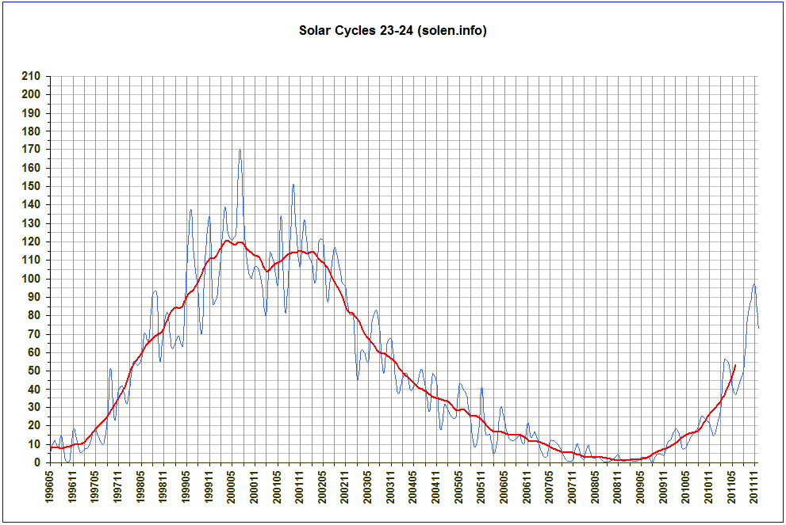
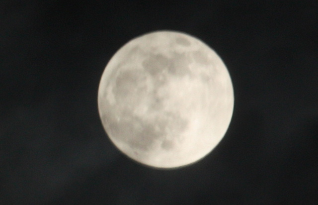
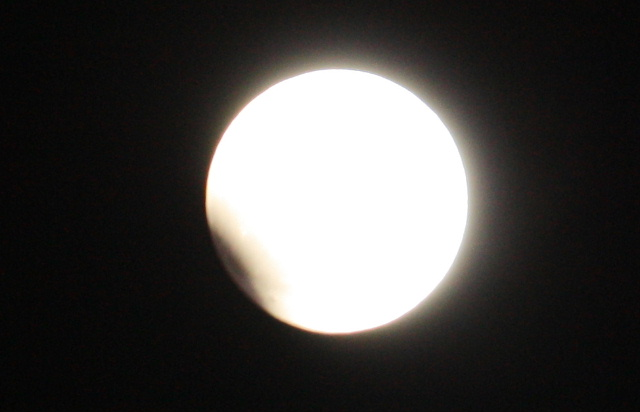
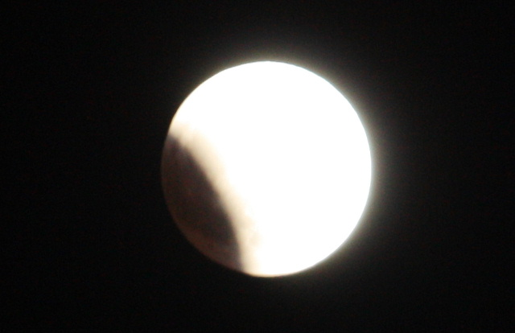
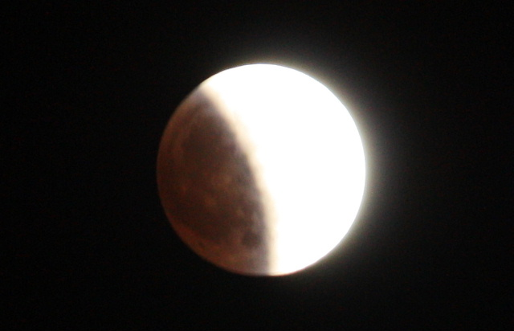
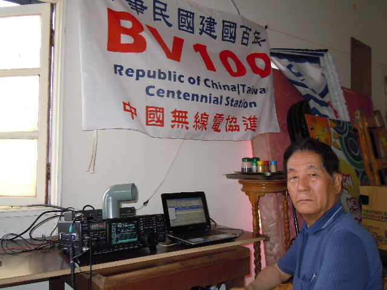

6m Today !

2011年総集編
サイクル24の太陽活動は2011年初旬から急上昇、HF帯のハイバンドは賑わった。
6mバンドでも10月/11月に初の南米がオープンした。太陽活動は荒れ模様で、SSN、
の上下は激しい。2012年からピークの2013年に掛けてのコンデション上昇に期待。
[Back Issues Dec.2011]
TIME:UTC(JST-09:00)
Report from JA1RJU(PM95sq)
31.Dec.2011(15:00c)
ZL-TV 02:35- 45.24/25/260 -- weak
VK-TV 06:20- 46.240 --
9M6XRO 07:16 50.110 CW RST 599
Report from JA1RJU(PM95sq)
30.Dec.2011(15:00d)
VK-TV 06:00- 46.240 --
VK2HN 06:58 50.110 CW
VK3DUT 06:59 50.110/135 SSB CQ
VK4AEP 07:05 50.110/130 SSB @
VK4WQ 07:08 50.110 SSB
Report from JA1RJU(PM95sq)
29.Dec.2011(15:00b)
Report from JA1RJU(PM95sq)
28.Dec.2011(15:00b)
Report from JA1RJU(PM95sq)
27.Dec.2011(15:00c)
ZL-TV 04:00- 45.240/250 --
VK-TV 04:30- 46.240 --
VK5PO 05:10 50.110 CW
VK3ZAZ 05:13 50.110 SSB
ZL3ADT 05:18 50.110 SSB
ZL3MH 05:20 50.130 SSB
VK5PO 05:26 50.098 RTTY
VK3ZAZ 05:30 50.107 CW
ZL3NW 05:32 50.110 SSB
VK7AC 05:39 50.140 SSB @
VK7XX 05:51 50.140 SSB @
VK7AC 05:52 50.140 SSB @
Report from JA1RJU(PM95sq)
26.Dec.2011(15:00c)
ZL-TV 03:00- 45.260 --
E51EME 03:22 50.110 CW CQ weak
VK-TV 05:30- 46.240 --
Report from JA1RJU(PM95sq)
25.Dec.2011(15:00c)
ZL-TV 04:40- 45.240/250 --
VK4WTN 06:21 50.110 SSB CQ
VK-TV 06:30- 46.240 --
VK4MA 06:38 50.110 CW CQ
Report from JA1RJU(PM95sq)
24.Dec.2011(15:00d)
ZL-TV 02:38- 45.250/260 --
E51EME 02:44 50.110 CW CQ
E51EME 02:47 50.110 CW QSL to ZL1RS (Direct only)
E51EME 02:59 50.110 CW CQ
ZL1NX 03:34 50.110 CW CQ
VK4WTN 04:08 50.110/140 SSB
VK4TUX 04:08 50.110/135 SSB CQ
VK4ACE 04:09 50.110/150 SSB CQ
VK4RY 04:10 50.110 SSB
VK4CRO 04:17 50.110 SSB
3D2AG/P 04:19 50.110 CW @ 3D2/R (Rotuma)
VK4WTN 04:24 50.100 CW
3D2AG/P 04:28 50.105 CW QSL to Home QTH (Direct only)
VK4TUX 04:32 50.110 SSB CQ
VK4BLK 04:40 50.110 SSB CQ
VK4TUX 04:44 50.115 SSB @ Adrian
VK4BLK 04:46 50.120 SSB @ Ray
ZL1NX 04:57 50.110 CW CQ
3D2AG/P 04:58 50.109/105 CW
ZL3NW 04:59 50.105 CW CQ
ZL4PW 05:42 50.108 CW CQ
ZL2AO 06:19 50.120 SSB
ZL3NW 06:19 50.101 CW RST599
ZL3MH 06:24 50.110 SSB
Report from JA1RJU(PM95sq)
23.Dec.2011(15:00c)
ZL-TV 02:20- 45.250/260 --
VK4WTN 05:08 50.110 CW
Report from JA1RJU(PM95sq)
22.Dec.2011(15:00c)
ZL-TV 01:40- 45.250 -- S-9
ZL-TV 02:20- 45.24/25/260 --
VK-TV 03:30- 46.240 --
VK8MS 05:15 50.110 CW
Report from JA1RJU(PM95sq)
21.Dec.2011(15:00b)
ZL-TV 02:00- 45.24/25/260 --
BA4SI 04:50 50.110 CW CQ CQ
Report from JA1RJU(PM95sq)
20.Dec.2011(15:00d)
ZL-TV 05:10- 45.24/25/260 --
VK4CRO 05:22 50.110 SSB CQ
ZL3NW 05:30 50.102 CW
VK4AMG 05:32 50.110 CW CQ
ZL3NW 05:38 50.102 CW @ RST599+
VK7AB 05:56 50.110 SSB CQ
Report from JA1RJU(PM95sq)
19.Dec.2011(15:00c)
ZL-TV 02:30- 45.24/25/260 --
VK-TV 03:20- 46.240 --
Report from JA1RJU(PM95sq)
18.Dec.2011(15:00c)
ZL-TV 03:30- 45.24/25/260 --
VK5PO 04:41 50.110 CW
Report from JA1RJU(PM95sq)
17.Dec.2011(15:00d)
ZL-TV 04:00- 45.24/25/260 --
VK5BC 04:59 50.110 SSB
VK5AYD 06:22 50.110/140 SSB RS59+
ZL4LV 06:30 50.110 SSB
ZL3NW 06:33 50.102 CW
ZL3ADT 06:34 50.110/115 SSB
ZL3MH 06:48 50.140 SSB
VK5AYD 06:50 50.095 RTTY RST599 (FT857D 40W+7EL)
VK5AYD 07:24 50.110 SSB QSO with HL
Report from JA1RJU(PM95sq)
16.Dec.2011(15:00e)
DU7/PA0HIP 04:51 50.110 CW CQ
VK5BC 05:10 50.110 SSB
VK5ZK 05:12 50.110/130 SSB
DU1EV/B 05:15- 50.008 CW Beacon
VK2OT 05:28 50.110/130 SSB
VK2YOC 05:29 50.110/140 SSB
VK4CRO 05:29 50.110/130 SSB
VK4ACE 05:30 50.110/160 SSB
VK4WTN 05:32 50.100 CW
VK2ZT 05:33 50.110 SSB
VK4HJ 05:43 50.125 SSB
VK4BRG 05:47 50.145 SSB
VK4ACE 05:53 50.150 SSB
VK4CRO 05:58 50.160 SSB
VK5BC 06:06 50.125 SSB
VK4AQF 06:06 50.110 SSB
VK5GF 06:08 50.115 SSB
VK5RO 06:10 50.115 SSB
VK4AHW 06:13 50.130 SSB
DU7/PA0HIP 06:15 50.104 CW
VK4RGG/b 06:15- 50.058 CW Beacon
VK4HJ 06:19 50.140 SSB
VK2IF 06:23 50.110 SSB
VK2BUO 06:25 50.110 SSB CQ
VK4LT 06:25 50.110 SSB
VK4LT 06:30 50.110 SSB @ Al
VK2ABT 06:35 50.110 SSB
VK4ACE 06:37 50.110/150 SSB
VK2OT 06:38 50.110/170 SSB
VK2IR 06:49 50.120 SSB @
DU7/PA0HIP 07:15 50.104 CW RST599++
DU1EV/B 07:45- 50.008 CW Beacon
Report from JA1RJU(PM95sq)
15.Dec.2011(15:00b)
ZL-TV 01:50- 45.24/25/260 --
VK-TV 01:50- 46.240 --
Report from JA1RJU(PM95sq)
14.Dec.2011(15:00c)
ZL-TV 03:20- 45.24/25/260 --
VK-TV 03:20- 46.240 --
VK4WTN 05:09 50.110/155 SSB CQ
VK4WM 05:47 50.110 CW CQ
Report from JA1RJU(PM95sq)
13.Dec.2011(15:00d)
VK-TV 03:00- 46.240 -- S9+
VK3ZAZ 04:15 50.110 CW @ CQ
VK3HY 04:17 50.110 CW @
VK3ZAZ 04:19 50.106 CW CQ
VK3HY 04:25 50.103 CW CQ
VK5PO 06:15 50.099 RTTY
VK5BC 07:30 50.110 SSB
VK5AYD 07:45 50.099 RTTY
Report from JA1RJU(PM95sq)
12.Dec.2011(15:00b)
ZL-TV 00:40- 45.24/25/260 --
VK-TV 02:00- 46.240 --
Report from JA1RJU(PM95sq)
11.Dec.2011(15:00e)
ZL-TV 00:00- 45.24/25/260 --
ZL-TV 02:00- 45.24/25/260 --
VK-TV 04:30- 46.240 --
VK6IQ 06:23 50.110/120 SSB
VK6XLR 06:24 50.110 SSB CQ
VK6YS 06:26 50.110 SSB
VK6OX 06:38 50.110 SSB CQ
VK6RPH/b 06:40- 50.066 CW Beacon
VK6XLR 06:50 50.110 SSB @ RS59
VK6NS 06:57 50.110/120 SSB
VK6NS 07:06 50.120 SSB @
VK6VZ 07:12 50.106 CW CQ CQ
DU7/PA0HIP 08:23 50.110 CW CQ
Report from JA1RJU(PM95sq)
10.Dec.2011(15:00c)
VK-TV 04:30- 46.240 --
VK2YL 04:32 50.110 SSB
VK4RGG/b 04:35- 50.058 CW Beacon
VK4QM 04:38 50.110 SSB
VK6KXW 08:38 50.110 SSB CQ RS59





11年ぶりに観測された皆既月食(12/10=21:45JST〜12/11=01:18JST)
撮影時間は左から21:39→22:05→22:18→22:34→23:14→23:45
Report from JA1RJU(PM95sq)
09.Dec.2011(15:00d)
ZL-TV 01:50- 45.24/25/260 -- strong!
VK-TV 04:00- 46.240 --
VK2BHO 05:00 50.110 CW CQ
ZL1LDS 05:03 50.120/115 SSB
ZL2WHO 05:06 50.130 SSB CQ JA
ZL1LDS 05:23 50.115 SSB
ZL2WHO 05:55 50.110/115 SSB still RS59
Report from JA1RJU(PM95sq)
08.Dec.2011(15:00c)
ZL-TV 01:30- 45.24/25/260 -- strong!
Report from JA1RJU(PM95sq)
07.Dec.2011(15:00e)
BY-TV 05:00- 49.750 -- S9+
9M4SIX/b 05:50- 50.005 CW Beacon RST589
DU1EV/B 05:50- 50.008 CW Beacon RST599+
9M4SIX/b 07:15- 50.005 CW Beacon still good!
VK6OX 08:15 50.110/155 SSB RS59
VK6RO 08:17 50.110/135 SSB RS59
VK6GL 08:22 50.135/140 SSB
VK6RO 08:27 50.110/105 CW CQ
VK6VZ 08:35 50.107 CW CQ
VK6KDX 08:38 50.125 SSB
VK6IQ 08:39 50.130 SSB
VK6AB 08:41 50.120 SSB
VK6ZFG 08:47 50.140 SSB @ OP IGOR
VK6VZ 09:23 50.108 CW CQ CQ
Report from JA1RJU(PM95sq)
06.Dec.2011(15:00c)
ZL-TV 02:10- 45.24/25/260 --
VK4ZJB 05:15 50.110 SSB
VK4WTN 05:19 50.103 CW
VK-TV 06:00- 46.240 --
Report from JA1RJU(PM95sq)
05.Dec.2011(15:00d)
ZL-TV 04:00- 45.250/260 --
VK5PO 04:47 50.110 CW
VK5ZK 04:55 50.110 CW
VK5ZK 04:56 50.110 CW @
VK5JR 04:59 50.110 SSB @
VK5AAM 05:04 50.150 SSB
VK5BC 05:07 50.110/150 SSB
VK5RO 05:10 50.150 SSB
VK5ZK 05:10 50.150 SSB
VK5ZK 05:22 50.110 SSB CQ
VK5BC 05:37 50.110 SSB
VK2HN 05:38 50.110 CW
VK5GF 05:56 50.110 SSB
VK5PO 06:11 50.110 CW CQ
Report from JA1RJU(PM95sq)
04.Dec.2011(15:00c)
ZL-TV 02:00- 45.24/25/260 --
VK-TV 05:00- 46.172/240 --
ZL2WHO 05:32 50.130/110 SSB
ZL2WHO/B 05:40- 50.025 CW Beacon
ZL2WHO/B 06:15- 50.025 CW Beacon
Report from JA1RJU(PM95sq)
03.Dec.2011(15:00b)
ZL-TV 03:00- 45.260 --
Report from JA1RJU(PM95sq)
02.Dec.2011(15:00c)
ZL-TV 02:20- 45.24/25/260 --
-----------------------------------------------------
JR6YAG/B 0224Z 50037.0 539 IN GG88DS PY4AQA
JR6YAG/B 0228Z 50037.0 555 + QSB IN GG66vl PU2OKE
-----------------------------------------------------
VK-TV 04:00- 46.172/240 --
ZL2WHO 06:24 50.110 SSB
ZL3NW 06:30 50.110 SSB
JI1FGX/DU9 08:02 50.110 SSB CQ RS59+
Report from JA1RJU(PM95sq)
01.Dec.2011(15:00c)
ZL-TV 00:30- 45.240/250 --
VK-TV 02:40- 46.172/240 --
XV2RZ 06:33 50.105 CW CQ
KG6DX 06:52 50.105 CW CQ
[Back Issues Nov.2011]
TIME:UTC(JST-09:00)
Report from JA1RJU(PM95sq)
30.Nov.2011(15:00e)
ZL-TV 01:30- 45.24/25/260 --
VK-TV 03:30- 46.172/240 --
VK2HN 05:18 50.110 CW
ZL2TPY 05:57 50.110 SSB
VK2BHO 05:59 50.110 SSB @
VK3DUT 06:05 50.110/120 SSB CQ
ZL3NW 06:06 50.100 CW CQ
ZL4PW 06:11 50.110 CW @
VK2BXT 06:12 50.110 SSB
ZL3ADT 06:17 50.110 SSB @
ZL4LV 06:26 50.110 SSB CQ
VK2HN 06:33 50.110 SSB CQ
ZL3ADT 06:35 50.110 SSB CQ
VK3ZYC 06:56 50.110 SSB CQ
Report from JA1RJU(PM95sq)
29.Nov.2011(15:00b)
ZL-TV 01:45- 45.24/25/260 --
VK-TV 02:30- 46.172/240 --
Report from JA1RJU(PM95sq)
28.Nov.2011(15:00c)
ZL-TV 01:30- 45.24/25/260 -- strong!
VK-TV 01:30- 46.172/240 -- strong!
ZL4PW 01:34 50.116 CW
ZL3NW 01:37 50.101 CW
FK8CP 02:30 50.110/120 CW
VK4AEW 02:40 50.130 SSB
VK4WTN 02:41 50.135 SSB CQ
VK4DX 02:42 50.105 CW CQ
VK4RGG/b 02:43- 50.058 CW Beacon
VK4WTN 02:46 50.100 CW CQ
Report from JA1RJU(PM95sq)
27.Nov.2011(15:00b)
ZL-TV 01:00- 45.24/25/260 --
ZL2DX 01:54 50.110/115 SSB @ RS59 (RE78RR)
Report from JA1RJU(PM95sq)
26.Nov.2011(15:00b)
ZL-TV 02:20- 45.24/25/260 --
Report from JA1RJU(PM95sq)
25.Nov.2011(00:00b)
VK-TV 02:10- 46.172 --
(Nothing 6m DX!)
Report from JA1RJU(PM95sq)
24.Nov.2011(15:00c)
ZL-TV 02:00- 45.24/25/260 -- strong!
VK-TV 02:00- 46.172/240 -- strong!
ZL2WHO 02:25 50.110 SSB
ZL2WHO 02:43 50.110 SSB @ RS57-59+ QSB
VK4AMG 02:57 50.110 CW CQ
VK4ZJB 03:05 50.110/130 SSB CQ
VK4ACE 03:10 50.110/145 SSB CQ
VK4AMG 03:15 50.110/130 SSB CQ
VK4WTN 03:20 50.105 CW CQ
VK4RGG/b 03:20- 50.058 CW Beacon
VK4AMG 03:33 50.100 CW CQ
Report from JA1RJU(PM95sq)
17-23.Nov.2011(00:00a)
◎11/17-11/23のDX Reportはお休みします。
SEANET 2011 (Burunei=V8) 11/17-11/20
9M6JU (East Malaysia) 11/20-11/23
35 JA's QSO on 6m Band (11/23)
Report from JA1RJU(PM95sq)
16.Nov.2011(15:00d)
ZL-TV 00:40- 45.24/25/260 -- strong!
VK-TV 01:00- 46.240 --
VK-TV 02:00- 46.172/240 -- strong!
VK6RPH/b 07:19- 50.066 CW Beacon
VK6RBU/b 07:19- 50.306 CW Beacon
VK6JJ 07:22 50.110 SSB
VK6JR 07:22 50.110/125 SSB
VK6IQ 07:24 50.110/135 SSB
VK6VZ 07:25 50.106 CW
VK6OX 07:33 50.110/150 SSB
VK6RPH/b 08:00- 50.066 CW Beacon
VK6KDX 08:03 50.125 SSB
Report from JA1RJU(PM95sq)
15.Nov.2011(15:00c)
VK-TV 03:00- 46.240 --
VK-TV 03:45- 46.172 --
---------------------------------------------------------
(Nothing 6m DX!)
Report from JA1RJU(PM95sq)
14.Nov.2011(15:00d)
ZL-TV 00:10- 45.24/25/260 -- strong!
----------------------------------------------------------
PY3FF 0039Z 50104.0 559 JE6AZU-#
PP5XX 0042Z 50110.0 CQ CQ JE6AZU-#
PY3NZ 0046Z 50110.0 55 tnx QSO JE6AZU-#
----------------------------------------------------------
ZL2WHO 00:43 50.110 SSB @
ZL1RS 00:44 50.110 CW CQ
ZL3NW 00:45 50.110 CW/SSB
ZL2WHO/B 00:50- 50.026 CW Beacon
ZL3NW 00:58 50.102 CW
VK-TV 01:00- 46.240 --
ZL1RS 01:32 50.104/108 CW CQ CQ
ZL1RS 01:55 50.104 CW still CQ
ZL2WHO 02:03 50.110 SSB
VK4RGG/b 03:38- 50.058 CW Beacon
VK4AMG 03:45 50.110 CW
ZL1RS 03:55 50.104 CW CQ
DU1EV/B 06:20- 50.008 CW Beacon
DU1/JJ5GMJ 06:25 50.096 CW
VK6RSX/b 12:40- 50.304 CW Beacon
Report from JA1RJU(PM95sq)
13.Nov.2011(15:00d)
DU1EV/B 00:40- 50.008 CW Beacon
----------------------------------------------------------
JE6AZU 0115Z 50110.1 519 into GG53qw PP5XX
PP5XX 0116Z 50110.0 tnx QSO JE6AZU-#
----------------------------------------------------------
VK2ZT 03:15 50.110/150 SSB
VK4AMG 03:16 50.100 CW
VK5AYD 03:20 50.110 SSB
VK5ACY 03:21 50.110/135 SSB
VK4ZJB 04:21 50.110/130 SSB
VK4AMB 04:32 50.110 CW
VK4AMG 04:49 50.110 CW CQ
V63KZ 05:13 50.112 CW CQ (05:50z.F.Out)
Report from JA1RJU(PM95sq)
12.Nov.2011(15:00d)
ZL-TV 01:10- 45.24/25/260 -- strong!
VK-TV 01:20- 46.240 --
VK-TV 02:20- 46.172/240 --
VK4MA 02:40 50.100 CW weak
FK8CP 03:04 50.110 CW/SSB CQ NA
FK8SIX/B 03:10- 50.080 CW Beacon FSK
FK8BG 03:10 50.100 CW
VK4DV 03:42 50.125 SSB
VK5AYD 03:44 50.110 SSB CQ
VK4TUX 03:44 50.110 SSB CQ
VK4WR 04:19 50.175 SSB
V63KZ 05:00 50.112 CW
V63KZ 06:10 50.112 CW
----------------------------------------------------------
MI0AYD 18:13 50.197 JT65a JR6EXN EME QSO
----------------------------------------------------------
Report from JA1RJU(PM95sq)
11.Nov.2011(15:00b)
ZL-TV 01:30- 45.24/25/260 --
VK-TV 01:30- 46.172/240 --
---------------------------------------------------------
(Nothing 6m DX!)
Report from JA1RJU(PM95sq)
10.Nov.2011(15:00e)
ZL-TV 00:00- 45.24/25/260 -- strong!
VK-TV 01:00- 46.172/240 --
FK8CP 02:30 50.110 CW/SSB CQ
VK4WTN 03:14 50.110/130 SSB
VK4ZJB 03:20 50.110 SSB
VK4MA 03:27 50.105 CW CQ CQ
FK8CP 04:44 50.110 CW CQ
V63KZ 05:31 50.110 CW @ RST599(QSL via JA0VSH)
V63KZ 06:42 50.120 SSB @ RS59+ (07:11z QSY to HF)
VK6RSX/b 12:55- 50.304 CW Beacon
Report from JA1RJU(PM95sq)
09.Nov.2011(15:00d)
ZL-TV 23:30- 45.24/25/260 -- strong!
----------------------------------------------------------
VK-TV 00:30- 46.172/240 --
FK8CP 01:56 50.110 CW/SSB CQ
E51CG 01:56 50.110 CW
VK4RGG/b 02:05- 50.058 CW Beacon
----------------------------------------------------------
JR6EA 0209Z 50109.9 CW, vy strong! PP1CZ
JR6EA 0212Z 50110.0 s 599++ PY5HOT
JR6EA 0214Z 50110.0 ssb now okinawa isl PY5HOT
JR6EA 0216Z 50110.0 59 IN GG88<>PL36 PY4AQA
JR6EA 0218Z 50109.9 TNX nice QSO PY2OC
JR6EA 0225Z 50110.0 CQing - CW PY2OC
JR6EA 0232Z 50110.0 419 PY2REK
----------------------------------------------------------
VK4AMG 02:10 50.110/100 CW
ZL3NW 02:12 50.110 CW
FK8SIX/b 02:15- 50.080 CW Beacon
FK8CP 02:15 50.110 CW
VK4WTN 02:29 50.110/165 SSB
VK4VN 02:43 50.110/130 SSB
VK4ZJB 02:50 50.110 SSB
VK4KLM 02:58 50.140 SSB
VK4HG 03:22 50.172 SSB @ Iva
VK4DX 03:30 50.105/135 SSB
VK4ZJB 03:30 50.110/160 SSB
VK4RGG/b 03:30- 50.058 CW Beacon
VK4VN 03:32 50.140 SSB
VK4ACE 03:32 50.150 SSB
VK4XE 03:47 50.125 SSB
VK4DV 03:48 50.11/125 SSB
VK2BXT 03:49 50.110 SSB
VK4ADC 04:49 50.115 SSB
VK4MA 04:50 50.121 SSB
VK2ZT 04:52 50.110/155 SSB
VK4DV 04:53 50.130 SSB
VK4ACE 05:05 50.150 SSB
VK4DX 05:20 50.104 CW
VK4AHW 05:22 50.135 SSB
VK4CMV 05:24 50.302 JT65a (WSJT)
VK4CAG 05:31 50.130 SSB @ Grahem
VK7DD 05:44 50.115 SSB @
VK4EK 06:05 50.110/120 SSB
VK4BU 06:12 50.155 SSB @ Keith
VK4KR 06:14 50.155 SSB
VK2FAD 06:25 50.170 SSB @
VK2ZT 06:28 50.110/140 SSB CQ
VK4WTN 06:41 50.110 SSB
VK4DX 06:51 50.135 SSB
VK4JAZ 06:52 50.145 SSB
VK4ATH 06:56 50.125 SSB
FK8CP 07:04 50.110 CW CQ Sked!
VK4HJ 07:08 50.144 SSB @ Chris
VK4CRO 07:14 50.110/160 SSB
VK4ATH 07:19 50.125 SSB @ Tom(QG62LJ)
DU1EV/B 09:35- 50.008 CW Beacon
9M6XRO 09:38 50.110 SSB
VK6RSX/b 13:25- 50.304 CW Beacon
Report from JA1RJU(PM95sq)
08.Nov.2011(15:00e)
ZL-TV 00:30- 45.24/25/260 -- strong!
VK-TV 01:20- 46.172/240 --
VK4RGG/b 02:54 50.058 CW Beacon
VK4AFI 02:56 50.110 SSB
VK4MA 02:56 50.100 CW
VK4WTN 02:58 50.110/165 SSB
VK4AMG 02:59 50.130 SSB
VK4ACE 03:00 50.110/150 SSB
VK5BC 03:09 50.110/145 SSB
VK2HV 03:12 50.125 SSB @ Paul
FK8CP 03:15 50.110 SSB
VK4DDC 03:15 50.110 SSB
VK5BC 03:17 50.130 SSB
VK2SJJ 03:17 50.170 SSB
VK2DAG 03:21 50.160 SSB @ Matt
VK4AFU 03:24 50.160 SSB @
VK2JHN 03:25 50.150 SSB
VK1DJA 03:27 50.135 SSB @
VK4ALH 03:32 50.130 SSB @
VK2BXC 03:36 50.140 SSB
VK3VG 03:38 50.144 SSB @
VK5PO 03:40 50.137 SSB
VK3XQ 03:41 50.130 SSB @ Rob
VK2YOC 03:46 50.110 SSB
VK4KOP 03:48 50.160 SSB
VK3AMK 03:48 50.170 SSB
VK4XE 03:52 50.145 SSB
VK4QM 03:53 50.170 SSB
VK2DAG 03:53 50.175 SSB
VK4ALH 03:56 50.130/160 SSB
VK4ACE 04:04 50.150 SSB
VK4AFU 04:14 50.180 SSB
VK4AMG 04:16 50.100 CW
VK2ZT 05:08 50.150 SSB @ Steve
VK5PO 05:10 50.137 SSB
VK4BLK 05:13 50.123 CW
VK3XQ 05:34 50.165 SSB "100's JA QSO Today!
VK4AQF 05:43 50.165 SSB
VK4ACE 05:54 50.150 SSB
VK4ZJB 06:39 50.110/160 SSB
Report from JA1RJU(PM95sq)
07.Nov.2011(15:00d)
ZL-TV 00:00- 45.24/25/260 --
VK-TV 00:55- 46.172 --
ZL2WHO/B 01:27- 50.026 CW Beacon
ZL1NX 01:36 50.110/140 SSB @ Bob RS59
ZL3NW 01:38 50.106 CW
ZL3TY 01:47 50.103 CW
VK3DUT 01:59 50.110/135 CW
ZL2TPY 02:10 50.145 SSB @ Kerry RS59
ZL3THQ 02:15 50.120 SSB
ZL2WHO 02:17 50.125 SSB
ZL2WHO/B 02:20 50.026 CW Beacon
ZL2WHO 02:32 50.125 SSB @ RS59
VK4AMG 02:42 50.134 SSB
VK4ACE 02:45 50.150 SSB
ZL2WHO/B 02:54 50.026 CW Beacon
VK1KW 02:58 50.130 SSB @ Rob RS59
VK4AMG 03:04 50.135 SSB
VK4DV 03:06 50.110 SSB
ZL3NW 03:00 50.103 CW
VK4ZJB 03:25 50.110/130 SSB
VK4JIM 03:28 50.117 SSB
VK2YO 03:33 50.110 SSB
KH7Y 03:37 50.110 SSB Sc 140deg
FK8CP 04:24 50.110 CW CQ DX
VK4ZJB 04:28 50.110/135 SSB
VK4AHW 04:24 50.120 SSB
ZL1LDS 04:27 50.115 SSB RS59+ 1st QRV on 6m Band!
ZL1RS 04:58 50.120 SSB
VK4WTN 05:19 50.100 CW CQ
VK4AMG 05:28 50.110 CW
Report from JA1RJU(PM95sq)
06.Nov.2011(15:00d)
ZL-TV 00:30- 45.24/25/260 --
VK-TV 02:20- 46.172 -- S9+
ZL3TY 02:50 50.110/107 CW
VK4ZJB 03:33 50.110 SSB
VK4MA 04:03 50.100 CW
DU1EV/B 13:00- 50.008 CW Beacon
DU3/N0QM 13:00 50.108 CW CQ
VK6RSX/b 13:10- 50.304 CW Beacon
VK8VF/b 13:10- 50.314 CW Beacon
DV1JO7KMB 13:20 50.099 CW
DU1/JJ5GMJ 13:23 50.096 CW
DU1HBC 13:31 50.195 SSB CQ RS59+
Report from JA1RJU(PM95sq)
05.Nov.2011(15:00c)
--------------------------------------------------------
JL8GFB 0047Z 50110.0 copy any beacon ? 50.029 CA3SOC
LU2MCA 0051Z 50140.0 tnx call JL8GFB-#
JL8GFB 0055Z 50140.0 Man,tnx qso an info LU2MCA
JA8JEP 0056Z 50110.0 QN03<>FF46 CA3SOC
LU6QI 0058Z 50117.8 JL8GFB-#
CE2/VE7SV 0059Z 50099.0 599 in QN03 JL8GFB-#
JA8CAR 0100Z 50118.0 LU6QI
JH8XVH 0101Z 50150.0 CA3SOC
CE1/MUSIC 0108Z 50001.0 47.9 S9 QSB in QM09 JH7XRZ-#
CE2/VE7SV 0111Z 50099.0 tnx! JH8LLE-#
JA8TSG 0120Z 50150.0 CA3SOC
JE6AZU 0129Z 50102.0 CW 549 into gg14eq ZP5SNA
PY2XB 0134Z 50102.0 tnx QSO JE6AZU-#
JR6NA 0153Z 50105.0 tnx qso s 599 in gg46ip PY5HOT
JR6FC 0220Z 50130.0 59 GG67 OP RICARDO 73 GD DX! PY2VOX
--------------------------------------------------------
VK-TV 02:00- 46.172 --
9M2/JE1SCJ 02:16 50.123 CW @
9M6YBG 02:18 50.105 CW
VK4ZJB 02:43 50.110 SSB CQ DX
VK4XE 03:24 50.110 SSB CQ
VK4ZJB 03:25 50.110 SSB CQ RS59++
DU7/PA0HIP 04:26 50.102 CW CQ & calling OA4TT
9M6YBG 05:51 50.105 CW
XV2RZ 05:53 50.092 CW CQ UP
DU1/JJ5GMJ 05:54 50.096 CW
VK4BLK 08:11 50.110 CW
Report from JA1RJU(PM95sq)
04.Nov.2011(15:00e)
ZL-TV 01:00- 45.24/25/260 --
VK-TV 03:00- 46.172/240 --
--------------------------------------------------------
JE6AZU 0330Z 50110.1 519 TNX QSO. PP5XX
PP5XX 0332Z 50110.0 tnx QSO JE6AZU-#
3D2T 0340Z 50110.0 59 JE6AZU-#
--------------------------------------------------------
VK4DX 04:05 50.104 CW
VK4AMJ 04:07 50.110 SSB CQ
VK4DV 04:08 50.110/125 SSB
ZL3NW 04:10 50.110 CW @ RST599 very short opening
VK4LJ 04:12 50.110 CW
E51CG 04:13 50.106 SSB
VK4AHW 04:13 50.120 SSB
VK4DV 04:19 50.110 SSB
VK4DX 04:25 50.104 CW @
VK2OT 04:27 50.107 CW
VK4WTN 04:32 50.096/091 CW
VK4ACE 04:44 50.110/135 SSB
FK8CP 04:45 50.110 SSB
FK8SIX/b 04:46- 50.080 CW Beacon
VK4WM 04:47 50.100 CW
VK4AHW 04:53 50.110 SSB
VK4VN 04:55 50.110 SSB
FK8GX 04:55 50.110 SSB QSO with JA6
VK4ZJB 05:02 50.110 SSB
FK8CP 05:05 50.114 SSB "CQ out side Japan!"
VK4ZJB 05:41 50.110 SSB
VK4AMG 06:08 50.110 SSB
DU1EV/B 06:30- 50.008 CW Beacon
DU3/N0QM 06:44 50.110 CW CQ
DU1EV 07:17 50.110 CW CQ
VK6RSX/b 08:00- 50.304 CW Beacon
VK6RSX/b 13:10- 50.304 CW Beacon
Report from JA1RJU(PM95sq)
03.Nov.2011(15:00d)
--------------------------------------------------------
E51CG 0117Z 50105.0 SSB JE6AZU-#
JR6RAH 0139Z 50107.0 549 in gg66 PY2XB
JR6FC 0141Z 50101.0 CW heard 599 PY2SRB
JR6YAG/B 0142Z 50037.0 539 GG88DS PY4AQA
JR6FC 0142Z 50101.0 579 in gg66pi PY2XB
VK4RGG 0149Z 50058.0 Beacon JH7XRZ-#
JA5FFJ 0156Z 50110.0 ANT TO PACIFIC AREA PY4AQA
JR6YAG/B 0204Z 50037.0 559 PY4AQA
PY2XB 0211Z 50107.0 cqcq cw JR6FC-#
---------------------------------------------------------
VK-TV 02:00- 46.172 --
VK4MA 03:35 50.100 CW
VK4WTN 03:40 50.093 CW
DU1EV/B 05:00- 50.008 CW Beacon
JI1FGX/DU9 05:00 50.120 SSB
DU7/PA0HIP 05:00 50.105 CW CQ
9M4SIX/b 05:00- 50.0048 CW Beacon weak
9M2TO 05:20 50.018 CW
VK6OX 05:40 50.100 CW
VK6ZKO 05:43 50.130 SSB
JI1FGX/DU9 06:25 50.120 SSB
DU1GM 06:25 50.120 SSB
VR2SIX/b 06:28- 50.075 CW Beacon
VK3ZAZ 06:41 50.110 CW CQ
DU1EV 06:47 50.101 CW
DU1HBC 06:49 50.200 SSB
DU1EV 07:39 50.110 SSB CQ
DU1EV/B 08:15- 50.008 CW Beacon
VK6RSX/b 08:15- 50.304 CW Beacon
DU3/N0QM 13:00 50.108 CW CQ CQ RST599
DU7/PA0HIP 13:20 50.106 CW CQ
DU1EV/B 13:25- 50.008 CW Beacon
Report from JA1RJU(PM95sq)
02.Nov.2011(15:00d)
ZL-TV 00:00- 45.24/25/260 -- very strong!
(LU5FF 00:13 50.090/110 CW good open to JA3.4)
ZL1RS 00:50 50.110 CW/SSB RS59
HL1LUA 04:36 50.110 CW
DU1EV/B 09:20- 50.008 CW Beacon
DU7/PA0HIP 09:20 50.105 CW CQ
VK5PO 12:56 50.110 CW CQ
VK4RTL/b 12:56- 50.282 CW Beacon
VK6RSX/b 12:56- 50.304 CW Beacon
VK5BC 13:08 50.110 SSB CQ JA
VK5PO 13:12 50.110 SSB CQ JA/BY
VK6VZ 13:19 50.109 CW CQ
Report from JA1RJU(PM95sq)
01.Nov.2011(15:00d)
VK-TV 03:00- 46.172 --
FK8CP 03:38 50.110 CW CQ
FK8CP 06:53 50.110 SSB CQ
DU1EV/B 09:35- 50.008 CW Beacon
DU3/N0QM 12:12 50.107 CW RST599
DU1EV/B 12:15- 50.008 CW Beacon
DU1GM 13:11 50.102 CW CQ EU
Report from JA1RJU(PM95sq)
31.Oct.2011(15:00c)
--------------------------------------------------------
CE3MUSIC 0042Z 50110.0 47.9 s5 QSB in QN03 JL8GFB-#
LU9AEA 0046Z 50110.0 JL8GFB-#
JL8GFB 0051Z 50110.0 57 in gf15ab tnk LU1EEG
JL8GFB 0054Z 50110.0 59 in GF05 73 LW1DJ
JL8GFG 0056Z 50110.0 TNX 59 in GF05PI LU4DMX
JL8GFB 0100Z 50110.0 TNX QSO 59+30 LU7FA
JL8GFB 0102Z 50110.0 57 in gf05ph LU1DMA
JL8GFB 0105Z 50110.0 LU6QI
LU6HFQ 0108Z 50125.0 tnx! My 1st LU JH8LLE-#
JL8GFB 0109Z 50110.0 QSO. 55. ONLY-SOLO LU8MB
CE1/MUSIC 0112Z 50001.0 47.9 y 48.3 S5 QSB JH7XRZ-#
JH8AHA 0112Z 50130.0 LU6QI
JL8GFB 0117Z 50110.0 55 gf05si 73 LU6ARR
JE8FSG 0123Z 50119.9 54 in gf15ab LU1EEG
JL8GFB 0138Z 50098.6 569 CQ CQ CX5BW
LU6ARR 0152Z 50115.0 tnx qso. JH0RNN
JH0RNN 0153Z 50115.0 55 gf05si LU6ARR
JL8GFB 0155Z 50110.0 5/5 FF88 73 Man LU6HTR
LU6ARR 0201Z 50115.0 tnx JA9LSZ-#
JS6RGQ 0203Z 50104.9 559 in gg66pi PY2XB
JA9LSZ 0206Z 50115.0 thx 73 55 in GF05SI LU6ARR
JS6RGQ 0220Z 50105.0 cq cq PY2XB
JS6RGQ 0230Z 50110.0 55 GG88DS PY4AQA
PY4AQA 0253Z 50110.0 tnx pl24cj JS6RGQ-9
PS7DX 0308Z 50108.0 cw cq JS6RGQ-9
--------------------------------------------------------
|
午前中の"第一ラウンド"は、関東地方での南米の入感はなし。アルゼンチン(LU)は関東以北の高緯度のJA8/JA9/JA0での入感のみ。
沖縄(石垣島)では、相変わらずPY(ブラジル)のオープンがリポートされている。 |
ZL-TV 03:00- 45.24/25/260 --
VK-TV 03:00- 46.172/240 --
FK8CP 03:28 50.110 CW CQ
FK8CP 04:50 50.110 CW/SSB
FK8SIX/b 05:00- 50.080 CW Beacon(FSK)
[Back Issues Oct.2011]
TIME:UTC(JST-09:00)
Report from JA1RJU(PM95sq)
31.Oct.2011(10:00b)
--------------------------------------------------------
CE3MUSIC 0042Z 50110.0 47.9 s5 QSB in QN03 JL8GFB-#
LU9AEA 0046Z 50110.0 JL8GFB-#
JL8GFB 0051Z 50110.0 57 in gf15ab tnk LU1EEG
JL8GFB 0054Z 50110.0 59 in GF05 73 LW1DJ
JL8GFG 0056Z 50110.0 TNX 59 in GF05PI LU4DMX
JL8GFB 0100Z 50110.0 TNX QSO 59+30 LU7FA
JL8GFB 0102Z 50110.0 57 in gf05ph LU1DMA
JL8GFB 0105Z 50110.0 LU6QI
LU6HFQ 0108Z 50125.0 tnx! My 1st LU JH8LLE-#
JL8GFB 0109Z 50110.0 QSO. 55. ONLY-SOLO LU8MB
CE1/MUSIC 0112Z 50001.0 47.9 y 48.3 S5 QSB JH7XRZ-#
JH8AHA 0112Z 50130.0 LU6QI
JL8GFB 0117Z 50110.0 55 gf05si 73 LU6ARR
JE8FSG 0123Z 50119.9 54 in gf15ab LU1EEG
JL8GFB 0138Z 50098.6 569 CQ CQ CX5BW
LU6ARR 0152Z 50115.0 tnx qso. JH0RNN
JH0RNN 0153Z 50115.0 55 gf05si LU6ARR
JL8GFB 0155Z 50110.0 5/5 FF88 73 Man LU6HTR
LU6ARR 0201Z 50115.0 tnx JA9LSZ-#
JS6RGQ 0203Z 50104.9 559 in gg66pi PY2XB
JA9LSZ 0206Z 50115.0 thx 73 55 in GF05SI LU6ARR
JS6RGQ 0220Z 50105.0 cq cq PY2XB
JS6RGQ 0230Z 50110.0 55 GG88DS PY4AQA
PY4AQA 0253Z 50110.0 tnx pl24cj JS6RGQ-9
PS7DX 0308Z 50108.0 cw cq JS6RGQ-9
--------------------------------------------------------
|
午前中の"第一ラウンド"は、関東地方での南米の入感はなし。アルゼンチン(LU)は関東以北の高緯度のJA8/JA9/JA0での入感のみ。
沖縄(石垣島)では、相変わらずPY(ブラジル)のオープンがリポートされている。 |
ZL-TV 03:00- 45.24/25/260 --
VK-TV 03:00- 46.172/240 --
FK8CP 03:28 50.110 CW CQ
FK8CP 04:50 50.110 CW/SSB
FK8SIX/b 05:00- 50.080 CW Beacon(FSK)
Report from JA1RJU(PM95sq)
30.Oct.2011(15:00d)
--------------------------------------------------------
JS6RGQ 0235Z 50110.0 - TNX QSO PY2OC
JS6RGQ 0256Z 50110.0 CQing CW - 559 PY2OC
--------------------------------------------------------
ZL-TV 03:30- 45.24/25/260 --
VK-TV 03:30- 46.172/240 --
VK4CRO 05:03 50.110 SSB CQ
FK8SIX/b 05:05- 50.080 CW Beacon(FSK)
KH6SX 05:40 50.105 CW
DU7/PA0HIP 08:00 50.105 CW CQ
DU7/PA0HIP 08:13 50.110 SSB CQ
Report from JA1RJU(PM95sq)
29.Oct.2011(15:00e)
ZL-TV 00:30- 45.24/25/260 --
VK-TV 00:30- 46.240 --
VK-TV 01:20- 46.172/240 --
---------------------------------------------------------
JS6RGQ 0130Z 50113.0 Now here PY2OC
JS6RGQ 0130Z 50110.0 CQing PY2OC
---------------------------------------------------------
FK8CP 02:52 50.110 CW CQ
FK8SIX/b 03:15- 50.080 CW Beacon
VK4WTN 03:28 50.110/140 SSB
VK4JFS 03:33 50.110 SSB
VK4KLC 03:34 50.110/140 SSB
VK4WTN 03:36 50.100 CW
VK4DV 03:40 50.125/110 SSB
VK4NP 03:42 50.150 SSB
VK2YO 03:47 50.110 SSB
VK4NP 03:52 50.125 SSB @
VK4DV 03:55 50.130 SSB
KH6SX 04:16 50.110 CW CQ Sc=130deg
FK8CP 04:19 50.110 CW CQ NA
VK6KXW 04:30 50.110 SSB
VK5ACY 05:33 50.110 SSB
DU7/PA0HIP 05:39 50.105 CW
VK6JJ 05:47 50.107 CW
VK3DUT 05:50 50.130 SSB
VK6ZKO 05:59 50.150 SSB @ OF88aa
VK6NS 06:04 50.120 SSB
VK3OE 06:20 50.120/190 SSB
VK6APH 06:22 50.130 SSB
VK6YS 06:23 50.125 SSB
VK6KDX 06:25 50.140 SSB
VK6APH 06:34 50.135 SSB @
VR2UEU 06:43 50.145 SSB @ OP=Umemura
VK6RZ 06:57 50.105 CW
VK6XLR 07:13 50.165 SSB
VK6KP 07:30 50.110 SSB
VK6BHY 07:42 50.110/145 SSB
Report from JA1RJU(PM95sq)
28.Oct.2011(15:00d)
-----------------------------------------------------------------
JA6YAG/B 0123Z 50037.0 519 ZP5SNA
ZP5SNA 0126Z 50104.0 weak JE6AZU-#
JS6RGQ 0127Z 50109.0 Tnx qso 73 ZP5SNA
JS6RGQ 0135Z 50110.7 cw strong PY2XB
JS6RGQ 0141Z 50100.0 cq cw 599 PY2XB
ZP5SNA 0143Z 50104.0 549 JE6AZU-#
JS6RGQ 0146Z 50101.0 Mni TNX QSO - 73 PY2OC
JS6RGQ 0145Z 50100.1 TNX 579 in GG66rn PY2HN
JS6RGQ 0211Z 50100.6 CQ CQ S 5/9 IN GG46IP PY5HOT
JR6YAG/B 0224Z 50037.0 start in GG88DS PY4AQA
------------------------------------------------------------------
ZL-TV 02:30- 45.24/25/260 --
VK-TV 02:30- 46.172/240 --
ZL4AAA 02:35 50.110 SSB
ZL1RS 02:46 50.120 SSB @ RS59
VK4ZJB 02:57 50.110 SSB CQ
ZL1RS 02:58 50.120 SSB again!
FK8CP 03:15 50.110 CW CQ
ZL1NX 03:27 50.106 CW @
DU7/PA0HIP 04:38 50.105 CW CQ
DU1GM 05:12 50.110 CW
DU1EV/B 07:12 50.008 CW Beacon
KG6DX 07:20 50.110 SSB
DU7/PA0HIP 07:31 50.105 CW RST599+++
DU3/N0QM 07:57 50.107 CW
VK5ZK 11:25 50.110 CW
VK6RSX/b 11:25- 50.304 CW Beacon
VK8VF/b 11:25- 50.310 CW Beacon
DU3/N0QM 11:30 50.107 CW CQ DX
VK4WTN 11:32 50.105 CW
JI1FGX/DU9 12:07 50.110/130 SSB
VK6BHY 12:10 50.120 SSB
DU7/PA0HIP 12:15 50.105 CW
VK8MS 12:52 50.110 CW/SSB CQ
Report from JA1RJU(PM95sq)
27.Oct.2011(15:00e)
ZL-TV 02:30- 45.24/25/260 --
VK-TV 02:30- 46.172/240 --
VK4ZJB 02:56 50.110 SSB
VK4DV 02:58 50.110/125 SSB
VK4BG 03:03 50.110 SSB
VK4WTN 03:11 50.100 CW
FK8CP 04:10 50.110 CW CQ
KH7Y 04:36 50.105 CW CQ RST599+
KH7Y 05:15 50.105 CW CQ CQ still good!
VK6RSX/b 08:35- 50.304 CW Beacon
VK6RSX/b 12:55- 50.304 CW Beacon
VK8VF/b 12:55- 50.310 CW Beacon
DU7/PA0HIP 13:10 50.110 CW
DU7/PA0HIP 13:33 50.110 CW/SSB CQ
VK8MS 13:48 50.110 CW CQ
Report from JA1RJU(PM95sq)
26.Oct.2011(15:00e)
LU4HP 01:20 50.110 SSB RS59
LU5FF 01:23 50.107 CW
LU5FF 01:27 50.090 CW @ UP2
KH7Y 01:30 50.100/097 CW CQ RST599
LU4FW 01:39 50.150 SSB @
LU9HW 01:48 50.110 SSB @
LU5FF 01:49 50.110 SSB @
E51CG 02:14 50.105 CW CQ
A35CT 02:27 50.120 SSB @ RS59
E51CG 03:00 50.105 SSB CQ CQ
FK8CP 03:09 50.115 CW CQ
VK4DDC 03:12 50.110 CW CQ
VK4BG 03:16 50.110 SSB
DU7/PA0HIP 05:53 50.112 CW
DU1ZV 06:16 50.112 CW @ RST599 (OP/QSL JA1BRK)
DU7/PA0HIP 06:19 50.115 CW CQ Hawaii
DU1ZV 07:20 50.126 SSB RS59++
DU7/PA0HIP 07:22 50.105 CW CQ
VK6RSX/b 09:12- 50.304 CW Beacon
VK8VF/b 12:30- 50.310 CW Beacon
VK5BC 12:44 50.110/140 SSB
VK5BC 13:44 50.110/130 SSB
今朝、関東地方では南米・アルゼンチン(LU)の入感があった。この南米のF2によるオープンは"サイクル24"になって初めて。関東では10:00JST少し前からオープンしたLU'sは、約1時間ほど入感していたが、
信号も強力で久しぶりの南米のパイルアップで賑わった。
西日本では先日、南米・PY(ブラジル)のオープンがリポートされているが、東日本からの南米のオープンでは、
PYよりも、LUの入感が有利となっている。
この南米のオープンと並行して、昨日に続いてハワイのKH7Yも同時にRST599で入感していたが、
さすがにJAからのコールは少なく、間もなくQRT？した。
南米の信号がフェードアウトした直後から、南太平洋からA35CT、E51CG、FK8CPなどの入感があり、
久しぶりに入感したトンガのA35CTは、信号のピークでRS59と強力で多くのJA'sがパイルアップしていた。
|
Report from JA1RJU(PM95sq)
25.Oct.2011(15:00c)
KH7Y 03:14 50.105 CW RS59+
KH6U 03:17 50.112 CW RS59
KH6SX 03:42 50.108 CW @
KH6U 03:50 50.112 CW still good!
KH7Y 03:50 50.105 CW
VK6RSX/b 08:45- 50.304 CW Beacon
Christmas島(East・Kirimati)から運用していたT32Cは、約1ヶ月間の予定を終へ、10月24日にQRTした。
2月に英国本土からコンテナ船で送られた機材が、現地到着の直前にコンテナ船が故障し、航行不能となり、
全ての機材が現地に届かないという予想外のアクシデントに見舞われながらの運用だった。
機材は、スポンサーのYAESUから、急遽提供されたFT-450D、10台と参加メンバーが持ち寄った、
"急こしらえ"のワイヤーアンテナで運用されたが、結果は予想をはるかに超える、210,112-QSOの記録を残した。
Unique QSO（異なるコールサイン）も48,892局と予想以上の成果だった。
期待された6mでは、残念ながらJAとのオープンはなかったが、北米/中米を中心に110-QSO( SSB= 25、CW= 78、EME= 7)に成功した。ハワイ経由で別便で送られていたアンテナ(6M8GJ=8EL)が使えた6mで、
この時期には絶対に電離層伝搬でのQSOの可能性が無いヨーロッパとEMEでのQSOに成功したことは特筆出来る。
|
Report from JA1RJU(PM95sq)
24.Oct.2011(15:00b)
VK-TV 03:00- 46.172 --
-----------------------------------------------------
CE3AA 2351Z 50029.2 CQ CQ but beacon mode 599 JL8GFB-#
CE4WJK 2332Z 50125.0 55/59 SSB JL8GFB-#
-----------------------------------------------------
Report from JA1RJU(PM95sq)
23.Oct.2011(15:00c)
ZL-TV 01:20- 45.24/25/260 --
VK-TV 02:30- 46.172 --
VK4VN 03:28 50.110/120 SSB
VK4WTN 03:29 50.100 CW
DU7/PA0HIP 07:17 50.102 CW
Christmas島(East・Kirimati)のT32Cの運用も残り少なくなってきたが、10月22日現在の総QSOは19,8964(Unique Call=46,325)となった。
6mのQSOは、北米を中心に109-QSO(SSB=24、CW=78、JT65=EME=7)となっている。
残念ながら6mでのJA(Asia)とのオープンは記録されていないが、週明けの10/25日にはQRTの予定なので、QSOのチャンスはかなり難しくなった。KH6がスキャッターで聞こえる時間帯の50.102MHzのBeaconに要注意。
Tahiti(Papeete)からTX3Tで運用していたグループは、現在マルケサス諸島(Nuku Hiva)に移動してTX7Mのコールサインで6m(50.106MHz)にQRVしている。TX7Mからの運用は11月1日までの予定。
|
Report from JA1RJU(PM95sq)
22.Oct.2011(15:00c)
--------------------------------------------------------
JR6FC 0117Z 50110 SSB ZP5SNA(OP=JA1SNA)
--------------------------------------------------------
VK-TV 02:50- 46.172/240 -- 46.172 very strong!
FK8CP 03:23 50.110 CW CQ
VK2BHO 03:50 50.110/102 CW
VK2QO 03:58 50.110/126 SSB
VK2FAD 04:00 50.110/130 SSB
VK2ZT 04:08 50.110/160 SSB
VK4BG 04:19 50.110/120 SSB
VK2KRR 04:21 50.1110/145 SSB
VK2EMA 04:39 50.125 SSB
VK4RTL/b 11:55- 50:280 CW Beacon
VK6RSX/b 11:55- 50.304 CW Beacon
VK6BHY 11:57 50.110 SSB CQ
VK5ZK 12:03 50.110 CW CQ
DU1GM 12:16 50.110 SSB CQ
VK4SIX 12:20 50.115 SSB RS59
Report from JA1RJU(PM95sq)
21.Oct.2011(15:00c)
VK-TV 02:00- 46.172 --
VK4WTN 02:58 50.100 SSB
VK4VN 02:59 50.110/130 SSB
VK4RGG/b 03:00- 50.058 CW Beacon
FK8CP 03:08 50.110 CW CQ
3W2BB 05:10 50.115 SSB
KH7Y 05:22 50.105 CW
VK4WM 05:33 50.105 CW CQ
Report from JA1RJU(PM95sq)
20.Oct.2011(15:00d)
VK-TV 03:00- 46.172 --
FK8CP 03:20 50.110 CW CQ
VK4WTN 03:22 50.100 CW
VK4TUX 03:24 50.102 CW calling T32C !
VK6RSX/b 09:00- 50.304 CW Beacon
VK6RSX/b 11:58- 50.304 CW Beacon
VK6BHY 12:00 50.115 SSB RST599
Report from JA1RJU(PM95sq)
19.Oct.2011(15:00c)
VK-TV 03:00- 46.172 --
VK4ZJB 05:43 50.110 SSB CQ
VK4ACE 05:47 50.120 SSB
VK4VN 05:48 50.110/130 SSB CQ
VK4ZJB 06:04 50.110 SSB CQ "JCC Tokyo"
VK2ZT 06:10 50.110 SSB CQ
DU7/PA0HIP 06:17 50.110 CW CQ
Report from JA1RJU(PM95sq)
18.Oct.2011(15:00c)
VK-TV 03:00- 46.172 --
FK8CP 05:53 50.110 CW CQ
DU7/PA0HIP 06:54 50.110 CW CQ
DU7/PA0HIP 07:30 50.110 CW CQ
VK6RSX/b 12:20- 50.304 CW Beacon
Christmas島(East・Kirimati)のT32Cの6mは、昨日まではEMEの運用によるQSOが先行していたが、
今日(日本時間)は、W4/5など北米南部を中心にXE、KH6/7などと電離層伝搬によるQSOに成功している。
OPのMikeのリポートでは、今日だけで100局以上とQSOしたとの事。
クラスターに、BA4(中国)からのQSOがリポートされていたが、T32Cからの確認は不明。
今のところJAへのオープンは確認されていないが、KH6がスキャッターで聞こえている時間帯には、
50.102MHzのBeaconに要注意。Tahiti(Papeete)から6m(50.106MHz)にQRVしているTX3TとのQSOもKH6/7からリポートされている。
|
Report from JA1RJU(PM95sq)
17.Oct.2011(15:00d)
VK-TV 03:00- 46.172 --
VK5PO 04:11 50.110 CW
VK5ZK 04:15 50.110 CW
VK5BC 04:18 50.110/130 SSB
VK5PO 04:23 50.105 CW
VK3OT 04:36 50.110 CW CQ
VK3ZAZ 04:38 50.110 CW
VK4EK 04:47 50.110 SSB CQ
VK5JR 05:37 50.110 SSB
FK8CP 09:49 50.110 CW CQ
FK8CP 10:09 50.110 SSB
VK3ZAZ 10:14 50.110 SSB
VK4EK 10:14 50.110 SSB CQ
VK4RTL/b 10:15- 50.282 CW Beacon
VK8VF/b 10:15- 50.310 CW Beacon
VK8MS 10:23 50.110 CW CQ
VK4WTN 10:26 50.100 CW
VK4RO 10:33 50.110 SSB CQ
FK8CP 10:50 50.110 CW CQ
Christmas島(East・Kirimati)のT32Cは6mにも出始めたが、昨日(日本時間)は現地の"月の出"からEMEにトライし、
W7GJ、ON4GG、ON4IQ、ES6QRとのQSOに成功した。
現在は"仰角"が可変出来ない水平のアンテナ(M2=6M8GJ)のため、EMEのQSOは"月の位置"の低い時間帯のQSOに限られている。
昨日のT32Cとの初QSOだったW7GJは0800zで、アンテナ仰角10度前後、最後にQSOしたES6RQは0909zで、
アンテナの仰角24度前後だった。この時間帯に"月が見える"北米、ヨーロッパの局が受信し、T32Cの信号を確認したが、
初日にQSO出来たのは4局だけ。
現在、EME時に使用するリニアーアンプは160mと共用で、160mのコンデションが落ちた後に6mで使用可能となっていると。
50.102MHzのFT-450D(50W)のBeaconは、北米、ハワイ、中米などで受信されているが、
電離層伝搬でのQSOはまだ確認されていない。
|
Report from JA1RJU(PM95sq)
16.Oct.2011(15:00b)
GA T32C now beacon 50102MHz with 50W into 8ele(6M8GJ). Please notice a HF op if heard. Please spread the word.
(20011/10/16=00:22:40 T32C Mike)
◎Lance W7GJ worked T32C on 6meter EME on October 16 at 07:59z. This was Lance's 174th country on 6 meters. with 120 via EME.(Info: QST Jan 2012)
|
Report from JA1RJU(PM95sq)
15.Oct.2011(15:00c)
VK-TV 03:00- 46.172 --
FK8CP 03:00 50.110 CW CQ
FK8CP 03:30 50.110 CW CQ
DU7/PA0HIP 04:00 50.110 CW CQ
Report from JA1RJU(PM95sq)
14.Oct.2011(15:00b)
DU1EV/B 06:58 50.008 CW Beacon
DU3/N0QM 07:01 50.110 CW CQ
DU7/PA0HIP 07:04 50.105 CW CQ
Report from JA1RJU(PM95sq)
13.Oct.2011(15:00d)
VK-TV 03:00- 46.172/240 --
------------------------------------------------------------------
KH7Y 0342Z 50105.0 CQ JE6AZU-#
BA7IO 0346Z 50105.0 on top of KH7Y PY2XB
BA7IO 0348Z 50105.0 tu 559 gg48 PY2SRB
BA7IO 0352Z 50098.0 cq cq - lotw user PY5EW
KH7Y 0355Z 50105.0 130deg 589 JA3EGE-#
BA7IO 0358Z 50098.0 319 in gg65 PY2REK
------------------------------------------------------------------
VK4WM 03:43 50.110 SSB
VK4KLC 03:44 50.160 SSB
VK4HJ 03:46 50.140 SSB
VK4EK 03:46 50.140 SSB
VK5PO 03:47 50.100 CW
VK4RGG/b 03:47- 50.058 CW Beacon
VK3OE 03:50 50.100 CW
FK8CP 03:58 50.110 CW CQ
VK4WM 04:00 50.160 SSB
VK4ACE 04:05 50.125 SSB
VK4VN 04:06 50.130 SSB
VK4DMI 04:08 50.140 SSB
VK4ZJB 04:23 50.110 SSB CQ
VK2JHN 05:26 50.110/130 SSB CQ
VK4VN 05:30 50.130 SSB
VK2VL 05:38 50.110/160 SSB
VK2OT 05:44 50.103 CW CQ
VK4WM 06:19 50.110 CW CQ
DU7/PA0HIP 07:06 50.110 CW CQ
FK8CP 07:19 50.110 CW CQ
VK5AYD 09:54 50.110 CW
------------------------------------------------------------------
9M6YBG 1243Z 50105.0 559 >>PM74VV JR3UPT-#
ST2AR 1255Z 50101.0 call CQ CW 519 VK8MS
A61Q 1257Z 50110.0 5x0 his /M mobile VK8MS
A61Q/M 1303Z 50110.0 ooops right call DU7/PA0HIP
ST2AR 1307Z 50101.0 599 BD7OH
A61Q/M 1318Z 50110.0 57 VR2XMT
A45XR 1323Z 50105.0 599 TKS Chris! VR2HF
ST2AR 1325Z 50101.0 349 TKS Robert VR2HF
ST2AR 1325Z 50101.0 599++ BA7IO
A45XR 1325Z 50105.0 599++ BA7IO
ST2AR 1327Z 50101.0 TKS SSB CONTACT VR2XMT
------------------------------------------------------------------
Report from JA1RJU(PM95sq)
12.Oct.2011(15:00d)
VK-TV 03:00- 46.172/240 --
------------------------------------------------------------------
PY1RO 0329Z 50108.0 599 TNX BV2DQ
VR2SIX/B 0329Z 50075.0 559 in GG88 CQ VR in 50140 PY4AQA
------------------------------------------------------------------
FK8CP 03:25 50.110 CW
FK8SIX/b 03:30- 50.080 CW Beacon
VK4RGG/b 03:50- 50.058 CW Beacon
VK4WTN 03:53 50.098 CW
VK4VN 03:56 50.145 SSB
VK4ADC 04:03 50.110/130 SSB CQ
VK4VN 04:07 50.110 SSB CQ
VK4WM 04:07 50.110 SSB CQ
FK8CP 04:37 50.110 CW
VK4CRO 04:39 50.110 SSB CQ
VK4VN 04:50 50.140 SSB
VK4ZJB 04:53 50.110/170 SSB CQ
VK4RO 04:55 50.110 CW CQ
VK4BG 05:00 50.110 SSB CQ
DU7/PA0HIP 06:39 50.110 CW CQ RST599
VK6JJ 07:00 50.110 CW CQ
DU3/N0QM 07:09 50.110 CW CQ DX RST599
DU7/PA0HIP 07:40 50.105 CW QSO with DU3/N0QM
Report from JA1RJU(PM95sq)
11.Oct.2011(15:00d)
VK-TV 03:00- 46.172 --
VK4WM 03:25 50.100 CW
VK4WTN 03:26 50.095 CW
VK6RSX/b 06:50- 50.304 CW Beacon
9M6XRO 06:59 50.110 CW CQ RST599+
-----------------------------------------------------------------
9N1AA 0903Z 50120.0 wkd 59/59 mni tks DU1GM
9N1AA 0901Z 50120.0 59++SSB...FREE BA7IO
9N1AA 0853Z 50120.0 calling cq toward JA-9m 9N1AA
ST2AR 1232Z 50102.0 wkd 599/599 tks new one!! DU1GM (参考)
-----------------------------------------------------------------
Report from JA1RJU(PM95sq)
10.Oct.2011(15:00c)
VK-TV 04:00- 46.172 --
DU7/PA0HIP 06:19 50.110 CW CQ RST599
Report from JA1RJU(PM95sq)
09.Oct.2011(15:00d)
VK-TV 03:20- 46.172/240 -- VK2/4-TV
VK4ZJB 04:20 50.110 SSB CQ RS59
VK6RPH/b 04:20- 50.066 CW Beacon
VK6KXW 04:29 50.110/130 SSB CQ & QSY to 50.130MHz
VK4WTN 04:34 50.100 CW
VK6IQ 04:38 50.110 SSB
VK6JJ 04:47 50.105 CW
VK6KP 05:00 50.110/130 SSB
VK4EK 05:06 50.110 SSB CQ KH6
Report from JA1RJU(PM95sq)
08.Oct.2011(15:00c)
PY2XB 02:17 50.110 SSB into JR6/S(Okinawa)
-------------------------------------------------------------------
PY2SRB 0230Z 50110.0 Sorry PY2XB JR6SEU-#
BV100 0230Z 50105.0 CQing PY2OC
BV2DQ 0226Z 50110.0 59 TNX QSY 50130 PY4AQA
BV100 0225Z 50100.0 tnx PY2DO
BV100 0237Z 50130.1 559 in GG53qw PP5XX
BV2DQ 0237Z 50130.1 559 !! PP5XX
-------------------------------------------------------------------
VK-TV 02:20- 46.172 -- VK4-TV
FK8CP 02:34 50.110 CW/SSB CQ
DU1EV/B 07:10- 50.008 CW Beacon
JI1FGX/DU9 07:15 50.120 SSB RS59
DU3/N0QM 07:17 50.113 CW
DU3/N0QM 07:19 50.113 CW @
VR2SIX/b 07:20- 50.075 CW Beacon
DU7/PA0HIP 07:32 50.105 CW CQ RST599
YB0AKM 07:37 50.105 CW
YB0AKM 07:52 50.105 CW UP-2KHz
Report from JA1RJU(PM95sq)
07.Oct.2011(15:00c)
DU7/PA0HIP 07:29 50.100 CW CQ RST599
DU1EV/B 07:30- 50.008 CW Beacon
Report from JA1RJU(PM95sq)
06.Oct.2011(15:00c)
VK-TV 05:00- 46.172 -- VK4-TV strong
VK4WM 05:17 50.101 CW
KG6DX 07:04 50.110/105 CW CQ
DU1EV/B 07:09- 50.008 CW Beacon
FK8CP 09:12 50.110 CW CQ
FK8SIX/b 09:13 50.080 CW
VK4WR 09:14 50.110 CW
VK4RTL/b 09:15 50.282 CW Beacon
VK4WTN 09:16 50.100 CW
FK8CP 09:30 50.110 CW CQ "No JA !"
Report from JA1RJU(PM95sq)
05.Oct.2011(15:00c)
VK-TV 03:45- 46.172 -- VK4-TV strong
DU7/PA0HIP 07:24 50.095 CW
BA4SI 07:26 50.095 CW
DU7/PA0HIP 07:45 50.110 CW
(3D2R 07:45 50.110 SSB into KH7Y)
3D2R 08:20 50.110 SSB into JA3.4.6-JA0
Report from JA1RJU(PM95sq)
04.Oct.2011(15:00d)
VK-TV 04:40- 46.172 -- VK4-TV
DU1EV/B 07:12- 50.008 CW Beacon
DU7/PA0HIP 07:12 50.105 CW CQ 599++
DU7/PA0HIP 07:46 50.110 CW
3D2R/B 08:20- 50.095 CW Beacon Rotuma Is
3D2R 08:30 50.110 SSB
3D2R 08:40 50.110/118 SSB @ UP5-10KHz
VK4WM 09:11 50.110 SSB CQ
3D2R 09:28 50.110 SSB still good! UP5-10
3D2R 09:58 50.100 CW
Report from JA1RJU(PM95sq)
03.Oct.2011(15:00d)
VK-TV 03:30- 46.172 -- VK4-TV
VK4WTN 04:10 50.100 CW
VK-TV 05:12- 46.172/240 -- VK4/2-TV
VK5AYD 05:25 50.110 SSB CQ RS59+
VK6RSX/b 08:00- 50.304 CW Beacon
DU1EV/B 08:00- 50.008 CW Beacon
FK8CP 08:42 50.110 CW CQ RST599
FK8SIX/b 08:44- 50.080 CW Beacon
FK8CP 09:05 50.110 CW CQ
Report from JA1RJU(PM95sq)
02.Oct.2011(15:00d)
ZL-TV 02:20- 45.260 -- weak
VK-TV 03:00- 46.172 -- VK4-TV strong!
VK4WR 04:45 50.130 SSB
VK4WM 04:49 50.100/098 CW CQ
VK5AYD 04:52 50.110/145 SSB
VK5AYD 05:25 50.110 CW CQ
FK8CP 08:36 50.110 CW CQ
FK8CP 08:58 50.110 SSB CQ
3D2R/B 09:15 50.095 CW Beacon
Report from JA1RJU(PM95sq)
01.Oct.2011(15:00c)
VK-TV 03:30- 46.172 -- VK4-TV
[Back Issues Sep.2011]
TIME:UTC(JST-09:00)
Report from JA1RJU(PM95sq)
30.Sep.2011(15:00b>
VK-TV 02:30- 46.172 -- VK4-TV
DU7/PA0HIP 07:48 50.110 SSB CQ 59++
Report from JA1RJU(PM95sq)
29.Sep.2011(15:00c>
FK8CP 02:57 50.110 CW/SSB CQ
VK-TV 05:00- 46.172 -- VK4-TV
DU7/PA0HIP 06:22 50.110 CW
FK8CP 07:00 50.110 CW/SSB
FK8SIX/b 07:00- 50.080 CW Beacon
VK6RSX/b 07:00- 50.304 CW Beacon
DU1EV/B 07:00- 50.008 CW
Report from JA1RJU(PM95sq)
28.Sep.2011(15:00e>
VK-TV 02:50- 46.172/240 -- VK2/4-TV
KH6SX 02:58 50.110 CW CQ Sc 150deg
ZL-TV 03:30- 45.260 --
VK4ZJB 03:50 50.110 CW
VK4BLK 04:15 50.110 CW
DU7/PA0HIP 07:08 50.105/110 CW RST599
VK-TV 07:10- 46.172/240 -- VK2/4-TV
DU1EV/B 07:10 50.008 CW Beacon
DU7/PA0HIP 07:14 50.115 SSB RS59
FK8CP 07:22 50.110 CW/SSB CQ
FK8CP 07:57 50.110 SSB RS59
VK4FIL 08:00 50.110 SSB
VK4WM 08:02 50.110 SSB CQ
VK4DX 08:02 50.105 CW CQ
VR2SIX/b 08:02- 50.075 CW Beacon
FK8SIX/b 08:02- 50.080 CW Beacon
VK6RSX/b 08:02- 50.304 CW Beacon
VK4WM 08:10 50.144 SSB
VK4MA 08:15 50.100 CW
VK6KP 08:15 50.130/140 SSB
VK4BTC 08:18 50.130 SSB
FK8CP 08:19 50.110 SSB CQ
DU7/PA0HIP 08:21 50.105 CW CQ
BD7NWF 08:21 50.105 CW
BD7IVS 08:23 50.190 SSB
FK8CP 08:50 50.110 CW CQ
Report from JA1RJU(PM95sq)
27.Sep.2011(15:00b>
Report from JA1RJU(PM95sq)
26.Sep.2011(15:00b>
Report from JA1RJU(PM95sq)
25.Sep.2011(15:00c>
VK-TV 03:30- 46.172/240 -- VK2/4-TV
DU1EV/B 07:24 50.008 CW Beacon
DU7/PA0HIP 07:29 50.105 CW CQ
DU7/PA0HIP 07:55 50.105 CW RST599
Report from JA1RJU(PM95sq)
24.Sep.2011(15:00b>
VK-TV 07:25- 46.172 -- VK4-TV S-6
DU1EV/B 07:25- 50.008 CW Beacon
JI1FGX/DU9 07:30 50.113 SSB
FK8CP 08:20 50.110 CW/SSB
FK8CP 08:47 50.110 CW CQ
VK4ZJB 08:54 50.110 SSB
DU7/PA0HIP 12:00 50.110 CW CQ 599++
VK8MS 12:04 50.110 SSB
Report from JA1RJU(PM95sq)
01.Sep〜23.Sep.2011(15:00b>
●この期間のリポートは休止します。
---------------------------------------------------
【参考】
***************** 2011/09/23 *****************
DU1/JJ5GMJ 1423Z 50101.0 559 >>PM74 JR3UPT-#
DU7/PA0HIP 1415Z 50110.0 599 >> PM74 JR3UPT-#
9W6RT 1329Z 50115.0 57 tnx JR6SEU-#
VK6KP 1328Z 50115.0 59 TNX @Okinawa-Is JR6SEU-#
9V1TT 1249Z 50120.0 PM51MP<>OJ11XH tnx JE6AZU
DU1/JJ5GMJ 1226Z 50101.4 CW CQ 599 JA6TEW-#
DU7/PA0HIP 1203Z 50110.0 599 >> PM74 JR3UPT-#
VK8MS 1153Z 50110.0 JR3UPT-#
VK6RSX/B 1149Z 50304.0 569 @Okinawa-Is JR6SEU-#
VK6RSX/B 1141Z 50304.0 559 >>PM74 JR3UPT-#
9W6RT 1140Z 50110.0 cq 53 hrd JG3LEB
DU1EV/B 1136Z 50007.8 beacon 559 JG3LEB
VK6JQ 1050Z 50106.8 cq 579 hrd JG3LEB
9M2TO 0944Z 50102.5 CQing JE6AZU-#
FK8CP 0900Z 50110.7 CQ 599L but no answer JG1RVN-#
FK8CP 0840Z 50115.0 CQ ssb JA6LLA-#
FK8SIX 0828Z 50080.0 Beacon 579 JR2HCB
FK8CP 0822Z 50110.7 CW CQ JR2HCB
KH7Y 0330Z 50110.6 CW RST 579 BV2DQ
***************** 2011/09/22 *****************
FK8CP 0900Z 50110.7 CQ 599 JG1RVN-#
FK8CP 0840Z 50115.0 CQ ssb JA6LLA-#
FK8SIX 0828Z 50080.0 Beacon 579 JR2HCB
FK8CP 0822Z 50110.7 CW CQ JR2HCB
(BV2DQ 0354Z 50110.2 559 into GG53qw Yessss PP5XX)
(UA-TV 0346Z 50000.1 49.749 video in GG53 PP5XX)
***************** 2011/09/21 *****************
9V1TT 1323Z 50110.0 JE6AZU-#
VK8MS 1253Z 50110.0 CW CQ 599+ JR6EXN
9W6RT 1221Z 50110.0 CQ JE6AZU-#
VK8MS 1218Z 50105.0 CW 599+ JR6EXN
VK4WTN 0957Z 50110.0 SSB 55 JR6EXN
VK4EK 0947Z 50110.0 cq ssb JH3GCN-#
JI1FGX/DU9 0921Z 50110.0 JG3AVS-9
JI1FGX/DU9 0908Z 50110.0 ssb cq Mindanao Island JE2XBY
JI1FGX/DU9 0908Z 50110.0 33 in Osaka. SWL JN3VQM
DU7/PA0HIP 0824Z 50105.0 599 JH7XRZ-#
DU7/PA0HIP 0815Z 50105.0 cq 599++ JE2XBY
DU7/PA0HIP 0813Z 50103.0 599 JN3VQM
VK4BLK 0618Z 50110.0 CW CQ 599 JR6EXN
***************** 2011/09/20 *****************
DU1EV/B 1229Z 50007.8 beacon 419 JG3LEB
DU7/PA0HIP 1213Z 50105.0 cq 579 hrd JG3LEB
VK8MS 1111Z 50105.0 JF3QJR-#
VK4RHT/B 1002Z 50280.5 539 JE6AZU-#
VK8VF/b 0955Z 50310.0 beacon 539 JG3LEB
VK4RTL/B 0946Z 50282.0 539; vk4rht/b 559, vk6rsx/b 53 JG3LEB
***************** 2011/09/19 *****************
9W6RT 0932Z 50110.0 SSB CQ JR6EXN
DU7/PA0HIP 0915Z 50105.0 599 JA1LZK-#
VK4RTL/B 0910Z 50282.0 599 JR6EXN
DU7/PA0HIP 0855Z 50105.0 CW CQ 599 JR6EXN
VK6BHY 0812Z 50110.0 SSB CQ 59 JR6EXN
DU1/JJ5GMJ 0811Z 50133.2 SSB CQ JR6EXN
DU1EV/B 0802Z 50008.0 599+ Bloody Strong JA1LZK-#
DU1/JJ5GMJ 0756Z 50102.0 CW CQ 599 JR6EXN
***************** 2011/09/18 *****************
VK8AW 1328Z 50110.0 55 hrd JG3LEB
VK6RSX/B 0847Z 50304.0 559 - 589 QSB now. JR6EXN
VK6RSX/B 0838Z 50304.0 539...Sri, JR6EXN
VK6SIX 0834Z 50304.0 539 JR6EXN
FK8CP 0154Z 50110.0 CQn SSB JM1WBB-#
***************** 2011/09/17 *****************
VK8MS 1300Z 50110.0 CQ JE6AZU-9
VK8MS 1259Z 50110.0 CQ JE6AZU-#
VK8VF/B 1155Z 50310.0 559 JE6AZU-#
VK6BEY 1036Z 50110.0 CQING 59 JA3EGE-#
VK6BEX 1032Z 50110.0 CQ DX ssb JA6LLA-#
VK6JQ 1023Z 50106.0 599 and VK6RSX/B 599 JA3EGE-#
9M2/JE1SCJ 0917Z 50123.0 CQn JG1EIQ-#
VK4WTN 0910Z 50099.6 CQ cq cw JA6LLA-#
VK4WTN 0849Z 50110.0 SSB CQ JR3UPT-#
VK4WTN 0843Z 50105.0 cq JA6LLA-#
VK4ZJB 0842Z 50110.0 CQ JR2HCB
VK4WM 0841Z 50124.9 599 Hrd JR2HCB
9M2/JE1SCJ 0834Z 50123.0 559 hrd JG3LEB
DU1EV 0749Z 50103.1 JA9LJS
DU1EV 0727Z 50170.0 Tnx Abet ! JH2GZY
VR2VBV 0723Z 50125.0 TNX Ryan! JH2GZY-9
KH7Y 0705Z 50095.0 Loud JR1MLT
KS0C/KH2 0705Z 50114.0 sorry call cq cq JA6LLA-#
KH0C/KH2 0701Z 50114.0 cq JA6LLA-#
VK6JJ 0654Z 50106.0 CQ DX JA6LLA-#
VK6IQ 0651Z 50110.0 CQ6 ssb JA6LLA-#
9M6YBG 0614Z 50105.0 cq JA6LLA-#
9M6YBG 0556Z 50104.7 cq 599 hrd JG3LEB
VK6XLR 0542Z 50140.0 JE2EHP-#
DU7/PA0HIP 0535Z 50105.0 JR3UPT-#
9M2/JE1SCJ 0531Z 50123.1 CW CQ JA6WJL-#
-------------------------------------------------------------------
***************** 2011/09/06 *****************
VK8AW 1322Z 50110.0 JE6AZU-#
***************** 2011/09/05 *****************
VK6RSX/B 1047Z 50304.0 Dampier OG89 JR3UPT-#
VK6KP 0944Z 50135.0 JA3FRI-#
VK6BHY 0932Z 50110.0 59 JE6AZU-#
VK4WM 0913Z 50100.0 CQ JH7XRZ-#
VK4WM 0908Z 50100.0 599 hrd JA1LZK-#
VK6KP 0906Z 50110.0 SSB 9+ JE6AZU-#
VK6RSX/B 0900Z 50304.0 599 JE6AZU-#
VK4WM 0858Z 50100.3 cq 559 hrd JG3LEB
VK8RAS/B 0816Z 50047.0 539 JE6AZU-#
VK4BG 0647Z 50110.0 cq 57 hrd JG3LEB
***************** 2011/09/03 *****************
DU7/PA0HIP 0937Z 50100.0 Now Here. JO1LVZ
9M6WST 0929Z 50110.0 cq 59 hrd JG3LEB
DU7/PA0HIP 0916Z 50105.0 599++/599 JA1LZK-#
DU7/PA0HIP 0915Z 50105.0 CQ Strong JO1LVZ
***************** 2011/09/02 *****************
DU1EV/B 1311Z 50007.8 beacon 539 JG3LEB
DU7/PA0HIP 1226Z 50110.0 cq 599 hrd JG3LEB
VK8AW 1124Z 50110.0 FB SIG JM1WBB-#
VK4RHT 1051Z 50280.3 beacon 539 JG3LEB
VK8VF/b 1016Z 50310.0 beacon 519 JG3LEB
9W6RT 0904Z 50110.0 CQ SSB JE6AZU-#
DU7/PA0HIP 0837Z 50105.0 CQ 559 JH7XRZ-#
DU7/PA0HIP 0811Z 50105.0 cq 599 JE2XBY
DU7/PA0HIP 0802Z 50110.0 599+ JM1WBB-#
***************** 2011/09/01 *****************
BV2YA/B 1505Z 50001.0 559 JE6AZU-#
VK8VF/B 1349Z 50310.0 559 JR6EXN
VR2SIX/b 1348Z 50075.0 599 JR6EXN
VK8MS 1205Z 50110.0 QSY ssb JA6LLA-#
VK8MS 1202Z 50103.8 CQ CW JA6LLA-#
VK8MS 1141Z 50103.8 cq 599 hrd JG3LEB
VK8VF/b 1115Z 50310.0 beacon 519 JG3LEB
KG6DX 1010Z 50104.0 CQ DX JA6LLA-#
KG6DX 1007Z 50104.0 PM95SP<>QK23JL 599/599 Hi Joel JA1LZK
DU7/PA0HIP 0930Z 50105.0 599 now JA1LZK-#
9W6RT 0912Z 50110.0 SSB CQ 59 JR6EXN
--------------------------------------------------------------
[Back Issues Aug.2011]
TIME:UTC(JST-09:00)
Report from JA1RJU(PM95sq)
18.Aug〜31.Aug.2011(00:00b>
●この期間のリポートは休止します。
Report from JA1RJU(PM95sq)
17.Aug.2011(15:00c>
KH2/N2NL 09:37 50.107 CW CQ RST599
AH2G/B 09:40- 50.0045 CW Beacon
Report from JA1RJU(PM95sq)
16.Aug.2011(15:00c>
VK-TV 08:25- 47.172 -- VK4-TV S-6
DU1EV/B 08:45- 50.008 CW Beacon
DU7/PA0HIP 08:57 50.110 SSB @ RS 59++
DU7/PA0HIP 09:17 50.105 CW CQ RS 599
DU7/PA0HIP 09:37 50.105/110 CW CQ
VK4TL 10:27 50.110 SSB
VK4FNQ 10:45 50.110/150 SSB
VK8VF/b 10:47 50.310 CW Beacon
Report from JA1RJU(PM95sq)
15.Aug.2011(15:00c>
今年の夏のEsシーズンは期待に反して入感の頻度は昨年に比べて大幅に減少した。
8月に入ってからはヨーロッパ、北米などの遠距離のパスはほとんど無なかった。
今年の特徴はインド、スリランカなどの南アジアから中近東にかけての入感が比較的良かったこと。
これらの局はQSLの発行率も良くコンファームも早く出来た。


今年の夏のQSOで"DXCC-NEW"となったA71EM(左)とER1LWのQSL
|
Report from JA1RJU(PM95sq)
14.Aug.2011(15:00c)
BM3GFU 09:26 50.150 SSB CQ
DU7/PA0HIP 10:35 50.110 SSB
DU7/PA0HIP 10:40 50.105 CW
DU1EV/B 11:23- 50.008 CW Beacon
Report from JA1RJU(PM95sq)
13.Aug.2011(15:00b)
Report from JA1RJU(PM95sq)
12.Aug.2011(15:00b)
Report from JA1RJU(PM95sq)
11.Aug.2011(15:00b)
Report from JA1RJU(PM95sq)
10.Aug.2011(15:00b)
(VU2RBI 10:00 50.092 CW JA6)
-----------------------------------------------------------
|
341番目のDXCCのNEWとして注目された「南スーダン共和国」のST0Rは、予定通り8月10日にQRTした。
160m〜6mまでの全バンドでQRVした最終結果は、総QSO=120,145、UNIQ-QSO=27,859、注目された6mのQSOは909(CW=728、SSB=181)だった。
EA7KW・Joseによる6mの運用で、JAからのQSOも期待されたが、この夏のEsの低コンデションではアフリカまでオープンすることは無かった。
|
Report from JA1RJU(PM95sq)
09.Aug.2011(15:00b)
7月31日のヨーロッパのオープンを最後に、8月に入ってから6mのコンデションは大きく変わってしまった。8/2日には、過去5年間で最も強力な太陽フレアの放出が認められたとのこと。この爆発は地球に面していない太陽の側面で起こったため、通信系への影響は与えなかったが、太陽活動がサイクルのピークに向かい活発になるに従い、地球上の通信にも影響を与える爆発の数は増えそう。
太陽活動が低い時期にはEsによる伝搬が"期待できる"と言われているが、今年の夏場の"Esマルチ"の伝搬状況をみると、この説は正しかった事になる。
夏のEs伝搬は、ヨーロッパよりも北米方面への落ち込みは大きかった。昨年は北米東海岸との伝搬が複数経験出来たが、今年はその10分の1にも満たなかった。太陽活動の上昇により、DXシーズンを迎える秋のF2による伝搬に期待したいところ。


今年の夏のEsシーズンを賑わしたVU2RBI(左)と4S7ABのQSL
|
Report from JA1RJU(PM95sq)
08.Aug.2011(15:00b)
Report from JA1RJU(PM95sq)
07.Aug.2011(15:00b)
Report from JA1RJU(PM95sq)
06.Aug.2011(15:00b)
Report from JA1RJU(PM95sq)
05.Aug.2011(15:00b)
Report from JA1RJU(PM95sq)
04.Aug.2011(15:00b)
Report from JA1RJU(PM95sq)
03.Aug.2011(15:00b)
Report from JA1RJU(PM95sq)
02.Aug.2011(15:00b)
|
スーダン(ST)から独立して、341番目のDXCCの新しい国となった「南スーダン共和国」からQRVしているST0Rは、8月2日現在で73,677-QSOとなった。EA7KW・Joseによる6mの運用も行われており、既に823-QSO(CW=649、SSB=174)の成果を上げている。QSOの相手局はほとんどが、Es伝搬の立地条件に恵まれているヨーロッパ。
運用終了の8月10日まで残るチャンスはあと一週間だが、今年の"Esマルチ"の伝搬状況では、JAからのQSOは残念ながらほとんど絶望的に思われる。
|
Report from JA1RJU(PM95sq)
01.Aug.2011(15:00b)
[Back Issues Jul.2011]
TIME:UTC(JST-09:00)
Report from JA1RJU(PM95sq)
31.Jul.2011(15:00d)
JT1FDB 02:55 50.101 CW CQ
JT1FDB 03:30 50.101 CW CQ
BV0PC 06:33 50.100 CW
UR3IFD 07:59 50.1016 CW CQ RST599
UY6IM 08:05 50.095 CW
UT7QF 08:33 50.092 CW CQ
US4EX 08:41 50.087 CW QSO with JA9
UT7QF 09:05 50.092 CW CQ JA RST599
Report from JA1RJU(PM95sq)
30.Jul.2011(15:00d)
BD9BA 00:55 50.103 CW
BD4JWU/4 00:56 50.103 CW AS-146
JT1FDB 01:04 50.101 CW CQ
BD4JWU/4 01:40 50.103 CW @
DS4EOI/2 02:18 50.106 CW CQ
JT1FDB 02:40 50.101 CW CQ
BW9/9M6YBG 02:53 50.102 CW @
BV100 02:59 50.105 CW CQ
Report from JA1RJU(PM95sq)
29.Jul.2011(15:00c)
BD1BYV 01:32 50.098 CW CQ DX
Report from JA1RJU(PM95sq)
28.Jul.2011(15:00c)
JT1FDB 01:53 50.101 CW CQ
JT1FDB 02:20 50.101 CW CQ
Report from JA1RJU(PM95sq)
27.Jul.2011(15:00d)
JT1FDB 01:50 50.101 CW CQ
JT1FDB 02:52 50.101 CW CQ
JT1FDB 03:00 50.150 SSB @
BG4IAK 03:04 50.150 SSB
JT1FDB 03:10 50.101 CW CQ
JT1FDB 06:08 50.101 CW CQ QRT
SP7EXY 06:18 50.083 CW
OH1ND 06:27 50.0985 CW JA8
ON4AOI 06:59 50.083 CW
HA8FK 07:00 50.082 CW
(E74A 07:07 50.083 CW JA1)
SP3RNZ 07:29 50.095 CW
I0WTD 08:00 50.080 CW
ES6RQ 08:00 50.088 CW
ES6RQ 08:06 50.088 CW @
IS0GOX 08:17 50.080 CW
SP3DOI 08:35 50.080 CW
SP5EWY 08:50 50.0855 CW
SP3RNZ 08:51 50.083 CW
Report from JA1RJU(PM95sq)
26.Jul.2011(15:00b)
9K2YM 05:20 50.087 CW
9K2YM 05:40 50.087 CW
Report from JA1RJU(PM95sq)
25.Jul.2011(15:00d)
JT1FDB 01:55 50.101 CW CQ
JT1FDB 02:33 50.101 CW CQ
JT1FDB 03:29 50.101 CW CQ
JT1FDB 04:00 50.101 CW CQ
7月14日に国連の承認も受け、スーダン(ST)から独立して、新しい国「南スーダン共和国」が誕生した。
これで「DXCC」は一つ増え、現在は341となった。
早速、南スーダン共和国からN6PSEをリーダーとする国際隊のメンバーで"ST0R"のコールサインで7/22日から初運用が行われている。
HF帯ではオールバンドで"DXCC NEW"をサービス中だが、一昨日からいよいよ6mにもQRVを始めた。
このDX-Peditionには、6mでアクティブなEA7KW・Joseが参加しており、このバンドでのアクティビティも期待出来そう。既に7/25日の12:55z時現在で、SV1DHやYU7EFなどと6mで124-QSOしており、立地条件の良いヨーロッパとは、Es最盛期の伝搬で更に多くのQSOが見込まれている。
EA7KWは、昨年パレスチナから運用した"E4X"のメンバーでもあり、この時にも多くのJAとQSOしてくれた親日家。
今回もJAを含むAsiaとのQSOを望んでおり、今日も05:30z頃から6mの"Chat"のページに出てきて、JAにアンテナを向けて運用していると情報を流していた。
ただ、今年の夏のEs・シーズンのコンデションは、近場の中近東を除くと、ヨーロッパとの伝搬状態は極端に悪く、昨年の6月21日にヨーロッパ方向からのスキャッター伝搬で入感したスーダンのST2ARの入感当時の面影は無い。昨年の様な伝搬が期待出来ないとなると、スーダンよりもかなり南寄りの"南スーダン"とのオープンの可能性はかなり低いもとなりそう。ST0Rの運用予定は7月22日から8月10日まで。
|
Report from JA1RJU(PM95sq)
24.Jul.2011(15:00b)
BV2AW 00:48 50.107 CW CQ
Report from JA1RJU(PM95sq)
23.Jul.2011(15:00c)
JT1FDB 05:55 50.101 CW CQ
Report from JA1RJU(PM95sq)
22.Jul.2011(15:00c)
SV1DH 09:50 50.102/105 CW JA3/6
JT1FDB 11:14 50.101 CW JA6
BA1KW 11:43 50.102 CW JA6
Report from JA1RJU(PM95sq)
21.Jul.2011(15:00b)
------------------------------------------------
(大型台風6号関東最接近・太平洋上を通過、東進)
------------------------------------------------
W7EW 07:25 50.085 CW JA8(nil in PM95)
Report from JA1RJU(PM95sq)
20.Jul.2011(10:00b)
------------------------------------------------
(大型台風6号本土接近/静岡・御前崎沖を東進中)
------------------------------------------------
Report from JA1RJU(PM95sq)
19.Jul.2011(15:00c)
DU1EV/B 01:35- 50.008 CW Beacon
VR2SIX/b 01:35- 50.075 CW Beacon
VR2HF 01:37 50.105 CW CQ
BX2AB 08:52 50.110 CW CQ
------------------------------------------------
(大型台風6号接近中・関東地方にも暴風雨の恐れ？)
------------------------------------------------
Report from JA1RJU(PM95sq)
18.Jul.2011(15:00b)
BD4EZC 02:08 50.150 SSB JA6
BA8AG 02:18 50.102 CW CQ
Report from JA1RJU(PM95sq)
17.Jul.2011(15:00d)
HL1IBG 01:30 50.103 CW
DS2MEV 01:34 50.106 CW
BA4SI 01:35 50.120 SSB CQ "WW VHF TEST"
JT1FDB 02:03 50.101 CW CQ
JT1FDB 02:07 50.101 CW @
BD0AH 02:47 50.099 CW @ Wulumuqi City
BD0AH 03:41 50.115 SSB @
JT1BV 03:48 50.085 CW
EX9T 04:09 50.091 CW QSL via EX8MLE
EX9T 04:22 50.091 CW @ UP1-2
JT1FDB 05:29 50.101 CW VVV
-------------------------------------------------
UT1I 05:10 50.101 CW JA6
UU9A 06:06 50.0895 CW JA6
SV1DH 06:41 50.103 CW JA6
SV1DH 08:34 50.086 CW JA6
Report from JA1RJU(PM95sq)
16.Jul.2011(15:00d)
BD4JWU 03:31 50.106 CW
JT1FDB 04:13 50.101 CW
BA8AG 04:14 50.102 CW CQ
HL0NHQ 04:42 50.106 CW QSL via HL4CEL
(A71EM 04:43 50.105 CW QTC)
JT1FDB 05:25 50.101 CW
HL4CEL 06:22 50.106 CW CQ CQ
UN8GC 06:53 50.096 CW RST599
HL1IBG 08:23 50.101 CW CQ
9M6XRO 08:25 50.101 CW QSO with HL1IBG
DU1EV/B 08:28- 50.008 CW Beacon
9M6XRO 08:45 50.1044 CW
BV0PC 09:46 50.105 CW @ UP2
Report from JA1RJU(QM06cb)
15.Jul.2011(15:00d)
BM3DJQ 23:15 50.115 SSB
---------------------------------------
BX100 00:33 50.106 CW CQ
BU2AW 00:53 50.125 SSB
BA8AG 01:03 50.101 CW CQ
BD9BA 01:08 50.101 CW
A92IO 03:50 50.110 SSB
A92IO 03:55 50.106 CW @ RST579
A92IO 04:02 50.106 CW CQ UP1
A65BP 04:07 50.1025 CW @ RST559 QSB
A71EM 04:24 50.098 CW @ RST599
A71EM 04:34 50.098 CW still good UP
A92IO 04:35 50.106 CW still open on freq.
A65BP 04:56 50.1025 CW @ RST599
A92IO 04:59 50.106 CW still good
RW1AY/MM 05:00 50.110 SSB QTH PN61vs
A71EM 05:09 50.098 CW still good UP1-2
A65BP 05:27 50.1025 CW
A92IO 05:27 50.106 CW
A92IO 05:43 50.135 SSB UP5
Report from JA1RJU(QM06cb)
14.Jul.2011(15:00c)
BG2BLM 03:41 50.112 SSB CQ
KS0C/KH2 07:25 50.114 CW QRT(lightning)
KS0C/KH2 07:45 50.114 CW Again! RST599 UP1-2
BD5RV/4 12:13 50.100 CW CQ
Report from JA1RJU(QM06cb)
13.Jul.2011(15:00b)
Report from JA1RJU(PM95sq)
12.Jul.2011(15:00d)
JT0YAB 00:30 50.113 CW @ (QSL via DK1MAX)
JT0YAB 02:38 50.114 SSB @
JT0YPS 02:44 50.114 SSB @ CQ GL=NN48fo(QSL via UA9YPS)
JT0YPS 03:40 50.114 SSB QRT
JT0YPS 04:02 50.114 SSB Again RS59!
UX2HO 05:00 50.094 CW
UX7LT 05:02 50.0955 CW @
UX2HO 05:05 50.094 CW @
UR3IFD 05:10 50.097 CW CQ
UR7CQ 05:22 50.0964 CW @
UT5EA 05:30 50.098 CW @
UX7LT 05:45 50.095 CW
YO8AB 10:16 50.088.5 CW
JT0YAB 13:17 50.113 CW CQ
JT0YAB 13:34 50.113 SSB CQ
JT0YPS 14:00 50.113 SSB
Report from JA1RJU(PM95sq)
11.Jul.2011(15:00c)
Es mult open to US 22:50〜00:00z
(KY5R.W9FF.NW0W.W5KI...etc into PM95-96.QM05.QM07.QN03...etc)
--------------------------------------
UX2HO 04:54 50.0965 CW
Report from JA1RJU(PM95sq)
10.Jul.2011(15:00c)
AA7A 00:35 50.080 CW
NQ7R 01:08 50.094 CW
(N5DG 01:25 50.098 CW JA1)
N6SS 01:32 50.096 CW
WA7JTM 01:43 50.098 CW
W7UT 01:55 50.096 CW
BG2RAH 06:54 50.095 CW CQ
Report from JA1RJU(PM95sq)
09.Jul.2011(15:00b)
KH7Y 01:10 50.105 CW
Report from JA1RJU(PM95sq)
08.Jul.2011(15:00b)
BY1RX/4 00:54 50.108 CW CQ
(4S7AB 06:50 50.084 CW JR6/JA6)
Report from JA1RJU(PM95sq)
07.Jul.2011(15:00d)
DU1EV/B 01:40- 50.008 CW Beacon
BY1RX/4 01:40 50.108 CW CQ
BY1RX/4 02:29 50.118 SSB CQ AS-160
BD4CZX 02:53 50.110 SSB CQ
VR2KW 03:06 50.110 SSB
OE1VIE 06:40 50.082 CW
BY1RX/4 06:54 50.118 CW CQ AS-160
BA4SI 07:07 50.101 CW CQ
(HA0DU 07:57 50.096 CW JA3)
(HA8CE 08:00 50.087 CW JA2.3.6)
Report from JA1RJU(PM95sq)
06.Jul.2011(15:00d)
JT1BV 01:45 50.105 CW
JT1BV 01:56 50.085 CW
A65BP 08:50 50.102 CW
A65BP 09:20 50.102 CW still good!
A45XR 09:27 50.106 CW
A45XR 09:55 50.106 CW CQ still good!
BY1RX/4 09:57 50.109 CW CQ (QSL via BA4TB)
A45XR 10:30 50.106 CW CQ still good!
VU2RBI 12:25 50.092 CW
Report from JA1RJU(PM95sq)
05.Jul.2011(15:00c)
A65BP 04:00 50.102 CW
A65BP 05:00 50.102 CW QRT(05:28z)
BY1RX/4 05:45 50.109 CW CQ
BY1RX/4 07:14 50.109 CW CQ
Report from JA1RJU(PM95sq)
04.Jul.2011(15:00c)
N6ML 00:34 50.085 CW
NA6XX.K6QXY.N6SS.N5JEH... 00:34- CW into QM05/06...etc.
--------------------------------------
BD4EZC 01:13 50.110 CW
BY1RX/4 05:30 50.108 CW @ IOTA AS-160 (QSL via BA4TB)
BG6CJR 12:55 50.115 SSB JA6
Report from JA1RJU(PM95sq)
03.Jul.2011(15:00d)
「6m AND DOWN コンテスト」2011年7月2日(21:00JST)〜3日(15:00JST)
--------------------------------------
BV100 02:27 50.115 SSB
BD8ASG 04:56 50.115 SSB @
BI7LNQ 04:57 50.120 SSB
BD9AFM 05:14 50.125 SSB @
HL4CEL 05:18 50.106 CW
BV100 05:20 50.100 CW
BV1EL 05:26 50.096 CW
4S7AB 05:36 50.085 CW @ RST557/559 with 6m AND DOWN QRMM !
NL7Z 06:25 50.095 CW
Report from JA1RJU(PM95sq)
02.Jul.2011(15:00c)
A65BP 04:45 50.102 CW
A65BP 05:16 50.102 CW @ RST559/559
A45XR 05:17 50.106 CW
BA4SI 06:08 50.106 CW QSO with A45XR
A45XR 06:10 50.106 CW CQ CQ
VU2RBI 06:24 50.098 CW QRZ & CQ!
BV1EK 07:08 50.102 CW
BV1EL 07:10 50.102 CW QSO with BV1EK
--------------------------------------
「6m AND DOWN コンテスト」2011年7月2日(21:00JST)〜3日(15:00JST)
Report from JA1RJU(PM95sq)
01.Jul.2011(15:00d)
DU1EV/B 23:30- 50.008 CW Beacon
VR2XMT 23:45 50.115 SSB
BA4SI 23:46 50.086 CW CQ NA
--------------------------------------
XV1X 01:13 50.0985 CW
VR2XMT 01:17 50.115 SSB
DU1/JJ5GMJ 01:38 50.098 CW
N7ET/DU7 02:11 50.098 CW
XU7AAA 03:00 50.120 CW @ RST599
DU7/PA0HIP 03:02 50.117 SSB
VR2VAZ 03:04 50.117 SSB
9M6XRO 03:12 50.103/100 CW
S59A 05:27 50.081 CW
DU7/PA0HIP 05:35 50.105 CW Worked EU
UT7QF 05:39 50.087 CW @ RST579
UT7QF 05:54 50.092 CW
XV1X 07:05 50.122 CW
4X4DK 07:19 50.088 CW QSO with 9M6XRO
DU7/PA0HIP 07:25 50.107 CW
[Back Issues Jun.2011]
TIME:UTC(JST-09:00)
Report from JA1RJU(PM95sq)
30.Jun.2011(15:00c)
BV2YA/b 10:20- 50.001 CW Beacon
DU1EV/B 10:20- 50.008 CW Beacon
JR6YAG/b 10:20- 50.037 CW Beacon Okinawa
DU1EV 10:32 50.106 CW
BH7OXR 10:46 50.110 SSB
EX9T 11:05 50.098 CW
EX9T 11:45 50.098 CW
4X4DK 13:56 50.091 CW JA6(H)
SV1DH 14:15 50.102 CW JA6(H)
Report from JA1RJU(PM95sq)
29.Jun.2011(15:00c)
BD7NWF 00:14 50.101 CW CQ
BA5DX 02:19 50.105 CW
-----------------------------------------------
SV8DTD 09:18 50.120 SSB JA6
SV8RX 09:53 50.115 SSB JA6
SV9CVY 10:03 50.165 SSB JA6
YO3DDZ 10:33 50.130 SSB JA6
SV1JMO 10:52 50.083 CW JA6
SV1DH 10:56 50.102 CW JA6
EX9T 14:13 50.086 CW JA6
Report from JA1RJU(PM95sq)
28.Jun.2011(15:00c)
DK1MAX 05:40 50.098 CW
S59A 06:05 50.096 CW
LZ2CC 06:49 50.085 CW
DK3WG 07:00 50.089 CW
LY2SA 07:20 50.082 CW
UN8GC 07:36 50.108 CW
OZ3ZW 07:46 50.103 CW
DK1MAX 07:50 50.098 CW @
(4L1AN 07:58 50.096 CW QRV)
OZ8ADE 08:15 50.083 CW
OK1DO 08:23 50.082 CW
(CT1HZE 08:24 50.079 CW QRV)
PA7M 08:28 50.108 CW
(E70T 08:34 50.084 CW QRV)
DK3WG 08:41 50.080 CW
4U1ITU 09:02 50.098 CW (H) into JA1(QM06)
BA4SI 09:20 50.097 CW CQ
LZ1QI 10:44 50.082 CW
LZ1QI 11:12 50.082 CW JA6
UR0MC 11:21 50.105 CW JA6
LZ2CC 11:21 50.084 CW JA6
LZ2WO 11:49 50.081 CW JA6
UR6IDX 11:52 50.100 CW JA6
IT9VDQ 12:06 50.089 CW JA6
BA4SI 12:08 50.097 CW CQ EU
VR2UW 12:11 50.090 CW
SV8DTD 12:13 50.118 SSB JA6
-------------- REPORT FROM DXSCAPE ------------------
UR3IFD 1226Z 50108.0 CW JA5
SV8DTD 1232Z 50120.0 SSB JA6
9H1XT 1233Z 50086.0 CW JA6
SV8DTD 1234Z 50115.0 SSB JA4
SV8DTD 1240Z 50115.0 SSB JA6
IT9RZR 1243Z 50091.0 CW JA6
SV8DTD 1259Z 50132.0 CW JA6
LZ2WO 1451Z 50085.8 CW JA6
SV1DH 1502Z 50102.0 CW JA6
YT1AR 1510Z 50079.0 CW JA3(H)
LZ2WO 1512Z 50085.7 CW JA3(H)
LZ2WO 1533Z 50085.9 CW JA2(H)
EX8MJ 1555Z 50080.7 CW JA0
-----------------------------------------------------
Report from JA1RJU(PM95sq)
27.Jun.2011(15:00d)
W5KI 22:03 50.085 CW
K0YW 22:25 50.085 CW
W6XI 22:31 50.085 CW
WA7JTM 22:37 50.085 CW
N5JEH 23:06 50.090 CW
W6XI 23:10 50.089 CW
N2IC 23:34 50.090 CW
JT1BV 23:46 50.085 CW
BA4SI 23:56 50.105 CW CQ NA
BA5DX 01:24 50.105 CW
ER1LW 04:43 50.100 CW CQ
LZ2DF 07:00 50.082 CW
LZ2QI 07:09 50.086 CW
UN8GC 07:17 50.101 CW
SM4DHF 07:29 50.089 CW
VU2RBI 07:45 50.102 CW
LA8HGA 08:08 50.085 CW
TA7X 08:14 50.126 SSB
LZ2DF 08:28 50.082 CW
IT9RZR 09:08 50.090 CW @
9H2PA 09:33 50.105 CW JA6
HL0NHQ 09:39 50.109 CW
9H1PA 09:40 50.105 CW
HL1VAU 09:44 50.097 CW
CT1HZE 09:45 50.082 CW
JT1BV 09:52 50.085 CW
LZ1QI 09:57 50.087 CW JA6
SM4DHF 10:00 50.081 CW JA6
JT1BV 10:08 50.100 CW
CT1HZE 10:10 50.082 CW JA6
UR5MW 10:13 50.100 CW
SM4EMO 10:14 50.086 CW JA6
UR6IDX 10:20 50.100 CW JA6
UK8OM 12:49 50.100 CW
BD3NHK 13:59 50.100 CW
--------------- REPORT FROM DXSCAPE -------------
SV9GPJ 1502Z 50103.0 539 CW JA3
UT8IO 1533Z 50100.0 579 CW JA1
UT8IO 1533Z 50099.0 599++ CW JA3
SV1DH 1540Z 50088.0 579 CW JA3
SV1DH 1540Z 50090.8 CQ CW JA3(H)
UT8IO 1543Z 50100.0 CW JA0
UT8IO 1557Z 50100.0 CQ CW JA6
SV5BYR 1557Z 50099.0 FB sig CW JA2
TA2ZAF 1558Z 50080.0 CW JA3
TA2ZAF 1607Z 50078.9 CQ JA CW JA3
YU2MMA 1619Z 50085.0 CQ JA CW JA2
TA2DA 1630Z 50099.5 CQ CW JA2
LZ2WO 1634Z 50098.4 CW JA3
YT1VP 1635Z 50084.0 CW JA2
YT1VP 1637Z 50084.0 CQ CW JA4
ER1LW 1641Z 50092.0 CQ CW JA2(H)
TA2DA 1642Z 50099.5 559 CW JA2
ER1LW 1645Z 50092.0 CW JA2
TA2AD 1659Z 50099.5 559 CW JA2
TA2AD 1700Z 50099.5 559 CW JA2
TA2AD 1716Z 50099.5 539 CW JA2
-----------------------------------------------------
早朝の北米のオープンは昨日に引き続きW2など東海岸まで入感したが、規模は狭い範囲。入感エリアはW5からW6/7など中西部が中心だった。
午後からオープンしたヨーロッパ方面は、西日本への伝搬が主で、1エリアで入感する局は少ないものだった。昨日入感したインドのVU2RBIも入感していたが、信号は前日とは比較にならないほど弱く、短時間でフェードアウトした。
コンデションは夕方になっても相変わらず西日本中心の入感で、JA6ではモービルでもQSO出来るほどだったとの事。1900時前後から入感エリアは、地中海沿岸からCT、EAなど南ヨーロッパへと広がった。リポートだけ見ると、12,000Km近い伝搬で"大オープン"の様相だが、日本への入感エリアは狭く、西日本に限定されたオープンだった。
|
Report from JA1RJU(PM95sq)
26.Jun.2011(15:00d)
K1TOL 22:09 50.050 CW
W7XU 22:10 50.087 CW
W1JJ 22:34 50.080 CW
W1JR 22:34 50.051 CW
K0HA 22:50 50.083 CW
K2ZD 22:50 50.049 CW
K4PI 23:22 50.088 CW
NN4O 23:30 50.085 CW
---------------------------------------
K4PI 23:22 50.088 CW
VR2XMT 01:56 50.115 SSB
RN0JJ 01:58 50.120 SSB
JT1BV 02:30 50.085 CW
UN8GC 03:30 50.113 CW
UN7QX 03:31 50.102 CW
BD7NWF 05:24 50.102 CW CQ
BD2SH/7 07:34 50.102 CW
LZ2WO 07:31 50.083 CW JA6
SP6GZZ 07:34 50.083 CW JA6
UK8OM 11:50 50.100 CW
Report from JA1RJU(PM95sq)
25.Jun.2011(15:00d)
VR2HF 01:01 50.097 CW CQ
BA4SI 01:03 50.085 CW CQ
DU7/PA0HIP 02:12 50.109 CW
BV100 02:25 50.115 SSB
BX100 02:57 50.107 CW @
UN8GC 03:09 50.100 CW @ CQ UP RST599 QRT=03:34z)
BD2SH/7 03:16 50.103 CW
UK8OM 05:02 50.102 CW @ UP RST579
XV1X 05:30 50.098 CW
HL2KV 05:30 50.098 CW calling XV1X
UK8OM 05:35 50.102 CW still good!
BA4SI 05:37 50.081 CW CQ EU
BD7NWF 05:59 50.105 CW
BD2SH/7 06:07 50.103 CW
UK8OM 05:08 50.102 CW CQ HL/JA
VR2UW 06:33 50.090 CW CQ
UK8OM 06:40 50.102 CW CQ JA
VR2XMT 06:52 50.135 SSB CQ DX
BD7NWF 07:00 50.100 CW CQ
OE4VIE 08:00 50.100 CW
UR5MW 08:20 50.085 CW @ RST599
VU2RBI 08:32 50.102 CW RST599! (YL OP)
UR5MW 08:50 50.085 CW still good!
BG4NMT 09:35 50.097 CW
UR3EZ 09:38 50.084 CW
VU2RBI 09:47 50.102 CW @ RST599!
HL2UVH 09:54 50.097 CW
4X4DK 10:00 50.101 CW
ER1LW 10:06 50.090 CW @
UN8GC 10:20 50.107 CW UP1
A45XR 10:39 50.106 CW @ UP1
LY2BAW 10:48 50.103 CW
TA2ZAF 10:58 50.086 CW
JT1BV 13:01 50.085 CW CQ
期待はずれに終わるかと思われた「夏至」前後の6mのコンデションだったが、今日は午後から突然の本格的なオープンで賑わった。昼ごろには早くもUN8GCが強力に入感、30分ほどJAとQSOした後、一時QRTしたが、入れ替わる様UK8OMが入感、JAのパイルをさばいていた。
1500時過ぎになってコンデションは一旦、落ちたが、1700時T頃から再び4X4、OE4、UR5、ERなどが聞こえだし、地中海沿岸からヨーロッパ中部へとコンデションは広がった。
このオープンと並行して入感してきたインドのVU2RBIは、JA'sの猛パイルとなったが、スピードの遅いCWの運用だったためQSOは大混乱となった。QSOの最後に"88"を送っていたことから、YLのOPの運用だった模様だが、信号は強力だったので、慣れたOPの運用なら多くの局がQSO出来たと思われる。のんびりとしたCWのQSOは、"殺伐"となるDXのパイルには場違いの"ご愛嬌"の、今季初のVUからの入感だった。
コンデションは時間と共にヨーロッパ中・東部のLY2、YL、ER、OHから、中近東のA45XR、4X4DK、SV8DH、西アジアのTA2ZAF、UN8GC、UR3/5、JT1BVなど、久しぶりに長時間の広範囲なオープンで賑わった。
|
Report from JA1RJU(PM95sq)
24.Jun.2011(15:00c)
BV100 23:40 50.100 CW
BU2AW 23:44 50.115 SSB
---------------------------------------
SV1DH 06:58 50.103 CW CQ
SV1DH 07:37 50.103 CW CQ
LZ2DF 08:04 50.083 CW @ RST599/599
LZ2WO 08:09 50.090 CW
LZ2DF 08:43 50.083 CW still RST599
RN0JJ 08:59 50.120 SSB
LZ2WO 09:11 50.086 CW @ RST579/559
TA2ZAF 09:47 50.0858 CW into JA4-6 (Nil in JA1)
LZ2WO 09:48 50.085 CW into JA1 (QRM with TA2ZAF!)
今年の「夏至(6月22日)」前後のコンデションは全くの期待はずれで、朝の北米方面は落ち込んだまま。午後のヨーロッパ方面も、5月末に単発での入感があったものの、6月に入ってからスポット的に入感するだけで、こちらも期待はずれだった。こんな中、今日は久しぶりに"強いヨーロッパ"の信号が入感した。
オープンしたと言っても、SV1DHの入感から始まったコンデションは不安定で、QSBの激しい信号だった。このSV1DHの入感の後に東日本で聞こえ出したのは、LZ1/LZ2(ブルガリア)で、特に強く入感していたLZ2DFにはJA'sのパイルが続いていた。信号は上昇してきたものの、こちらも相変わらずQSBは激しくバズの合間に聞こえる信号は不安定だった。
オープンは2時間ほどだったが、後半になって西日本でTA2ZAFが入感してQSO出来た。東日本ではTA2ZAFの信号は確認できなかったためワッチするだけだったが、ほとんど同じ周波数でCQを出してきたLZ2WOが、東日本ではよく聞こえていたため、TA2ZAFを呼ぶ西日本とLZ2WOを呼ぶ東日本の局が一時重なってQRMになると言った状態だった。
夜間に西日本でQSOしているヨーロッパの信号(YT、UT)は東日本では入感がなかった。中近東からアクティブに出ていたバーレンのA92IOは、2週間の予定で本国(アイルランド=EI3IO)に帰国するため6/23日に一時QRTした。
|
Report from JA1RJU(QM06cb)
23.Jun.2011(15:00c)
DU1EV/B 00:25- 50.008 CW Beacon
DU1/JJ5GMJ 00:06 50.100 CW
XV1X 04:06 50.110 CW
BA4SI 04:52 50.102 CW CQ
JD1BMG/JD1 05:57 50.200 SSB Haha Jima
DU7/PA0HIP 09:11 50.125 CW
DU7/PA0HIP 09:22 50.105 CW CQ EU
Report from JA1RJU(QM06cb)
22.Jun.2011(15:00c)
BV2YA/b 03:50- 50.001 CW Beacon
(JR6YAG/b 03:50 50.037 CW Beacon Okinawa RST599)
BD7NWF 04:00 50.101 CW CQ
XV1X 04:00 50.099 CW CQ
BA4SI 05:20 50.101 CW CQ EU
Report from JA1RJU(QM06cb)
21.Jun.2011(15:00c)
BD7NWF 05:56 50.097 CW CQ
XV1X 06:25 50.099 CW CQ
BG5CIC 06:55 50.110 SSB
XV1X 07:00 50.127 SSB
BA5AN 07:16 50.097 CW
BD7NWF 07:56 50.102 CW CQ
BV2YA/b 08:15- 50.001 CW Beacon
DU1EV/B 08:15- 50.008 CW Beacon
HL4CEL 08:30 50.105 CW
BD2SH/7 08:35 50.113 CW
XV1X 08:35 50.099 CW
BD5CAM 08:54 50.110 SSB
XV1X 09:05 50.115 SSB
BA4SI 09:29 50.090 CW CQ
XV1X 10:52 50.099 CW CQ
Report from JA1RJU(PM95sq)
20.Jun.2011(15:00c)
BG5CIC 07:50 50.115 SSB CQ
BA4SI 07:52 50.105 CW CQ DX
KH7Y 08:00 50.105 CW @ CQ CQ RST599
KH7Y 08:37 50.105 SSB 08:47z QRT
6月22日は、一年で昼の長さがもっとも長い「夏至の日」。東京では、日の出が午前4時24分ごろ、日の入りが午後7時1分ごろで、昼の長さは、14時間37分くらい。
夏至の前後はマルチホップにより北米やヨーロッパのDX伝搬が盛んになるはずなのだが、今年は夏至前のDXの入感は全く期待ハズレに終わっている。これからにコンデション上昇に期待したいもの。
|
Report from JA1RJU(PM95sq)
19.Jun.2011(15:00c)
DU1EV/B 01:15- 50.008 CW Beacon
VR2XMT 02:22 50.115 SSB CQ DX
VR2UW 02:30 50.102 CW
BD7NWF 02:31 50.105 CW @
BA4SI 05:14 50.107 CW
9K2YM 08:28 50.095 CW JA6
BA4SI 08:56 50.103 CW
9K2YM 10:30 50.087 CW CQ into JA6
Report from JA1RJU(PM95sq)
18.Jun.2011(15:00b)
No DX information in PM95sq
BV5UA 05:58 50.110 SSB JA6
BG5QIK 06:08 50.110 SSB ↓
BD5QDM/5 06:13 50.110 SSB
BH7OXR 07:15 50.110 SSB
BH7OZG 07:21 50.105 SSB
BG6AHU 09:17 50.120 SSB
Report from JA1RJU(PM95sq)
17.Jun.2011(15:00c)
DU1EV/B 01:30 50.008 CW Beacon RST599+
9M6XRO 02:40 50.110 SSB CQ (QSL via M0URX)
KH7Y 06:03 50.105 CW @ CQ RST599
KH7Y 06:55 50.105 CW still good!
KH7Y 06:56 50.105 SSB
KH7Y 07:04 50.105 CW CQ again →QRT=07:20z
A92IO 09:03 50.106 CW JA6 RST599-529
Report from JA1RJU(PM95sq)
16.Jun.2011(15:00b)
◎台湾(BV)の事情に詳しいJA3AQM・佐々木光四郎さんからの情報に寄ると、去る6月10日付けで台湾NCCからHF帯を含む新しい周波数の割り当てが発表され、これにより台湾の50MHz帯の使用区分が50.000-50.150MHzに拡張されたとのこと。
従来の台湾の6mバンドは50.000-50.0125MHzと50.110-50.122.5MHzの範囲に限られており、SSBでの運用周波数はかなり狭いものだった。今回の変更により、50.000-50.150MHzが正式に使える様になり、50.110-115MHz付近に集中していた台湾のSSB局は、今後はかなり余裕のある幅での運用が出来るようになった。
また、最近6mで良く聞かれる様になった「BM2***」のコールサインは台湾の4級局が3級に変更になり、HF帯には出られないものの、6mのSSBの運用がOKとなりQRVを開始しました。
50.001MHzに出ていたビーコン局・BV2YA/Bは、現在管理人が訪米中で6月末頃まで停波しています。新しい運用地は台北市内のマンション屋上から運用予定とのこと。


BV100を運用するJA3AQM・佐々木さん/BV100のメンバーと(TNX JA3AQM)
|
Report from JA1RJU(PM95sq)
15.Jun.2011(15:00c)
HL0NHQ 07:25 50.105 CW CQ
RN0JJ 10:30 50.120 SSB
Report from JA1RJU(PM95sq)
14.Jun.2011(15:00c)
K0DU 00:50 50.098 CW
K0DU 01:01 50.098 CW @ RST579/579
K0JY 01:09 50.094 CW
N5DG 01:10 50.094 CW
W7OUU 01:09 50.088 CW
◎夏のEsシーズンにも入感していたスイスのアクティブ局・HB9QQ(Pierre)の訃報が6/14日に伝えられた。スイス本国とQSOしていない局も、インド洋のモルディブ島からQRVした8Q7QQとQSOされた局は多いはず。今年もEsシーズンでの活躍を期待していた矢先の"サイレントキー"の報は残念なこと。Pierreのご冥福をお祈りします。


モルディブからも8Q7QQでQRVしていたHB9QQ・Pierre。QSLは2000年10月の運用。
(It is with great sadness that we announce the passing of Pierre Pasteur, HB9QQ
who passed away on 13th June.)
|
|
Report from JA1RJU(PM95sq)
13.Jun.2011(15:00c)
DS2MEV 01:30 50.104 CW CQ
BA8AG 01:32 50.101 CW CQ
HL5FKP 02:08 50.140 SSB CQ
Report from JA1RJU(PM95sq)
12.Jun.2011(15:00c)
KH7Y 22:28 50.105 CW
W9DR 22:48 50.0855 CW
K4RX 22:58 50.0855 CW
NW0W 23:28 50.082 CW
N5DG 23:59 50.098 CW
--------------------------------------
NW0W 00:02 50.082 CW again
WZ8D 00:03 50.076 CW JA0
K4PI 00:38 50.099 CW
RN0JJ 04:35 50.120 SSB CQ RS59!
昨日の早朝に入感したKH7Yは、今朝も短時間ながら聞こえていた。直後に早朝の北米が入感、午後からはヨーロッパ方面の入感と、今季初めての両方向のパスがあった...。と、言ってもオープンしたのはごく限られた地域と局だけ。
北米本面のオープンは6月5日以来だが、早朝の本格的なオープンは今季初めて。北米方面の入感エリアはW8、9、0の中部からW4、5の南部の一部。JAの信号はTI5XP(コスタリカ)からも1エリアの信号が初めてリポートされている。
午後のヨーロッパ方面はSM4、LZ2、GM、9Hなどが確認されているが信号も弱く、首都圏ではほとんど確認出来なかった。ロシア東部(PN49)のRN0JJのSSBは今日も強力に入感していた。
|
Report from JA1RJU(PM95sq)
11.Jun.2011(15:00b)
KH7Y 00:10 50.105 CW
Report from JA1RJU(PM95sq)
10.Jun.2011(15:00b)
BG5CIC 09:27 50.115 SSB CQ
BV1EK 09:30 50.114 SSB CQ
Report from JA1RJU(PM95sq)
09.Jun.2011(15:00b)
Report from JA1RJU(PM95sq)
08.Jun.2011(15:00c)
BV100 01:05 50.115 SSB
DU1EV/B 02:45 50.008 CW Beacon
XV1X 04:00 50.098 CW CQ UP1
BD9BU 11:00 50.110 SSB JA6
BD9AKF 11:07 50.110 SSB JA6
Report from JA1RJU(PM95sq)
07.Jun.2011(15:00b)
DU7/PA0HIP 00:49 50.104 CW CQ
VR2UW 01:41 50.102 CW
BX2AB 01:44 50.107 CW
BV100 01:46 50.117 SSB
XV1X 02:00 50.098 CW
DU7/PA0HIP 02:10 50.100 CW CQ
(8N650HAM 02:45 50.104 CW CQ)
BX4AA 02:54 50.098 CW @
JI1FGX/DU9 03:06 50.110 SSB CQ Mindanao Is.
N7ET/DU7 03:12 50.105 CW CQ
XV1X 03:50 50.098 RTTY RST599
DU1/JJ5GMJ 03:59 50.096 CW CQ
DU1EV/B 03:59 50.008 CW Beacon
DU7/PA0HIP 04:05 50.100 CW CQ NA
9M6XRO 05:40 50.096 RTTY
BG5CIC 06:59 50.110 SSB CQ
Report from JA1RJU(PM95sq)
06.Jun.2011(15:00d)
KH2/JF2CRP 00:45 50.115 CW CQ
BD9BU 03:17 50.106 CW CQ
VR2XMT 04:09 50.112 SSB CQ
BA4SI 04:24 50.098 CW
VR2HF 06:01 50.103 CW
BV1EK 06:04 50.103 CW
BA5AN 06:10 50.107 CW @
BV1EK 06:28 50.123 CW
XV1X 07:13 50.190 SSB UP5
VR2PX 07:18 50.195 SSB calling XV1X
BD7OH 07:22 50.145 SSB
VR2UEU 07:24 50.130 SSB @ Umemura (QSL via JH9RUI)
VR2XMT 07:32 50.115 SSB
BU2AW 07:36 50.107 CW
XV1X 07:38 50.110/098 CW CQ
VR2UW 07:39 50.105 CW
BV4VR 07:39 50.102 CW
VR2CD 07:44 50.095 CW
BU2AW 07:49 50.125 SSB
9M2TO 07:52 50.115 CW RST599!
BV100 08:02 50.120/115 SSB CQ
9M2TO 08:05 50.115 SSB RS59
BU2AW 08:44 50.115 SSB CQ
Report from JA1RJU(PM95sq)
05.Jun.2011(15:00c)
BD4CZX 02:13 50.110 SSB CQ
NL7Z 05:39 50.105 CW
BA4TB 05:41 50.107 CW
BA4SI 05:50 50.100 SSB
NL7Z 06:13 50.105 @ CW RST599
KE7V 06:19 50.098 @ CW
VE7XF 06:28 50.096 @ CW
W7FI 06:33 50.094 CW
NL7Z 06:55 50.105 CW UP2
KE7V 06:57 50.0983 CW
VE7SL 07:18 50.104 CW
KL7/N6SPP 07:30 50.098 CW
NL7Z 07:30 50.130 SSB UP5-10
NL7Z 08:10 50.130 SSB still good ! (08:20 F.out)
午後から今季初の"本格的"な北米のマルチホップの入感があった。05:35z頃から関東の東部付近(QM06)から入感し始めたアラスカのNL7Zの信号は、時間と共に入感エリアは広がり、ピークでは都心部でもRST599まで上昇、SSBにQSYした07:30z頃でもRS59で安定に入感していた。オープンしていたエリアは東北以西の東日本を中心に、
西はJA3エリア付近までで、北海道ではW7の入感は無く、W6と1局QSO出来だだけ。NL7Zは今日のオープンで266局のJAとQSOしたとの事。
NL7Zの入感に続いてオープンした北米西海岸は、お馴染みのKE7V、W7FIなどと共にカナダ西海岸のVE7XF、VE7ADY、VE7SLなどが休日のJA'sのパイルを受けていた。
|
Report from JA1RJU(PM95sq)
04.Jun.2011(15:00a)
FEDXP Meeting (Miura-City,Kanagawa)
Report from JA1RJU(PM95sq)
03.Jun.2011(15:00b)
BG5CIC 09:50 50.115 SSB CQ
Report from JA1RJU(PM95sq)
02.Jun.2011(15:00b)
No DX information
Report from JA1RJU(PM95sq)
01.Jun.2011(15:00b)
No DX information
[Back Issues May.2011]
TIME:UTC(JST-09:00)
Report from JA1RJU(PM95sq)
31.May.2011(15:00b)
No DX info.
Report from JA1RJU(PM95sq)
30.May.2011(15:00d)
BV100 01:35 50.120 SSB
BM3GJQ 01:44 50.120 SSB
BA7IO 01:45 50.102 CW CQ
BA8AG 02:20 50.101 CW CQ CQ
BY8AC 04:50 50.100 CW @
BG5CIC 09:14 50.115 SSB CQ
BD4CZX 09:37 50.110 SSB
BA4SI 09:49 50.115 SSB
Report from JA1RJU(PM95sq)
29.May.2011(15:00c)
VR2XMT 01:00 50.115 SSB CQ
BD3CT 01:15 50.100 CW @
BV100 02:00 50.130 SSB
BD4CZX 03:12 50.120 SSB CQ
UN8GC 03:30 50.103 CW CQ UP1
BG5CIC 08:49 50.115 CW rpt JA6TEW
DS1PCF/2 08:57 50.127 CW
HL2AVK 09:00 50.135 SSB
BV4VR 10:26 50.105 CW rpt JA6TEW
BP100 10:38 50.110 CW rpt JA6TEW
VK8MS 10:50 50.130 SSB rpt JA6TEW
Report from JA1RJU(PM95sq)
28.May.2011(15:00c)
BM100 01:10 50.115 SSB @
BV100 01:12 50.130 SSB
BX2AB 01:19 50.107 CW CQ
DU1EV/B 01:20- 50.008 CW Beacon
UN8GC 04:20 50.105 CW CQ weak
UK8OM 04:28 50.103 CW CQ
Report from JA1RJU(PM95sq)
27.May.2011(15:00c)
BX100 01:38 50.120 SSB
(JS6RGQ/B 02:00- 50.059 CW Beacon PL24CJ=Okinawa)
UN1SIX/B 02:35- 50.0234 CW Beacon
UK8OM 04:20 50.103 CW
BA8AG 05:11 50.100 CW CQ
IT9RZR 07:16 50.091 CW CQ RST559
4X1IF 07:49 50.097 CW RST599
4X1IF 07:55 50.097 CW @
4Z5AO 08:18 50.116 CW
JY4NE 08:23 50.088 CW @
SP7CDG 08:54 50.087 CW 20 JA's QSO Today
4Z5LY 09:04 50.100 CW @
Report from JA1RJU(PM95sq)
26.May.2011(15:00c)
BA8AG 02:06 50.100 CW @ RST599
9H1BT 08:07 50.0855 CW RST559
RN0JJ 08:39 50.120 SSB RS59
BD3OE 10:09 50.120 SSB rpt JA6TEW
IZ5EKV 09:29 50.101 CW RST559
S57TW 09:36 50.098 CW
OE4VIE 10:00 50.087 CW
UN8GC 10:15 50.106 CW
I4EAT 10:20 50.114 CW
IS0GQX 10:57 50.107 CW rpt JA6TEW
Report from JA1RJU(PM95sq)
25.May.2011(15:00c)
BG0GE/9 01:30 50.110 CW CQ
HL2SU/M 02:10 50.124 CW CQ
RN0JJ 09:30 50.120 SSB
RN0JJ 10:10 50.120 SSB @ QTH=PN49SM
BD3NHK 12:10 50.110 SSB
BD3OU 12:16 50.115 SSB @
BD3NHK 12:23 50.110 SSB @
HL2KV 12:24 50.110 SSB
HL2KV 12:28 50.100 CW @
UN1SIX/B 12:56- 50.0235 CW Beacon weak
Report from JA1RJU(PM95sq)
24.May.2011(15:00c)
BX2AB 02:05 50.110 SSB CQ
(JR6YAG/b 03:20- 50.037 CW Beacon Es Okinawa=PL36)
BU2AU 04:00 50.110 SSB @
(SV1DCD 07:40 50.086 CW JA6)
(UK8OM 07:50 50.100 CW JA6.3.0)
先週の土曜日(5/21)には、強力なEsの発生で144MHz帯でも中国大陸から複数のBY4(上海)の入感で賑わったが、
今日は今シーズン初めて50MHz帯でヨーロッパとのオープンがあった。
07:30z頃から始まった一時間ほどのオープンは、JA6の一部とSV1DCD、UK8OMなどの西アジアから東ヨーロッパの狭い範囲だけの入感だった。
1エリアなど東日本では入感は確認出来なかったが、JA6でRST599でQSO出来たUK8OMは、
JA3、JA0でも入感がリポートされている。
初のJAとのオープンを待ち構えていたSV1DH、UT2XQ、EA6BB、IK0FTA、YT1AR、9H1TM、I4EAT、A92GRなどが、
JA方向にアンテナを向けてCQを出してくれたが、この日の初日のオープンでは残念ながらパスは無かった。
本格的なEsのDX伝搬は6月が本番なので、今年も北米、ヨーロッパとのQSOが期待出来そう。
|
Report from JA1RJU(PM95sq)
23.May.2011(15:00b)
DU1EV/B 04:00- 50.008 CW Beacon FB
Report from JA1RJU(PM95sq)
22.May.2011(15:00d)
VR2XMT 00:40 50.110 SSB CQ
BV100 00:53 50.120 SSB CQ
BV7GC 00:56 50.100 CW CQ
BV1EJ 01:05 50.110 SSB
VR2XMT 02:05 50.113 SSB CQ
BV2Y 02:15 50.115 SSB @
BV1EL 02:16 50.116 SSB
BX2AI/P 02:17 50.120 SSB @
VR2XMT 03:20 50.110 SSB
BV1EL 03:55 50.117 CW @
BA4SI 05:59 50.104 CW CQ
BG8NMC 06:42 50.105 CW CQ
Report from JA1RJU(PM95sq)
21.May.2011(15:00d)
XV1X 01:32 50.110/098 CW CQ UP1
BD4CZX 01:50 50.110 SSB CQ
HL5FKP 01:55 50.140 SSB CQ
BV100 03:00 50.115 SSB
DS5AAQ 03:07 50.105 CW
BY4QA 03:22 50.120 SSB @
---------------------------------------
BY4QA 03:33 144.140 SSB 2m good open to China RS59!!
BD4QQ 03:45 144.150 SSB
BY4XZ 03:50 144.150 SSB
BG4IHT 04:18 144.140 SSB
BG4IDS 04:21 144.130 SSB
BY4XZ 04:30 144.130 SSB
BG4IDS 04:34 144.160 SSB
---------------------------------------
BD9BU 06:07 50.085 CW
BD0BA 06:07- 50.090 CW Beacon
BA7IO 08:40 50.098 CW
BA4TB 08:52 50.097 CW
BD4SW 09:18 50.165 SSB @
BD4CZX 09:25 50.110 SSB CQ
BX2AC 10:02 50.110 CW CQ
VR2XMT 10:06 50.110 SSB
BV2Y 10:07 50.110/112 CW CQ
Report from JA1RJU(QM06cb)
20.May.2011(15:00b)
○8J1ITU運用(QM06cb)
Report from JA1RJU(QM06cb)
19.May.2011(15:00c)
○8J1ITU運用(QM06cb)
(JA0ANK/OKA50 05:50 50.205 SSB Naha Okinawa)
(JR6YAG/b 06:00- 50.037 CW Beacon Es Okinawa=PL36)
BU2BA 07:51 50.130 SSB @ Taipei
BV100 08:30 50.120 SSB @
DU1EV/B 08:30- 50.008 CW Beacon
BV2YA/b 08:30- 50.001 CW Beacon
BH7PUZ 08:45 50.110 SSB CQ
BH7OXR 08:48 50.110 SSB CQ Guangzhou China.
BM3GJQ 09:10 50.115 SSB @ Taiwan
Report from JA1RJU(QM06cb)
18.May.2011(15:00b)
○8J1ITU運用(QM06cb)
Report from JA1RJU(PM95sq)
17.May.2011(15:00c)
(JR6YAG/b 01:00- 50.037 CW Beacon Es Okinawa=PL36)
6K2FRY 08:24 50.165 SSB
DU1EV/B 08:50- 50.008 Beacon
Report from JA1RJU(PM95sq)
16.May.2011(15:00b)
(JR6YAG/b 01:00- 50.038 CW Beacon Es Okinawa=PL36)
DU1EV/B 09:25- 50.008 CW Beacon
Report from JA1RJU(PM95sq)
15.May.2011(15:00b)
DU1/JJ5GMJ 09:40 50.102 CW CQ
Report from JA1RJU(PM95sq)
14.May.2011(15:00b)
BV1EK 08:59 50.110 CW CQ
(JA6YBR/b 09:35- 50.017 CW Beacon Es Miyazaki=PM51rt) RST 599
Report from JA1RJU(PM95sq)
13.May.2011(15:00b)
(JR6YAG/b 03:15- 50.038 CW Beacon Es Okinawa=PL36)
DU1/JJ5GMJ 09:30 50.102 CW CQ
Report from JA1RJU(PM95sq)
12.May.2011(15:00b)
Report from JA1RJU(PM95sq)
11.May.2011(15:00b)
VK8MS 12:34 50.110 CW
Report from JA1RJU(PM95sq)
10.May.2011(15:00b)
Report from JA1RJU(PM95sq)
09.May.2011(15:00c)
VK6RSX/b 06:35- 50.304 CW Beacon
VK6RSX/b 08:35- 50.304 CW Beacon still good!
Report from JA1RJU(PM95sq)
08.May.2011(15:00d)
VK-TV 04:00- 46.172 -- VK video
VK6BHY 05:32 50.110 SSB CQ
VK4EK 05:55 50.110 SSB CQ
VK4FNQ 06:13 50.110/155 SSB
VK4ZJB 06:15 50.110/125 SSB
VK6BHY 06:20 50.130 SSB
VK4WTN 06:38 50.110 SSB CQ JA
VK4EK 06:40 50.110 SSB
VK6RSX/b 06:45- 50.304 CW Beacon
DU1/JJ5GMJ 06:56 50.102 CW CQ
VK6JQ 07:04 50.104 CW CQ
HL2KV 09:30 50.110/100 CW
BA4SI 09:58 50.130 SSB CQ
BD4SW 10:02 50.110 SSB
Report from JA1RJU(PM95sq)
07.May.2011(15:00c)
VK-TV 04:20- 46.172/240 -- VK video weak
VK6BHY 06:04 50.110 SSB
VK6RSX/b 06:15- 50.304 CW Beacon
VK6BHY 07:15 50.110 SSB CQ
JI1FGX/DU9 08:38 50.110 SSB Mindanao Island. (QSL via JF1LZQ)
Report from JA1RJU(QM06cb)
06.May.2011(15:00c)
○8J1ITU運用(QM06cb)
E51CG 06:54 50.110 SSB
DU1EV/B 09:00- 50.008 Beacon
VK4FNQ 09:22 50.170 SSB
DU1MGA 09:27 50.110 SSB CQ
DU1/JJ5GMJ 09:28 50.102 CW
5W1SA 09:30 50.115 CW CQ
VK4BEG 09:33 50.110 SSB CQ
VK4FNQ 09:40 50.090 RTTY
KH0PR 10:27 50.105 CW
Report from JA1RJU(QM06cb)
05.May.2011(15:00a)
○8J1ITU運用(QM06cb)
Report from JA1RJU(PM95sq)
04.May.2011(15:00c)
VK4BLK 07:15 50.110 CW CQ
VK8RAS/b 07:15- 50.047 CW Beacon
VK4RTL/b 07:15- 50.282 CW Beacon
VK6RSX/b 07:15- 50.304 CW Beacon
5W1SA 07:30 50.110 CW
5W1SA 07:43 50.110 SSB @
5W8A 07:55 50.110 CW
VK6KP 08:35 50.110 SSB
DU1EV/B 08:40- 50.008 CW Beacon
DU1MGA 09:00 50.110 SSB
XV1X 09:15 50.099 CW
VK4APE 09:22 50.110/130 SSB
DU9/ON5SM 09:25 50.120 SSB
Report from JA1RJU(PM95sq)
03.May.2011(15:00c)
VK6RSX/b 06:20- 50.304 CW Beacon
DU1/JJ5GMJ 08:05 50.097 CW
VK6RSX/b 08:25- 50.304 CW Beacon still here!
DU1EV/B 08:50- 50.008 CW Beacon
DU1MGA 09:07 50.110 SSB CQ RS59++
VK4BEG 09:15 50.130 SSB
VK6XLR 09:15 50.130 SSB
DU9/ON5SM 09:16 50.145 SSB
N7ET/DU7 09:20 50.102 CW
DU1/JJ5GMJ 09:25 50.097 CW
VK6RSX/b 09:55- 50.304 CW Beacon still here!
Report from JA1RJU(PM95sq)
02.May.2011(15:00e)
AH0/AB2RF 01:00 50.115 SSB
AH0/AB2RF 02:47 50.115 SSB @ QSL via JJ2RCJ
AH0/AB2RF 02:51 50.115 CW
AH0/AB2RF 03:23 50.080 RTTY @ UP1
FK8CP 05:16 50.110 CW CQ
VK4BEG 05:29 50.110 CW
FK8CP 05:30 50.110/130 CW CQ
E51CG 06:10 50.110 SSB
FK8CP 06:10 50.130 SSB CQ
FK8SIX/b 06:35- 50.080 CW Beacon FSK
VK6KXW 06:45 50.125 SSB
VK8GM 06:50 50.120 SSB
VK4DX 06:53 50.106 CW
VK5NY 07:03 50.130 SSB
VK5BC 07:05 50.140 SSB
VK4DX 07:07 50.125 SSB
VK4WR 07:14 50.110 SSB CQ
E51CG 07:15 50.110 SSB CQ RS57
FK8CP 07:18 50.110 SSB CQ
JD1BMT 07:26 50.230 SSB
FK8CP 07:27 50.230 SSB calling JD1
VK5NY 07:50 50.110 SSB
VK4WTN 07:52 50.106 SSB
VK5NY 08:12 50.110/130 SSB
VK4FNQ 09:15 50.160 SSB
FK8CCP 09:20 50.110 CW CQ CQ
9M6XRO 09:23 50.110 SSB
DU1/JJ5GMJ 09:30 50.102 CW
DU1EV/B 09:45- 50.008 CW Beacon
Report from JA1RJU(PM95sq)
01.May.2011(10:00d)
FK8CP 06:32 50.110 CW/SSB CQ
VK6RSX/b 06:45- 50.304 CW Beacon
VK4MA 06:45 50.110 SSB CQ
FK8CP 06:55 50.115 SSB CQ
VK4BG 07:03 50.110/130 SSB CQ
ZL1NX 08:19 50.110 CW CQ
DU1MGA 08:25 50.111 SSB
KG6DX 08:28 50.118 CW
DU1EV/B 08:30- 50.008 CW Beacon
BA8AG 08:35 50.102 CW CQ
FK8CP 09:00 50.110 SSB CQ
DU1MGA 09:01 50.110 SSB CQ
[Back Issues Apr.2011]
TIME:UTC(JST-09:00)
Report from JA1RJU(PM95sq)
30.Apr.2011(15:00d)
BD5CAM 02:53 50.110 SSB CQ
BA4SI 03:30 50.120 SSB
VK-TV 05:20- 46.172/240 -- VK video
FK8CP 05:30 50.110 CW/SSB CQ
VK4WTN 05:44 50.110 SSB CQ
FK8SIX/b 05:57 50.080 CW Beacon(FSK)
FK8CP 05:59 50.110 CW/SSB CQ CQ RS59
VK8RAS/b 06:15- 50.047 CW Beacon
VK6RSX/b 06:15- 50.304 CW Beacon
VK6KP 06:20 50.110/135 SSB CQ
VK6KP 08:09 50.110 SSB CQ
9M6XRO 10:06 50.090 RTTY @ RST599
Report from JA1RJU(PM95sq)
29.Apr.2011(15:00c)
DU1EV/B 08:13- 50.008 CW Beacon
VK6RSX/b 08:20- 50.304 CW Beacon
VK6BHY 09:16 50.110 SSB CQ
VK6KP 09:32 50.104 CW
VK8MS 12:02 50.110 CW CQ
Report from JA1RJU(PM95sq)
28.Apr.2011(15:00d)
VK-TV 05:50- 46.172/240 -- VK video
VK6BHY 06:55 50.110 SSB CQ
VK6BHY 07:16 50.130 SSB @
VK6RSX/b 08:10- 50.304 CW Beacon
VK6BHY 08:10 50.110 SSB
9M6XRO 08:38 50.103 CW
KH2/N2NL 08:39 50.106 CW @
DU1EV/B 08:47- 50.008 CW Beacon
DU1/JJ5GMJ 08:48 50.096 CW CQ
DU1GM 09:08 50.110/140 SSB CQ RS 59++
DU9/ON5SM 09:11 50.210 SSB Mindanao, QRV until May.18(QSL to home QTH)
9M6XRO 09:30 50.103 CW still RST 599
DU1MGA 09:38 50.107 SSB
DU1EV 09:44 50.120 SSB
DU1EV/B 10:00- 50.008 CW Beacon
Report from JA1RJU(PM95sq)
27.Apr.2011(15:00d)
E51CG 03:50 50.110 SSB CQ RS 59
E51CG 04:34 50.110 SSB CQ again!
VK-TV 05:40- 46.172 -- VK video S9++
FK8CP 05:55 50.110 CW CQ
VK8RAS/b 05:55- 50.047 CW Beacon
VK4WTN 06:18 50.110/140 SSB CQ→QSY
(JR6YAG/b 06:24- 50.037 CW Beacon Es Okinawa=PL36)
FK8CP 06:52 50.110 CW CQ
VK8RAS/b 08:55- 50.047 CW Beacon
VK4RTL/b 08:55- 50.282 CW Beacon
VK6RSX/b 09:00- 50.304 CW Beacon
VK4FNQ 09:07 50.110/160 SSB CQ
VK4BLK 09:08 50.110/120 SSB CQ
DU9/ON5SM 09:08 50.110 SSB CQ Mindanao.(IOTA OC-130)
VK6BHY 09:31 50.110 SSB
VK4BEG 09:35 50.110 SSB
VK4CC 09:41 50.110 SSB
VK4ZFC 09:44 50.110/145 SSB
VK4SIX 10:20 50.166 SSB
Report from JA1RJU(PM95sq)
26.Apr.2011(15:00c)
VK6RSX/b 05:30- 50.304 CW Beacon
FK8CP 09:14 50.115 SSB CQ
VK4TL 10:08 50.130 SSB
VK8MS 10:29 50.104 CW
VK4FNQ 10:30 50.110/160 SSB
Report from JA1RJU(PM95sq)
25.Apr.2011(15:00d)
FK8CP 06:24 50.110 CW/SSB CQ
VK6RSX/b 07:20- 50.304 CW Beacon
FK8CP 07:20 50.110 CW/SSB CQ
DU1EV/B 08:50- 50.008 CW Beacon RST 599
KS0C/KH2 08:57 50.114 CW now QRT
VK4BEG 09:02 50.110/140 SSB
DU9/ON5SM 09:07 50.135 SSB @ Marc OC-130 (TS-480+G5RV)
Report from JA1RJU(PM95sq)
24.Apr.2011(15:00e)
VK-TV 03:25- 46.172 -- VK video S7
FK8CP 03:25 50.110 CW CQ
VK-TV 05:40- 46.172 -- VK video S9++
ZL-TV 05:40- 45.250 -- ZL video
FK8CP 06:02 50.110 CW CQ
VK4BLK 06:20 50.110 CW CQ RST 599
VK4BG 06:25 50.110/130 SSB CQ→QSY
VK4AHW 06:25 50.110 SSB CQ
VK4BLK 06:30 50.107 CW
VK4DX 06:35 50.105 CW @
VK4RY 06:37 50.110 SSB CQ RS 59
VK4EK 06:41 50.110 SSB
VK4CP 06:42 50.107 CW CQ
VK4AHW 06:44 50.140 SSB CQ
VK4CZ 06:58 50.110/135 SSB
VK4DX 07:10 50.130 SSB @
VK4BLK 07:12 50.135 SSB
VK4CZ 07:25 50.145 SSB CQ QSO with BA4SI
VK8RAS/b 07:30- 50.047 CW Beacon
VK6RSX/b 07:30- 50.304 CW Beacon
VK4RGG/b 07:40- 50.058 CW Beacon
VK4DX 07:40 50.130 SSB CQ JA
VK4RY 07:47 50.117 SSB
VK4MA 07:58 50.102 CW
VK6XLR 08:06 50.110 SSB CQ
FK8CP 08:14 50.110 CW CQ
VK4MA 08:17 50.117 SSB CQ JA
FK8CP 08:27 50.110 SSB CQ
VK8RAS/b 09:00- 50.047 CW Beacon
VK4RTL/b 09:00- 50.282 CW Beacon
VK6RSX/b 09:00- 50.304 CW Beacon
VK4BEG 09:11 50.110 SSB
FK8CP 09:13 50.110 CW = E-TEP =↓
VK4MA 09:28 50.110 SSB CQ Asia
VK4BLK 09:32 50.110 CW CQ
VK4ZFC 10:05 50.110 SSB RS 59
VK8MS 13:41 50.090 RTTY @ RST 599 Mark (PH57KP)
Report from JA1RJU(PM95sq)
23.Apr.2011(15:00d)
VK-TV 05:30- 46.172 -- VK video S7
FK8CP 05:50 50.110 SSB CQ
FK8CP 06:49 50.110 SSB CQ
VK4BLK 06:50 50.110/107 CW CQ
VK4RTL/b 07:35- 50.282 CW Beacon
VK6RSX/b 07:35- 50.304 CW Beacon
DU1/JJ5GMJ 09:47 50.086 CW
VK4FNQ 10:28 50.110/160 SSB CQ
VK8VF/b 11:00 50.310 CW Beacon weak
Report from JA1RJU(PM95sq)
22.Apr.2011(15:00d)
VK-TV 04:30- 46.172 -- VK video S7
ZL-TV 05:15- 45.240 -- ZL video S5
VK5PJ 06:37 50.110 CW/SSB CQ
VK5ZK 06:47 50.110 SSB @
VK5PJ 06:49 50.110 SSB @
VK5GF 06:52 50.110 SSB QSB
VK6RSX/b 06:55- 50.304 CW Beacon RST 599
VK6KP 07:00 50.110 SSB RS 59
VK4RHT/b 08:45- 50.281 CW Beacon
5W1SA 08:55 50.115 CW
FK8CP 09:07 50.110 CW CQ
VK4FNQ 09:26 50.110/160 SSB CQ→QSY
5W1SA 09:42 50.1145 CW @ FB!
Report from JA1RJU(PM95sq)
21.Apr.2011(15:00a)
Report from JA1RJU(PM95sq)
20.Apr.2011(15:00b)
VK-TV 04:30- 46.172 -- VK video S7
VK4RHT/b 08:50- 50.281 CW Beacon
VK4RTL/b 08:50- 50.282 CW Beacon
(FR1GZ 09:13 50.110 SSB QSO JR6EXN)
Report from JA1RJU(PM95sq)
19.Apr.2011(15:00b)
VK-TV 05:30- 46.172 -- VK video S7
DU1EV/B 07:00- 50.008 CW Beacon RST 599
Report from JA1RJU(PM95sq)
18.Apr.2011(15:00d)
VK-TV 04:00- 46.172 -- VK video S9
E51USA/B 04:20-45 50.0507 CW Beacon RST 599!!!
E51USA/B 05:00- 50.0507 CW Beacon again! RST 579
VK4BLK 05:50 50.110 CW
FK8CP 09:24 50.110 CW CQ
VK4FNQ 09:25 50.110/160 SSB CQ→QSY
FK8CP 09:32 50.110 SSB/CW CQ
Report from JA1RJU(PM95sq)
17.Apr.2011(15:00d)
VK4BLK 04:37 50.110 CW CQ
FK8CP 05:00 50.110/130 CW CQ
VK6RSX/b 05:20- 50.304 CW Beacon
VK4ZJB 06:00 50.110 CW CQ
VK4BLK 06:07 50.110 CW
VK4RHT/b 09:20- 50.281 CW Beacon
VK6RSX/b 09:20- 50.304 CW Beacon
VK8MS 11:00 50.104 CW
Report from JA1RJU(PM95sq)
16.Apr.2011(15:00d)
VK-TV 03:40- 46.172 -- VK video
VK8RAS/b 05:00- 50.047 CW Beacon
VK6RSX/b 05:00- 50.304 CW Beacon
VK4BLK 05:24 50.110 CW CQ
VK6DU 06:30 50.110 CW CQ
VK6IQ 06:31 50.110/125 SSB CQ→QSY
VK6JJ 06:51 50.105 CW
FK8CP 06:58 50.110 CW CQ
VK4FNQ 07:14 50.110/160 SSB CQ→QSY
VK4RHT/b 07:18- 50.2815 CW Beacon
VK4RTL/b 07:18- 50.282 CW Beacon
DU1EV/B 07:30- 50.008 CW Beacon
(FR1GZ/B 10:07- 50.0385 CW Beacon into JA6)
VK8MS 12:11 50.110 CW CQ
Report from JA1RJU(PM95sq)
15.Apr.2011(15:00e)
VK-TV 03:40- 46.172 -- VK video
VK4ZJB 03:56 50.110 SSB CQ
VK4WTN 04:05 50.110/150 SSB CQ JA
VK4ZJB 05:13 50.110 SSB CQ
XV1X 07:04 50.110 CW CQ UP1
XV3AA 07:30 50.130 SSB
AH2G/B 08:35- 50.0045 CW Beacon
DU1EV/B 08:35- 50.008 CW Beacon
DU1/JJ5GMJ 08:35 50.103 CW CQ DX
DU7/PA0HIP 08:59 50.116 CW CQ DX
VK4FNQ 09:23 50.110/160 SSB CQ→QSY
VK4TL 09:30 50.110 SSB CQ
VK6KP 09:37 50.110 SSB CQ
VK4RTL/b 09:38 50.282 CW Beacon
VK4RHT/b 09:38- 50.2815 CW Beacon
VK6RSX/b 09:38- 50.304 CW Beacon
VK6BHY 09:40 50.110 SSB
VK6KP 09:40 50.110 CW CQ
VK8MS 13:21 50.110 CW CQ
VK8MS 13:45 50.110/132 SSB QSO with 9M6's
VK8MS 14:21 50.110 CW CQ
Report from JA1RJU(PM95sq)
14.Apr.2011(15:00d)
ZL-TV 03:00- 45.240/260 -- ZL video
VK-TV 03:00- 46.172 -- VK video
E51CG 03:02 50.110 SSB CQ CQ RS 59
VK4BG 03:12 50.110 SSB
E51USA/B 03:17 50.051 CW Back to Beacon RST 569
E51CG 03:19 50.110 SSB CQ again RS 59
VK4ZSC 03:26 50.110 SSB CQ
E51USA/B 03:35 50.051 CW Back again to Beacon
FK8CP 03:47 50.110 CW CQ RST 579
E51CG 03:48 50.110 SSB CQ again
FK8CP 04:10 50.110 CW CQ
VK6OX 04:24 50.110 CW CQ
VK6DU 04:26 50.110 CW @
VK6NS 04:31 50.110 CW CQ
FK8CP 04:31 50.110 CW CQ
VK6RO 04:32 50.110 CW CQ
VK6RSX/b 05:00- 50.304 CW Beacon
BY-TV 05:00- 49.750 CW BY video S9++
E51CG 05:59 50.110 SSB RS 55
DU1EV/B 07:30- 50.008 CW Beacon
FK8CP 08:58 50.110 CW CQ
VK8RAS/b 09:30- 50.047 CW Beacon
VK8MS 13:17 50.110 CW CQ
Report from JA1RJU(PM95sq)
13.Apr.2011(15:00d)
ZL-TV 04:10- 45.260 -- ZL video
VK-TV 05:00- 46.172 -- VK video
DU1EV/B 08:44- 50.008 CW Beacon
DU7/PA0HIP 08:49 50.110 CW
DS4DBF 08:59 50.120 SSB
VK5ZK 09:10 50.110 CW
VK5PO 09:12 50.104 CW
DU7/PA0HIP 09:13 50.106 CW
VK5BC 09:18 50.110/150 SSB @
VK5ZK 09:21 50.160 SSB @
VK5ACY 09:24 50.160 SSB @
VK5RO 09:26 50.160 SSB @
VK5PO 09:33 50.104 CW @
VK3BDL 09:38 50.120 SSB @
VK3CAT 09:45 50.130 SSB QF22MC
VK4RTL/b 09:50- 50.282 CW Beacon
VK4RHT/b 09:50- 50.2815 CW Beacon
VK6RSX/b 09:50- 50.304 CW Beacon
VK4FNQ 09:57 50.160 SSB
Report from JA1RJU(PM95sq)
12.Apr.2011(15:00d)
VK-TV 03:30- 46.172 -- VK video
VK4ZJB 03:41 50.110/135 SSB CQ
VK4EK 04:46 50.110 SSB CQ
VK8RAS/b 04:10- 50.047 CW Beacon
VK4RTL/b 04:10- 50.282 CW Beacon
VK4ZJB 04:11 50.110 SSB CQ
VK4WM 04:12 50.110/130 SSB CQ→QSY
VK3ZAZ 04:18 50.108 CW
VK4WTN 04:22 50.110/180 SSB CQ→QSY
VK4BG 04:25 50.160 SSB
VK4MA 04:30 50.100 CQ CQ CQ RST/599
VK4WTN 04:32 50.090 CW CQ CQ RST/599
VK3ZAZ 04:50 50.110/120 SSB @ VK3OT
VK3AMK 04:52 50.120 SSB @
VK5NY 04:53 50.120 SSB @
VK8RAS/b 06:00- 50.047 CW Beacon
VK6RSX/b 06:00- 50.304 CW Beacon
VK6BHY 06:43 50.110 SSB
Report from JA1RJU(PM95sq)
11.Apr.2011(15:00d)
VK-TV 03:00- 46.172/240 -- VK video
FK8CP 03:50 50.110 CW/SSB CQ
FK8CP 05:18 50.110 SSB CQ RS 59++
VK4EK 06:06 50.110 SSB
VK4ZJB 06:10 50.110 SSB
VK4WTN 06:43 50.110 SSB
VK8RAS/b 07:15- 50.047 CW Beacon
VK6RSX/b 07:15- 50.304 CW Beacon
VK4RTL/b 07:18- 50.282 CW Beacon
VK4RHT/b 07:34- 50.2815 CW Beacon
FK8CP 08:15 50.110 CW CQ
VK4FNQ 09:30 50.160 SSB
Report from JA1RJU(PM95sq)
10.Apr.2011(15:00d)
E51USA/B 03:02- 50.0505 CW RST 559
E51USA/B 03:28- 50.0505 CW RST 569
E51CG 03:40 50.110 SSB weak QSY to 50.105?
VK6RSX/b 05:30- 50.304 CW Beacon
VK8RAS/b 06:00- 50.047 CW Beacon
AH2G/B 09:00- 50.0045 CW Beacon
DU1EV/B 09:00- 50.008 CW Beacon
DU1HBC 09:13 50.195 SSB
DU1MGA 09:14 50.109 SSB RS 59+
VK4RHT/b 09:50- 50.2815 CW Beacon
VK4RTL/b 09:50- 50.282 CW Beacon
VK6BHY 10:00 50.130 SSB
VK4FNQ 10:25 50.160 SSB
DU1MGA 10:25 50.109 SSB RS 59+
DU1EV/B 10:30- 50.008 CW Beacon
Report from JA1RJU(PM95sq)
09.Apr.2011(15:00e)
VK-TV 05:10- 46.172/240 -- VK video
FK8CP 05:15 50.110 CW/SSB CQ DU
VK8RAS/b 05:30- 50.047 CW Beacon
VK4RHT/b 05:30- 50.2815 CW Beacon
VK4RTL/b 05:30- 50.282 CW Beacon
VK4BEG 05:40 50.110 CW CQ
VK4BG 05:49 50.110 SSB CQ
VK4WM 05:52 50.094 CW
VK4ZJB 06:07 50.110 SSB
VK4SIX 06:16 50.166 SSB
VK6YS 06:57 50.105 CW
VK6XLR 07:11 50.110 SSB
VK5AYD 07:40 50.110 SSB
VK8RAS/b 08:25- 50.047 CW Beacon
VK4RHT/b 08:25- 50.2815 CW Beacon
VK4RTL/b 08:25- 50.282 CW Beacon
VK6RSX/b 08:30- 50.304 CW Beacon
DU7/PA0HIP 08:31 50.110/105 CW
XV1X 08:38 50.115 SSB UP5
XV1X 09:10 50.119 SSB UP5 RS 59
XV2RZ 10:30 50.097 CW
Report from JA1RJU(PM95sq)
08.Apr.2011(15:00e)
E51CG 03:30 50.110 SSB RS 57
E51CG 03:38 50.105 SSB RS 59 QSY
E51CG 04:38 50.105 SSB Now QRT still RS 59
VK4ZJB 05:03 50.110/145 SSB
VK8RAS/b 05:40- 50.047 CW Beacon
VK4RTL/b 05:40- 50.282 CW Beacon
FK8CP 05:55 50.115 CW CQ DU
FK8CP 06:25 50.110 SSB CQ DU
FK8SIX/B 06:30 50.080 CW Beacon RST 599
DU1GM 07:55 50.105 CW
FK8CP 08:28 50.110 CW CQ
KG6DX 08:29 50.119 CW
XV1X 08:30 50.098 CW UP
9M2TO 08:35 50.080 RTTY
VK8RAS/b 08:40- 50.047 CW Beacon
VK4RTL/b 08:40- 50.282 CW Beacon
VK6RSX/b 08:40- 50.304 CW Beacon
9M2TO 08:56 50.080 RTTY @ RST 599/599
XV1X 09:30 50.085 RTTY @ UP1-3 RST 599/599
DU1HBC 09:34 50.195 SSB 59+
9M2TO 09:37 50.121 CW CQ
DU7/PA0HIP 09:40 50.115 SSB
DU1/JJ5GMJ 09:52 50.090 CW
DU1EV/B 09:53 50.008 CW Beacon
DU1MGA 09:55 50.108/111 SSB UP3 QSL(e-QSL)
(A92IO 09:55 50.104 CW JR6 Okinawa)
(A45XR 10:41 50.105 CW JA6)
VK8RR 11:58 50.110 SSB CQ
VK8MS 12:19 50.110/CW SSB CQ
VK8RR 12:53 50.170 SSB
DU7/PA0HIP 12:56 50.110 CW
DU1/JJ5GMJ 13:17 50.090 CW CQ (I only can hear call JAs on 50.090)
昨日の初オープンに続いてE51CG(South Cook Is)が強力に入感した。
昨日はE51USA/Bのビーコンの入感から、E51CGのQRVまで30分程度でコンデションは急激に低下してしまったが、
今日は50.110MHzでE51CGがQSOを開始してから、50.105MHzにQSYして13:38JSTにQRTするまでの1時間以上にわたり、
終始RS59で入感した。
昨日に比べVK's方面からの入感局は少なかったが、夕方から近場のKG6、9M2、XV、DU'sなどが強力に入感して賑わった。
特に9M2TO、XV1Xの両局のRTTYの信号は強力で、珍しく2局同時のRTTYにJAからのパイルアップが続いた。
4-5日前からフィリピンで入感がリポートされていた中東のA92IOが沖縄からリポートされていた。
更に、JA6からA45XRとのQSOもリポートされた。
また、南シナ海沿岸とインド洋方面のパスも良く、中国のBA4SIは3B8MM(Mauritius)とCW/SSBでQSOしている。
Mauritiusは、"3Bシリーズ"の中では今まで"6mバンドのライセンス"が得られず、
JAからは唯一「未QSO」のエンティティーの一つ。
沖縄から西日本へのパスは十分に可能性があるので、このサイクルでのQSOが待たれる。
|
Report from JA1RJU(PM95sq)
07.Apr.2011(15:00g)
ZL-TV 03:50- 45.240 -- ZL video
E51USA/B 03:45- 50.0505 CW RST 599 strong!
E51CG 04:00 50.105 SSB QRV! change from beacon
E51CG 04:10 50.105 SSB @ RS 59+ (BG08ct)
E51CG 04:25 50.105 SSB now weak!.signal was going down at 0415z.
FK8CP 04:34 50.115 SSB CQ
ZL-TV 05:20- 45.240/260 -- ZL video
VK-TV 05:20- 46.172/240 -- VK video S9
VK8RAS/b 05:20- 50.047 CW Beacon
FK8SIX/b 05:20 50.080 CW Beacon
VK4RHT/b 05:20- 50.2815 CW Beacon
VK4RTL/b 05:20- 50.282 CW Beacon
VK6RSX/b 05:20- 50.304 CW Beacon
FK8CP 05:25 50.115 SSB/CW CQ
VK4MW 05:57 50.100 CW
VK4ZJB 05:58 50.145 SSB
VK4ADC 05:59 50.175 SSB
VK4KLC 05:00 50.160 SSB
VK6JJ 06:02 50.106 CW
VK4CRO 06:06 50.110 CW
VK6IQ 06:08 50.110 SSB
VK6ARW 06:09 50.110 SSB
VK6ZKO 06:10 50.110/125 SSB
VK6IQ 06:11 50.130 SSB @
VK6RPH/b 06:20- 50.066 CW Beacon
VK6KXW 06:20 50.120 SSB
VK6OX 06:26 50.145 SSB @
KH7Y 06:33 50.105 CW @ Sc Beam 150deg RST 579
VK6JJ 06:37 50.105 CW CQ
KH7Y 06:52 50.105 CW still CQing RST 579!!
VK8RAS/b 07:25- 50.047 CW Beacon 599
VK4RGG/b 07:25 50.058 CW Beacon 569
VK6RPH/b 07:25- 50.066 CW Beacon 599+
FK8SIX/b 07:25 50.080 CW Beacon 559
VK4RHT/b 07:25- 50.2815 CW Beacon 599+
VK4RTL/b 07:25- 50.282 CW Beacon 599+
VK6RSX/b 07:25- 50.304 CW Beacon 599+
FK8CP 07:25 50.110 SSB/CW CQ
VK4ADC 08:37 50.110 SSB
VK4WM 08:51 50.110 SSB
VK8CXQ 09:16 50.104 CW
FK8CP 09:26 50.110 SSB
XV2RZ 09:36 50.098 CW @
DU1/JJ5GMJ 09:59 50.090 CW @ UP 1-2
VK8MS 11:10 50.104 SSB
VK4RHT/b 11:10- 50.2815 CW Beacon
VK4RTL/b 11:10- 50.282 CW Beacon
VK6RSX/b 11:10- 50.304 CW Beacon
VK8VF/b 11:10 50.310 CW Beacon
VK4SIX 11:15 50.110/166 SSB
VK4TL 11:18 50.110 SSB
VK4FNQ 11:20 50.160 SSB
VK8MS 12:30 50.101 CW
9M6YBG 13:45 50.102 CW
9W6RT 14:10 50.110 SSB
Report from JA1RJU(PM95sq)
06.Apr.2011(15:00e)
VK-TV 03:40- 46.172 -- VK video S9
VK4ZJB 04:33 50.110 SSB
VK4WM 04:34 50.130 SSB
VK4FIL 04:34 50.110 SSB CQ
FK8SIX/b 04:40 50.080 CW Beacon
(E51CG 04:39 50.110 SSB QSO with JA6 & BA4SI)
VK4AHW 04:41 50.110 SSB CQ
(E51CG 04:48- 50.105 SSB CQ Nil in PM95)
FK8CP 04:51 50.110 SSB CQ DU
VK4WTN 05:41 50.110/180 SSB CQ→QSY
VK4BKP 05:42 50.150 SSB
VK4MA 05:43 50.100 CW
VK6XLR 05:44 50.110 SSB CQ
VK4AHW 05:49 50.110 SSB
VK6XLR 06:04 50.110 SSB @ (GL=QG71hf)
VK6JJ 06:06 50.110 CW CQ
VK6KP 06:09 50.110 SSB CQ
VK4ADC 06:11 50.110 SSB
VK6NS 06:11 50.110/120 SSB CQ→QSY
FK8CP 06:12 50.110 SSB CQ CQ CQ....
VK8RAS/b 06:35- 50.047 CW Beacon
VK4RHT/b 06:35- 50.2815 CW Beacon
VK4RTL/b 06:35- 50.282 CW Beacon
VK6RSX/b 06:35- 50.304 CW Beacon
VK5PO 06:18 50.110 CW CQ
VK4ZJB 08:20 50.110 CW CQ
FK8CP 08:21 50.106 CW CQ
VK8RAS/b 08:22- 50.047 CW Beacon
VK4RTL/b 08:22- 50.282 CW Beacon
VK6RSX/b 08:22- 50.304 CW Beacon
VK4DX 08:23 50.110 CW CQ
VK4WTN 08:46 50.100/110 CW/SSB CQ→QSY
FK8CP 08:55 50.110 SSB CQ
VK4BG 08:16 50.110 SSB CQ EU!
KH7Y 09:20 50.105 CW Sc 150deg
VK4FNQ 09:25 50.160 SSB
FK8CP 09:30 50.106 CW CQ
P29VCX 10:50 50.110 CW DX Pedition Feni Island(OC-101)
VK8MS 11:10 50.090 CW CQ
P29VCX 11:27 50.090 CW @ UP 2-3 (QSL via SM6CVX)
DU1EV 11:44 50.106 CW CQ
9W6RT 12:09 50.115 SSB @ Tan
DU7/PA0HIP 12:14 50.110 CW
VK6BHY 12:21 50.143 SSB
YB9AY 12:24 50.152 SSB
DU1EV 12:54 50.107 CW RST 579
DV1/JO7KMB 12:55 50.098 CW RST 559
DU7/PA0HIP 13:11 50.110 CW RST 599 "CQ ME"
9M6YBG 13:51 50.105 CW RST 599
Report from JA1RJU(PM95sq)
05.Apr.2011(15:00e)
VK-TV 02:40- 46.172 -- VK video
VK-TV 03:15- 46.172/240 -- VK video S9+
VK4ZJB 03:49 50.110/140 SSB CQ→QSY
FK8SIX/b 03:50 50.080 CW Beacon weak
VK4RTL/b 04:00- 50.282 CW Beacon
VK4CAG 04:09 50.110/140 SSB CQ→QSY
VK4ZJB 04:16 50.110/135 SSB CQ→QSY
VK6JR 04:50 50.110 SSB
FK8CP 04:59 50.110 SSB CQ
FK8SIX/b 05:00- 50.080 CW Beacon
VK4WM 05:00 50.110 SSB CQ
FK8CP 05:06 50.110/115 SSB CQ (No Dupe QSO!)
(E51USA/B 05:16- 50.0505 CW Beacon into JA6=PM51)
VK8RAS/b 06:30- 50.047 CW Beacon
VK6RSX/b 06:30- 50.304 CW Beacon
FK8CP 06:30 50.110 SSB QRZ BV
VK4DDC 06:33 50.110 CW CQ
VK4WTN 06:35 50.110 SSB QSO with BA4SI
BA4SI 06:35 50.110 SSB weak
FK8SIX/b 06:45- 50.080 CW Beacon
VK4MA 06:45 50.110 SSB CQ QSO with DS
VK4EK 06:46 50.110 SSB
VK4BG 06:52 50.110 SSB CQ
VK6ARW 06:55 50.110 SSB @
FK8CP 07:26 50.110 CW/SSB QSO with KH6SX
VK4AHW 08:56 50.110 SSB
FK8CP 08:56 50.110 CW CQ
VK4AHW 08:56 50.110 SSB
VK4ADC 09:07 50.110 SSB CQ
FK8CP 09:50 50.110 SSB
VK8MS 11:50 50.110 SSB CQ
VK8RR 12:10 50.110/160 SSB
昨日の午後、今サイクル初めてE51USA/B(South Cook Is)のビーコンが入感した。
オーナーのE51CG・Victorは、ビーコンがJAに入感したら連絡して欲しいとのことだったが、
この日は夕方から、彼の奥さんの親戚の息子さんの誕生パーティーで不在だったとのこと。
JAからのメールで、この日の"ビーコン入感"のリポートを受け取ったE51CGは、今日の02:00z頃からアンテナをJA向けてCQを出してくれたが、残念ながら予定されていたこの時間にはJAに対するオープンがなく、QSOはならなかった。
ところが、この時間帯にQRVしてしたOA4TT(Peru)は、オープンしていたCEやTIのBeaconを受信、XE'sやハワイのKH6SXとQSO(0153z)、KH7YとのQSOを狙っていた0424zに50.102MHzでCQを出しているBA7IOを受信！、04:27zにOA-BYの初QSOに成功した。
この日、BA7IOはOA4TTの他に、PY5HOT（04:26z/0434z)ともQSOしている。(※時間は全てChatの本人のリポートから)。
この日のOA4TTのアンテナ方向は270度、BA7IOは110度方向で正規のパスよりも南寄りだったので、
南太平洋方向のスキャッターによる伝搬と推測される。
この日、E51CGは0436zにBA4SIとのQSOに成功したが、0526z頃にE51USA/BのビーコンがJA6で入感した時には、既にVictorはXYLと食事に出かけていて不在だった。
|
Report from JA1RJU(PM95sq)
04.Apr.2011(15:00d)
VK-TV 03:10- 46.172 -- VK video
E51USA/B 03:20- 50.0505 CW Beacon (Pls report to E51CG /ex ZK1CG)
VK4ZJB 04:13 50.110/130 SSB CQ
FK8CP 04:40 50.110 CW QSO with DU7/PA0HIP
VK8RAS/b 04:45- 50.047 CW Beacon
E51USA/B 04:45- 50.0505 CW Beacon (BG08ct="Hi Hi DE E51USA/B BG08ct")
VK4RHT/b 04:45- 50.2815 CW Beacon
VK4RTL/b 04:45- 50.282 CW Beacon
VK6RSX/b 04:45- 50.304 CW Beacon
FK8CP 05:24 50.110 CW/SSB CQ DX (no JA)
VK4KUS 05:24 50.110 SSB CQ
VK4BG 05:25 50.110 SSB CQ asia
FK8CP 08:44 50.110 SSB/CW CQ
VK4RTL/b 09:45- 50.282 CW Beacon
FK8CP 09:50 50.110 SSB/CW CQ
VK8RAS/b 10:00- 50.047 CW Beacon
VK4RHT/b 10:00- 50.2815 CW Beacon
Report from JA1RJU(PM95sq)
03.Apr.2011(15:00d)
VK-TV 23:25- 46.172 -- VK video
--------------------------------------------------------
VK-TV 03:00- 46.172 -- VK video
FK8CP 03:59 50.110 CW CQing
3D2A 05:00 50.110 CW JA3--6 (21 JA QSO)
VK4MA 05:02 50.100 CW
VK5AYD 06:10 50.110 SSB CQ
VK8RAS/b 06:10- 50.047 CW Beacon
VK4RHT/b 06:10- 50.2815 CW Beacon
VK4RTL/b 06:10- 50.282 CW Beacon
VK6RSX/b 06:10- 50.304 CW Beacon
FK8CP 06:25 50.110 CW/SSB CQ
VK4ADC 06:27 50.110 SSB CQ
VK4ZJB 06:28 50.110/135 SSB CQ
VK4MA 06:40 50.110 CW
VK5AYD 07:08 50.110 CW RST 599
FK8CP 07:27 50.110 CW RST 599
FK8CP 07:47 50.115/120 SSB UP5 RS 59++
FK8SIX/b 08:00 50.080 CW Beacon
VK4RHT/b 08:10- 50.2815 CW Beacon
VK4RTL/b 08:10- 50.282 CW Beacon
VK6RSX/b 08:10- 50.304 CW Beacon
VK6XLR 08:17 50.110 SSB
FK8CP 09:25 50.110 CW
VK4BOF 09:46 50.110 SSB CQ
VK4WM 09:53 50.110 SSB CQ
VK4RHT/b 11:40- 50.2815 CW Beacon
VK4RTL/b 11:40- 50.282 CW Beacon
VK6RSX/b 11:40- 50.304 CW Beacon
VK4ADC 11:42 50.110/125 SSB CQ RS 59+
VK6BHY 11:53 50.145 SSB
Report from JA1RJU(PM95sq)
02.Apr.2011(15:00d)
VK-TV 03:25- 46.172 -- VK video S7
VK-TV 04:25- 46.172/240 -- VK video S9+
FK8CP 04:50 50.110/130 CW/SSB
VK4ZJB 04:59 50.110/120 SSB
VK4WM 04:59 50.110 CW CQ
VK4CZ 05:27 50.155 SSB
VK4ADC 05:47 50.160 SSB
VK4WTN 06:07 50.140 SSB
VK6RSX/b 06:29- 50.304 CW Beacon
VK4WM 06:29 50.092/099 CW
VK5AYD 06:35 50.110 SSB CQ
VK6KP 07:08 50.110 SSB CQ RS 59
FK8CP 07:12 50.110 CW CQing
FK8CP 07:20 50.110 SSB CQ
VK4ZJB 07:26 50.110/135 SSB
VK6RSX/b 07:30- 50.304 CW Beacon
FK8CP 07:47 50.140/145 SSB listening 5UP
VK4MA 08:26 50.110 SSB CQ "YJ"
VK4RTL/b 08:50- 50.282 CW Beacon RST 599
FK8CP 09:10 50.110 CW CQing
Report from JA1RJU(PM95sq)
01.Apr.2011(15:00d)
VK-TV 03:05- 46.172 -- VK video S9+
VK6RSX/b 09:02- 50.304 CW Beacon RST 599
VK6KP 09:05 50.110 SSB CQ RS 59 (OG89)
VK4FNQ 09:13 50.110 SSB CQ RS 59 listening 50.160MHz
FK8CP 09:24 50.110 CW CQing
VK8RAS/b 09:35- 50.047 CW Beacon
VK4RHT/b 09:35- 50.2815 CW Beacon RST 599
VK4RTL/b 09:35- 50.282 CW Beacon
VK6RSX/b 09:35- 50.304 CW Beacon RST 599
VK4FNQ 11:28 50.110 SSB
VK4ZDP 11:30 50.110/145 SSB
VK4RTL/b 11:35- 50.282 CW Beacon
VK6RSX/b 11:35- 50.304 CW Beacon
VK8VF/b 11:35 50.310 CW Beacon
VK8ZMX 11:43 50.110/130 SSB
VK8ZMX 11:52 50.130 SSB @
VK8RR 12:17 50.110/160 SSB RS 59 / QSO with DU7/PA0HIP
VK4SIX 12:20 50.110 SSB
VK8RR 12:32 50.160 SSB @
[Back Issues Mar.2011]
TIME:UTC(JST-09:00)
Report from JA1RJU(PM95sq)
31.Mar.2011(10:00d)
VK-TV 02:45- 46.172 -- VK video
FK8CP 05:50 50.110 CW CQing RST 569
FK8CP 06:57 50.110 CW CQing
VK8RAS/b 07:00- 50.047 CW Beacon
VK6RSX/b 07:00- 50.304 CW Beacon RST 599+
VK6JJ 07:23 50.110 CW RST 579
VK6JJ 07:43 50.180 SSB RS 57/55
VK4RTL/b 07:45- 50.282 CW Beacon (QH30jp)
VK6OX 07:51 50.110 CW CQ
VK6RSX/b 08:00- 50.304 CW Beacon RST 599+
FK8CP 08:39 50.110 CW CQing
VK4WTN 08:52 50.110 SSB CQ
VK8RAS/b 09:00- 50.047 CW Beacon
VK4RHT/b 09:00- 50.2815 CW Beacon
VK4RTL/b 09:00- 50.282 CW Beacon
VK6RSX/b 09:00- 50.304 CW Beacon
VK6KP 09:05 50.110/135 SSB
FK8CP 09:23 50.110 CW CQing
Report from JA1RJU(PM95sq)
30.Mar.2011(15:00d)
VK-TV 01:45- 46.172 -- VK video
FK8CP 03:39 50.110 CW CQing RST 599
FK8SIX/b 03:39- 50.080 CW Beacon FSK RST 599
FK8CP 03:47 50.110 CW @ RST 599/529!
FK8CP 03:53 50.110 CW/SSB very strong!
VK4RTL/b 05:10- 50.282 CW Beacon (QH30jp)
VK4WM 05:53 50.110 CW CQ
VK4RTL/b 06:10- 50.282 CW Beacon
FK8CP 06:13 50.110 CW CQing
VK-TV 06:45- 46.240 -- VK video
VK8RAS/b 06:45- 50.047 CW Beacon
FK8CP 08:35 50.110 SSB/CW CQing
VK4WTN 09:10 50.110/140 SSB
VK4RTL/b 09:12- 50.282 CW Beacon
FK8CP 09:15 50.110 SSB CQing
VK6RSX/b 09:17- 50.304 CW Beacon
VK4WTN 09:20 50.100 CW CQ
VK4MA 09:24 50.102 CW CQ
VK4FNQ 09:28 50.160 SSB @ RS 59
VK8MS 11:57 50.110 CW CQ
VK8VF/b 12:03 50.310 CW Beacon
DU7/PA0HIP 13:03 50.110 CW/SSB CQ
Report from JA1RJU(PM95sq)
29.Mar.2011(15:00e)
VK-TV 02:40- 46.172 -- VK video S9
FK8CP 02:45 50.110 CW/SSB CQing RS 59 (RG37fr)
VK4WM 02:56 50.110 CW @
VK4WM 03:05 50.110/130 SSB
VK4EK 03:10 50.110 SSB
VK-TV 03:35- 46.172/240 -- VK video S9
FK8CP 03:35 50.110 CW/SSB CQing
VK6RSX/b 07:20- 50.304 CW Beacon
FK8CP 08:40 50.110 CW CQing
VK4EK 08:50 50.110 SSB @
VK4WM 08:55 50.100 CW
VK-TV 08:55- 46.172 -- VK video S9
FK8CP 09:00 50.110 CW/SSB CQing
VK4WM 09:03 50.130 SSB
VK4ZJB 09:05 50.110 CW
9M6XRO 09:08 50.110 CW CQing RST 599
VK6RSX/b 09:45- 50.304 CW Beacon RST 599
VK6KP 09:50 50.110/130 SSB RS 59
VK4WM 09:55 50.110 CW
VK8RAS/b 09:58- 50.047 CW Beacon
VK6JQ 10:00 50.101 CW RST 599+
DU7/PA0HIP 12:54 50.105/110 CW CQ
VK8MS 13:08 50.110 CW CQ
Report from JA1RJU(PM95sq)
28.Mar.2011(15:00b)
VK-TV 04:00- 46.172 -- VK video S9
VK6RSX/b 10:00- 50.304 CW Beacon
DU7/PA0HIP 13:15 50.115 SSB RS 59
VK8MS 13:33 50.110/142 SSB
VK8MS 13:41 50.110 CW CQ
Report from JA1RJU(PM95sq)
27.Mar.2011(15:00d)
VK-TV 03:05- 46.172 -- VK video S9
FK8CP 03:47 50.110 CW/SSB CQing
VK4EK 03:59 50.110 SSB CQ
VK4BLK 04:08 50.110 SSB CQ
VK4RTL/b 04:10- 50.282 CW Beacon (QH30jp)
VK4FP 04:15 50.110 CW CQ
FK8CP 04:15 50.110 CW CQing
VK4RHT/b 04:43- 50.2815 CW Beacon (QH23pc)
VK5AYD 09:15 50.110 CW CQ weak
FK8CP 09:41 50.110 CW CQ RST 599
VK4WM 09:59 50.110 CW CQ
VK5AYD 10:10 50.110 CW CQ RST 599
VK8MS 12:23 50.110 SSB CQ
Report from JA1RJU(PM95sq)
26.Mar.2011(15:00d)
VK-TV 05:00- 46.172 -- VK video S9+
VK4FNQ 06:08 50.110/150 SSB CQing RS 56
VK5PO 09:27 50.110 CW CQ weak
VK5PO 09:40 50.110 CW @ RS599 QSB
VK8MS 12:08 50.110 SSB CQ
VK4ABW 12:12 50.110 SSB CQ
VK8MS 12:16 50.130 SSB @ RS 58-9
4W3A 12:32 50.110 SSB
VK8MS 12:50 50.110/130 SSB CQ
VK8MS 13:15 50.103 Cw CQ
Report from JA1RJU(PM95sq)
25.Mar.2011(15:00c)
VK-TV 03:00- 46.172 -- VK video S9+
VK4WM 04:50 50.110 CW CQ
FK8CP 04:52 50.110 CW/SSB CQ
VK4WM 04:56 50.100 CW CQ
VK4RTL/b 05:05- 50.282 CW Beacon (QH30jp)
FK8CP 05:27 50.110 CW/SSB CQing
FK8CP 06:30 50.110 CW CQ
Report from JA1RJU(PM95sq)
24.Mar.2011(15:00c)
VK-TV 03:30- 46.172 -- VK video S9
VK4ZJB 04:17 50.110 SSB CQ
VK4EK 04:20 50.110 SSB CQ
VK4BG 04:21 50.110 SSB CQ
VK4WTN 04:22 50.110 SSB CQ
FK8CP 04:25 50.110 CW CQ
VK4RTL/b 04:30- 50.282 CW Beacon (QH30jp)
VK4RHT/b 04:30- 50.2815 CW Beacon (QH23pc)
VK4ZJB 04:35 50.110 CW CQ
VK4BG 05:07 50.110 SSB CQ
VK4RTL/b 05:25- 50.282 CW Beacon (QH30jp)
VK4RHT/b 05:25- 50.2815 CW Beacon (QH23pc)
Report from JA1RJU(PM95sq)
23.Mar.2011(15:00c)
VK-TV 03:50- 46.172 -- VK video
VK4ZJB 04:35 50.110 SSB
FK8CP 04:36 50.110 SSB
VK4ACE 04:37 50.140 SSB
FK8SIX/b 04:37- 50.080 CW Beacon RST 599
VK4EK 04:38 50.110 SSB
FK8CP 04:40 50.110 SSB @
VK4WTN 04:42 50.145 SSB
VK4ACE 04:42 50.140 SSB @
VK4FIL 04:50 50.145 SSB
VK4KUS 04:51 50.125 SSB
VK4ZJB 04:52 50.110 SSB
VK4KUS 04:51 50.125 SSB
VK4ZJB 04:52 50.110 SSB
FK8CP 04:58 50.130 SSB
VK4AHW 04:59 50.145 SSB
VK2YO 05:04 50.145 SSB @
VK4MSA 05:06 52.130 SSB CQ listening 50.135MHz
VK4MSA 05:15 52.130/50.135 SSB @ RS 59/57 FT-847 100W
VK4MSA 05:30 52.130/50.135 SSB still good RS 57
VK4RTL/b 05:48 50.282 CW Beacon
VK4ZJB 05:54 50.135 SSB
VK4WTN 05:55 50.090 CW
VK4RTL/b 06:20 50.282 CW Beacon
VK4EK 06:23 50.110 SSB CQing
VK4FNQ 06:25 50.110 SSB CQing RS 59
VK4WM 06:27 50.110 CW CQing
VK4WM 06:40 50.110 CW CQing
今日は午後2時前(日本時間)から強力なFK8とVK2/4/6のオープンがあった。
コンデションは52MHz帯までパスが伸びていたため、52.130MHzで運用するVK4MASの信号がJA側で良く聞こえていた。
先日、52MHz帯でJAとのQSOを行うために52.100MHzでCQを出していたVK4MASは、
JA局がバンドプランが変更され、52.000-52.300MHz(VoIP専用の周波数に指定)のSSB/CWの運用は出来ない事を知らずにJAからの応答を待っていた。
その後、JA1LZK局からのメールによりJA局とのQSOは50/52MHzの"スプリット周波数"が有効とのアドバイスを受け、
今日はその指示通りに52.130MHzでCQを出しながら、50.135MHzを受信する運用でJAとのQSOにトライしていた。
VK4MASは、事前にクラスターにスプリット周波数をアナウンスしていたが、
JA側でもさすがに52MHzまで即座に対応できる局は少なく、CQに応答してQSO出来たJAは数局に留まった。
VKの6mバンドが52MHz帯から50MHz帯に移行してからは、52MHz帯だけのVK局はほとんど見られなかったが、
久しぶりに50MHz/52MHz帯のQSOが行われた。
VKが50MHzに出始めたのは、46MHz帯のTVの周波数に混信を与えない、西オーストラリアの"VK6WD"が1994年に出てきたのが最初？。
その後、1985年になってVK4/VK8なども50MHzにQRVを始め、1987年にはVKの全エリアで50MHz帯を使う様になった。
1989年には特別なQSOを除き100%近いVK局は50MHz帯で運用している。
JAから52MHzだけしか運用出来ないVKを相手にQSOするのはこの時以来かも知れない。
|
Report from JA1RJU(PM95sq)
22.Mar.2011(15:00b)
VK-TV 03:40- 46.172 -- VK video
FK8CP 04:55 50.110 CW CQ RST 589
Report from JA1RJU(PM95sq)
21.Mar.2011(15:00b)
VK-TV 05:40- 46.172 -- VK video weak
VK6RSX/b 05:55- 50.304 CW Beacon weak
Report from JA1RJU(PM95sq)
20.Mar.2011(15:00b)
FK8CP 04:14 50.110 CW CQ RST 589
FK8CP 04:50 50.110 SSB/CW
Report from JA1RJU(PM95sq)
19.Mar.2011(15:00c)
VK-TV 04:40- 46.172/240 -- VK video come up S9
VK4RTL/b 05:35- 50.282 CW Beacon (QH30jp)
VK4RHT/b 05:35- 50.2815 CW Beacon (QH23pc)
VK4ABW 05:36 50.130 SSB
VK4EK 05:50 50.110 SSB
VK6KP 06:20 50.110 SSB CQ
VK6RSX/b 06:50- 50.304 CW Beacon (OG89)
Report from JA1RJU(PM95sq)
18.Mar.2011(15:00b)
VK-TV 03:30- 46.172/240 -- VK video come up S9
VK4RTL/b 04:45- 50.282 CW Beacon (QH30jp)
Report from JA1RJU(PM95sq)
17.Mar.2011(15:00c)
VK-TV 02:10- 46.172 -- VK video come up S9
VK8RAS/b 04:45- 50.047 CW Beacon
VK4RTL/b 04:45- 50.282 CW Beacon (QH30jp)
VK4WM 04:50 50.110/140 SSB
VK4WTN 04:50 50.094 CW
VK4EK 04:50 50.110 SSB
FK8CP 05:04 50.110 SSB CQ RS 59
VK4ADC/P 05:26 50.110/120 SSB
FK8CP 05:26 50.110 CW
VK4MA 05:28 50.100 CW
VK4EK 05:47 50.110/120 SSB CQ
VK4FNQ 06:01 50.110 SSB CQ RS 59+
VK4ZJB 06:16 50.110 SSB CQ
VK4EK 06:40 50.110 SSB CQ
Report from JA1RJU(PM95sq)
16.Mar.2011(15:00a)
Report from JA1RJU(PM95sq)
15.Mar.2011(15:00d)
VK-TV 04:00- 46.172 -- VK video come up S9
FK8SIX/b 04:45- 50.080 CW Beacon
FK8CP 04:57 50.110 SSB CQ RS 59
FK1TK 04:57 50.110 SSB CQ
VK8RAS/b 04:59 50.047 CW Beacon
VK4RTL/b 04:59- 50.282 CW Beacon (QH30jp=TOWNS VILLE, QLD 4814)
VK4RHT/b 04:59- 50.282 CW Beacon (QH23pc=ATHERTON, QLD 4883)
FK1TK 05:00 50.130/140 SSB very strong!
VK4WTN 05:03 50.150 SSB
VK4WM 05:07 50.095 CW
VK4AHW 05:11 50.135 SSB
FK8CP 05:13 50.110 CW CQ BA
VK4RTL/b 04:59- 50.282 CW Beacon strong!
XV1X 05:32 50.110/098 CW RST 599!
VK4BG 05:42 50.110/180 SSB
VK4MA 05:55 50.100 CW @
VK4APE 06:15 50.110 SSB calling BD4JK
VK4EK 06:15 50.110 SSB
VK8RAS/b 07:20 50.047 CW Beacon
Report from JA1RJU(PM95sq)
14.Mar.2011(15:00c)
VK-TV 02:00- 46.172 -- VK video come up S9
FK8CP 03:59 50.110 CW CQ RST 559
VK4EK 03:59 50.110 SSB CQ RS 56
VK4EK 04:40 50.110 SSB CQ RS 59
VK6RSX/b 07:28- 50.304 CW Beacon
VK8MS 12:27 50.110 SSB
Report from JA1RJU(PM95sq)
13.Mar.2011(15:00c)
VK-TV 02:05- 46.172 -- VK video come up S9
FK8CP 03:16 50.110 CW CQ RST 599
VK4BG 03:21 50.110 SSB CQ
VK4WTN 03:24 50.110 SSB
FK1TK 03:27 50.110 SSB
VK4ACE 03:28 50.110/150 SSB
VK4WTN 03:31 50.160 SSB @
VK4CZ 03:36 50.150 SSB
FK8CP 03:37 50.140 SSB CQ
VK4MA 03:38 50.102 CW
FK8SIX/b 03:45- 50.080 CW Beacon
VK4ACE 03:47 50.110/180 SSB
VK4AHW 03:49 50.120 SSB
FK8CP 03:49 50.104 CW
VK4CZ 03:51 50.145 SSB
VK5AYD 03:51 50.175 SSB
VK4RTL/b 03:58- 50.282 CW Beacon Towns ville (QH30jp)
FK8CP 03:58 50.104 CW Listening UP
VK4MA 04:02 50.102 CW @
FK8CP 04:07 50.140 SSB Listening 10UP
VK4MA 04:10 50.110/130 SSB
VK4TL 04:16 50.140 SSB
VK4WM 04:20 50.100 CW
VK8RAS/b 04:22 50.047 CW
VK4BEG 04:34 50.115 SSB
VK4BKP 04:36 50.115 SSB
VK8MS 04:47 50.115 SSB
VK4RTL/b 05:00- 50.282 CW Beacon strong!!
VK4BEG 05:03 50.110 SSB
VK4ZDP 05:08 50.110/130 SSB
11日に発生した、「東北地方太平洋沖地震」(東日本大震災)に寄る被害状況は、日を追うごとに拡大している。
震源地に近い三陸沿岸では、遂に死者が「万を超える」のではと予測されるほどの悲惨な状況となっている。
13日現在、13都道県で3,000人以上の死者、行方不明者が出ている。
内陸部ではライフラインも徐々に復旧してきているとは言え、太平洋沿岸では見通しも立たない状態。
更に、12日に「福島第一原発」で爆発事故が発生、放射能汚染の影響も懸念されている。
関東地方から東北地方への高速道路網は完全に遮断されている影響で「流通経路」が絶たれ、都市部では食料、
生活用品の入手が困難になりつつある。
原発の停止による電力不足で、政府は利用者に節電を要請している。東京電力では「計画的停電」も検討している。
現在、7.030MHz(+-5KHz)でJARL(JA1RL)による「非常通信」が行われている。
一般の運用には非常通信確保のために十分な配慮が必要。
|
Report from JA1RJU(PM95sq)
12.Mar.2011(05:00b)
VK-TV 03:25- 46.172 -- VK video come up S7
Report from JA1RJU(PM95sq)
11.Mar.2011(15:00c)
VK-TV 03:40- 46.172 -- VK video come up S9+
FK1TK 03:50 50.115 SSB CQing
FK8SIX/b 03:50 50.080 CW Beacon RST 579
FK8CP 04:10 50.130 CW UP 5KHz
FK8CP 04:17 50.130 SSB CQing
VK4CZ 04:25 50.110/140 SSB CQ →QSO 140MHz
VK4EK 04:30 50.110 SSB CQ
VK4DB 04:50 50.110 CW
FK8CP 05:02 50.110 CW/SSB CQ CQ RST 579-599
VK4RHT/b 06:59- 50.282 CW Beacon QH23pc
日本時間の11日の午後2時46分頃、東北地方で非常に強い地震が発生。震源地は宮城県・牡鹿半島の東南東約130Kmで、
深さは約24Km。地震の規模はマグニチュード(M)8.8を記録した。(注＝3/13日にM9.0に変更された)
この地震で青森県、岩手県、宮城県、福島県、茨城県の太平洋沿岸に大津波が来襲、多数の死傷者が出ている。
この地震は首都圏でも震度5〜6を記録し、死者も出ている。
東京タワーの電波送信アンテナの上部が曲がる被害を受けている。
地震による津波の被害は北海道から沖縄までの全国的渡り、遠く太平洋を越えた北米、南米まで津波は到達した。
1m以上の津波が到達したカリフォルニアでは被害が出た。
地震の影響もまともに受けた東北地方は全県停電となり、ライフラインにも大きな影響が出ている。
三陸海岸をはじめ岩手、宮城、福島の太平洋沿岸では津波による多数死者が予想されているが、
今のところ死者数など被害状況は全く把握出来ていない。
関東大震災の大地震を大きく上回るM9.0の観測史上最大となる被害の復旧は、かなりの期間が予想される。
この地震は「平成23(2011)年東北地方太平洋沖地震」と命名された。
|
Report from JA1RJU(PM95sq)
10.Mar.2011(15:00d)
VK-TV 03:10- 46.172/240 -- VK video come up S9+
FK1TK 03:42 50.110 SSB CQing
FK8SIX/b 03:48 50.080 CW Beacon RST 579
VK4ZJB 03:58 50.110 SSB
VK4CP 03:59 50.110/130 SSB
VK4FIL 04:03 50.110 SSB
VK4EK 04:03 50.110/130 SSB
VK4WTN 04:10 50.090 CW
VK4ACE 04:14 50.140/150 SSB
VK4AHW 04:16 50.125 SSB
VK4FIL 04:20 50.150 SSB QRM
VK4ZJB 04:25 50.135 SSB
FK8CP 04:35 50.130 CW UP 5-9
VK4BKP 04:42 50.175 SSB
FK1TK 04:47 50.110 SSB
FK8SIX/b 04:50 50.080 CW Beacon still RST 579
VK4XE 04:56 50.110/120 SSB
VK2BTS 05:04 50.160 SSB @ QG60LG
VK8RAS/b 05:15- 50.047 CW Beacon
VK4RTL/b 05:15- 50.282 CW Beacon
VK4AHW 05:16 50.125 SSB QG63 S59++
VK4KLC 05:26 50.160 SSB @ QG62
VK4ADC 05:43 50.190 SSB @
VK4CRO 05:47 50.120 SSB @
VK4NE 05:50 50.170 SSB
VK4FNQ 06:10 50.160 SSB
VK4APE 06:11 50.120 SSB
VK4ALH 06:18 50.140 SSB @
VK4NE 06:20 50.170 ` SSB @
VK4WM 06:45 50.100 CW
VK4AHW 06:49 50.125 SSB CQ
VK8RAS/b 07:00- 50.047 CW Beacon
Report from JA1RJU(PM95sq)
09.Mar.2011(15:00c)
VK-TV 03:50- 46.172 -- VK video come up S9++
FK8CP 04:55 50.110 SSB CQing
FK1TK 05:07 50.110/120 SSB
VK4EK 05:17 50.110 SSB
FK1CP 05:30 50.110 CW CQ CQ
VK6KP 10:30 50.110/130 SSB
Report from JA1RJU(PM95sq)
08.Mar.2011(15:00d)
VK-TV 04:40- 46.172/240 -- VK video come up S9+
BY-TV 06:00- 49.750 -- strong buzz in 6m band
FK8CP 06:37 50.110 CW/SSB CQing RST 559/55
VK4EK 06:56 50.110 SSB
VK4XE 07:00 50.110 SSB
VK4WM 07:03 50.100 CW
VK4WTN 07:10 50.100/145 SSB
VK4RY 07:15 50.110 SSB CQing
VK4EK 07:16 50.110/160 SSB
VK4CP 07:17 50.110/130 SSB
VK4AHW 07:18 50.110 SSB
VK4FNQ 07:23 50.110 SSB CQ
VK4WTN 07:27 50.090 CW
VK4XE 07:30 50.120 SSB
VK4XE 07:36 50.110 SSB @
XV1X 08:11 50.098 CW @ listen UP (QSL via OK1DOT)
VK8MS 12:20 50.110 SSB
9M6YBG 13:09 50.105 CW @
DU7/PA0HIP 13:20 50.106 CW/SSB
VK8MS 13:33 50.130 SSB RS56 QRT
VK6BHY 13:44 50.110 SSB CQing weak
午後から46MHz帯のVKのVideoが強力に入感してきたが、それに続いて50MHz帯まで入り込んできたのは、
この時期にしては珍しい49.750MHzの大陸方面(中国)からの強力TVのバズ(buzz)。
1530JST頃になって、50.110MHzのCWでCQを出すFK8CPの弱い信号が聞こえ出した。
さすがに、この弱さではJAからの信号は取れなかったのか、最後にSSBでCQを出した後に引っ込んでしまった。
FK8CPが聞こえなくなる寸前に、50.110MHzでVK4EKのCQが聞こえだした。
その後はVK4の"常連"が次々に出てきてきたが、VK4側の信号の強さにかなり差があったのは、
オープンのエリアが狭かったのかも。
VK4のコンデションと入れ替わる様に50.098MHzのCWでベトナムのXV1Xが強力に入感して、
1-2KHz UPのスプリットでJA局を捌いていた。XV1XのQSLはOK1DOTへ。
|
Report from JA1RJU(PM95sq)
07.Mar.2011(15:00c)
VK-TV 03:25- 46.172/240 -- VK video come up
FK8SIX/B 03:58- 50.080 CW Beacon FSK RST 569!
FK8CP 04:09 50.110 CW @ RST 599
FK1TK 04:20 50.130 SSB @ RS 59 (IC-7000 100W+2el・デルタループ)
FK8CP 04:25 50.128 SSB listening 50.120 !!
FK8CP 04:32 50.110/140 SSB CQ CQ
FK8CP 04:48 50.140 CW 05:05 F.out
VK6RSX/b 08:40- 50.304 CW Beacon
VK6KP 09:34 50.110 SSB
VK8MS 12:39 50.101 CW
今日も午後からFK8SIXのビーコンの入感に続いてFK8CP、FK1TKがオープンした。
この時間帯のオープンは2局のFKだけで、昨日の様なVK4の入感は確認出来なかった。
FK1TK・Henriは今日が今シーズン初めてのJAとのQSOと言っていたが、IC-7000の100Wに2ELのデルタループの信号は強力だった。これからアクティブに出てくれるものと思われる。
3日連続の入感となったFK8CPは、昨日まで運用していた50.120MHzのスプリット周波数の"10KHz UP"にFK1TKが出ていたためか？
周波数を変えながらCQを出していた。しかし、今日は受信状態でも悪かったのかJAのパイルアップにも応答せずに"CQを連発"する事が多かった。
|
Report from JA1RJU(PM95sq)
06.Mar.2011(15:00d)
VK-TV 04:00- 46.172/240 -- VK video come up S9+
FK8SIX/B 04:15- 50.080 CW Beacon FSK RST 579!
VK4WTN 04:31 50.100 CW QSO with JA8 RST599
VK4AHW 04:34 50.110 SSB
VK4RY 04:35 50.120 SSB @
VK4ACE 04:37 50.110 SSB
VK4FLR 04:39 50.150 SSB
FK8CP 04:45 50.130 SSB Listening 10-20UP
VK4APE 05:04 50.180 SSB
VK4WM 05:06 50.100 CW
VK4FLR 05:10 50.140 SSB
VK5AYD 05:20 50.140 SSB
FK8CP 05:22 50.110/120 SSB
VK4CZ 05:22 50.110/160 SSB
VK8RAS/B 05:23- 50.047 CW Beacon (50.0468=50.047)
VK4RTL/b 05:23- 50.282 CW Beacon
VK4APE 05:38 50.180 SSB RS59+
FK8CP 05:40 50.120 SSB 5-10UP
VK4ZJB 05:42 50.120/140 SSB QRM with FK8CP
VK6HV 06:20 50.110 SSB
VK6RSX/b 06:21- 50.304 CW Beacon S9+
VK4WM 06:22 50.100 CW
VK4ZJB 06:22 50.110 SSB QRM VK6
VK4FNQ 06:30 50.085 RTTY
VK4WM 07:00 50.100 CW still good comeing!
BA4SI 08:17 50.115 CW RST 599+
DU7/PA0HIP 08:40 50.110 CW CQing
VK8MS 12:55 50.110 CW
VK8MS 13:10 50.106 CW
昨日同様、午後からFK8SIX/Bの入感に続いてFK8CP、VK4'/VK5/VK6/VK8がFBにオープンした。
FK8CPは、今日も10〜20KHz UPのスプリットでJAのパイルアップを裁いていたが、VK4局にはスプリットで裁いている周波数が判らなかった局もいて、FK8と同じ周波数で出てきて混乱していた。
今季新しく聞こえたVK4FLRが、QSOしたJA居に対して「友人が52.100MHzに2局出ているのでQSOして欲しい」と、
アナウンスしていたが、最近変更になったJAのバンドプランでは「52.000〜52.300MHz」は「VoIP」専用の周波数に変更になっていて、この周波数でのJA局のCW/SSBの運用は出来なくなっている。
バンドプランでは51.000〜51.500MHzはZL(ニュージーランド)との通信確保のために、特例として「外国のアマチュア局との通信」に限り「CW/SSB」の使用が出来る事になっているが、52MHz帯にはこの「特例」は適用されていない。
以前のJARLのバンドプランは"紳士協定"で守られていたが、現在は「電波法」に変ってしまい、
昔と違って運用周波数を悦脱すると「電波法違反」になるので要注意！。
多くの局がVK4FLRとQSOしていたにも関わらず、この件を指摘した局が一局も居なかったのは、
この変更を存知無かったのでしょう。それにしてもまだ、52MHz帯のみの"運用限定"のVK局が居る事も意外だった。
一応、52.100MHzを聞いてみたものの、VKらしい信号は確認出来なかった。
|
Report from JA1RJU(PM95sq)
05.Mar.2011(15:00d)
VK-TV 04:05- 46.172 -- VK video come up
FK8SIX/B 04:15- 50.080 CW Beacon FSK (G.L=RG37FR) RST 579!
FK8CP 04:30 50.110 SSB @ RS 59!
FK8CP 04:36 50.110→130 SSB listening 10up 50.140MHz
FK8CP 04:45 50.130 SSB 50.140-150MHz RS 59!
FK8SIX/B 05:10- 50.080 CW Beacon now RST 559
VK4CZ 05:20 50.145 SSB
VK4ADC 05:27 50.110/190 SSB
VK4ADC 05:30 50.190 SSB @
VK4BG 05:32 50.180 SSB
VK4CZ 05:35 50.145 SSB @
VK4WM 05:39 50.100 CW
VK4FIL 05:40 50.155 SSB @
FK8CP 05:50 50.130 SSB still RS59 UP10
VK4WTN 06:55 50.155 SSB
VK4ZJB 07:00 50.110/120 SSB
VK4KUS 07:03 50.125 SSB CQing
VK4WTN 07:12 50.089 CW
VK4DUG 07:15 50.110 SSB
VK8RAS/b 06:50- 50.047 CW PG66 Beacon
VK5AYD 06:51 50.110/175 SSB G.L=PG70jx
VK5AYD 07:03 50.175 SSB @
VK5AYD 07:16 50.110 CW CQing
VK6KP 07:21 50.110/130 SSB @
VK5AYD 07:36 50.110 CW CQing
DU7/PA0HIP 07:53 50.110 CW CQing
(9M6/VO1AU 13:25 50.130 CW )
DU1GM 13:42 50.140 CW
DU1EV 13:45 50.135 SSB
9M6YBG 13:54 50.105 CW
VK8MS 13:59 50.105 CW Calling 9M6YBG
午後(13:00JST=04:00z)から、ニューカレドニアのビーコン・FK8SIX/Bが強力に入感してきた。
この入感から20分ほどして、50.110MHzでCQを出すFK8CPがRS59で入感、今季初のJA〜FK8とのQSOが始まった。
FK8CPはパイルアップが激しくなると50.130MHzにQSYして10KHz〜20khzアップのスプリットでJAをさばいていた。
FK8の入感から1時間ほどしてVK4'sがオープン、1エリアでも強力に入感、
双方のアクティビティーも上がっていた週末の6mは久しぶりにパイルアップで賑わった。
FK8CPは15:30JST頃まで入感していたが、VK4BGはこの日のオープンで約70局のJAとQSO出来たとのこと。
VK4の入感から1時間半ほどして入感してきたVK5AYDは、QSBが激しく不安定な入感ながら16:35JST頃まで入感していた。
VK5AYDと共に入感してきたVK8RAS/Bのビーコン(50.046.8)は強力に聞こえていた。
|
Report from JA1RJU(PM95sq)
04.Mar.2011(00:00a)
Report from JA1RJU(PM95sq)
03.Mar.2011(15:00b)
DU7/PA0HIP 07:55 50.110 CW @ RST 599+
DU1EV/B 07:56- 50.008 CW Beacon
DU7/PA0HIP 09:08 50.110 CW CQing still open !
Report from JA1RJU(PM95sq)
02.Mar.2011(00:00a)
Report from JA1RJU(PM95sq)
01.Mar.2011(15:00c)
VK-TV 06:14- 46.172 -- VK video come up
VK6RSX/b 07:12- 50.304 CW Beacon
VK6BHY 07:14 50.120 SSB OG89KG
DU7/PA0HIP 11:45 50.110/106 CW
DU7EV/B 11:45 50.008 CW Beacon
VK8MS 12:27 50.110 CW RST 559
DU1GM 12:36 50.107 CW CQing 599
DU1GM 12:58 50.107 CW CQing
[Back Issues Feb.2011]
TIME:UTC(JST-09:00)
Report from JA1RJU(PM95sq)
28.Feb.2011(03:00b)
VK-TV 03:10- 46.172 -- VK video come up S9
(VK4KAY 05:04 50.110 SSB JA3 nil JA1)
(VK4BG 05:14 50.180 SSB JA3 nil JA1)
Report from JA1RJU(PM95sq)
27.Feb.2011(00:00a)
VK-TV 03:30- 46.172 -- VK video come up S7
VK-TV 03:55- 46.172/240 -- VK video S9
Report from JA1RJU(PM95sq)
26.Feb.2011(15:00b)
VK-TV 06:00- 46.172 -- VK video come up S9
VK-TV 06:30- 46.172 -- VK video S9+++ (nothing on 6m band)
Report from JA1RJU(PM95sq)
25.Feb.2011(15:00b)
VK-TV 05:55- 46.172 -- VK video come up
Report from JA1RJU(PM95sq)
24.Feb.2011(15:00c)
VK-TV 03:45- 46.172 -- VK video come up
VK-TV 04:00- 46.172/240 -- VK video come up S9++
ZL-TV 04:35- 45.250 -- ZL video come up
VK4EK 04:48 50.110/140 SSB RS59++
VK4WTN 04:55 50.110 SSB
VK4BG 04:56 50.110/180 SSB RS59+
VK4AHW 05:00 50.110/125 SSB CQing
VK4WM 05:05 50.160 SSB RS59+
VK4WTN 05:10 50.105 CW CQing
VK4ZJB 05:13 50.110 CW CQ & QRZ!!
VK4WTN 05:20 50.140 SSB
VK4WM 05:21 50.102 CW
VK4ZJB 05:26 50.110 CW
VK4EK 05:26 50.110/140 SSB still RS59+
VK4RTL/b 05:30- 50.282 CW QH30JP Beacon
VK8RAS/b 05:30- 50.047 CW PG66 Beacon
VK4AHW 05:42 50.130 SSB
VK4APE 06:00 50.130 SSB RS59+
VK-TV 08:20- 46.172 -- VK video come up again S9+
一昨日、昨日に続き午後からVKのFBな入感があった。
VK4'sの入感に混じって50.047MHzのVK8RASのビーコンも確認できたがVK4以外の入感は無かった。
VKの信号は昨日に比べて強力で安定して入感していて、久しぶりにJA'sのパイルアップで賑わった。
JA1エリアでは06:30z(15:30JST)頃にフェードアウトした。
|
Report from JA1RJU(PM95sq)
23.Feb.2011(15:00c)
VK-TV 05:00- 46.172 -- VK video S9+
VK4WTN 05:44 50.110/140 SSB CQ JA QSY to 50.140MHz RS59++
VK4EK 05:49 50.110/120 SSB QG36UM
VK4BKP 05:50 50.110/150 SSB
VK4KUS 06:04 50.125 SSB
VK4APE 06:07 50.110/125 SSB @ QG39
VK4KUS 06:09 50.125 SSB @ QG64IR
VK4WM 06:12 50.100 CW
VK4FNQ 06:13 50.160 SSB
VK4WTN 06:14 50.105 CW
VK4EK 06:21 50.110/130 SSB RS59+
VK4KUS 06:22 50.125 SSB still RS59
VK4BKP 06:39 50.150 SSB QG48 F.out!
Report from JA1RJU(PM95sq)
22.Feb.2011(15:00c)
VK-TV 05:00- 46.172 -- VK video S9+
VK4WM 05:42 50.110 SSB RS59 QSO with JH7XRZ
VK4BG 05:45 50.110/120 SSB @
VK4WM 05:51 50.100 CW @
VK4BG 05:55 50.110/180 SSB CQ JA 50.110MHz listening QSY to 50.180MHz
Report from JA1RJU(PM95sq)
21.Feb.2011(15:00b)
VK-TV 05:50- 46.172 -- VK video S7-9 with QSB
Report from JA1RJU(PM95sq)
20.Feb.2011(00:00a)
Report from JA1RJU(PM95sq)
19.Feb.2011(00:00a)
Report from JA1RJU(PM95sq)
18.Feb.2011(15:00b)
DU7/PA0HIP 05:39 50.110 CW CQing weak S5
VK-TV 06:45- 46.172 -- VK video S6 with QSB
Report from JA1RJU(PM95sq)
17.Feb.2011(05:00b)
VK-TV 04:00- 46.172 -- VK video S5 with QSB
Report from JA1RJU(PM95sq)
16.Feb.2011(05:00b)
VK-TV 03:25- 46.172 -- VK video S7 with QSB
Report from JA1RJU(PM95sq)
15.Feb.2011(00:00a)
Report from JA1RJU(PM95sq)
14.Feb.2011(00:00a)
Report from JA1RJU(PM95sq)
13.Feb.2011(00:00a)
Report from JA1RJU(PM95sq)
12.Feb.2011(00:00a)
Report from JA1RJU(PM95sq)
11.Feb.2011(15:00b)
VK-TV 05:10- 46.172/240 -- VK video S5-9
Report from JA1RJU(PM95sq)
10.Feb.2011(15:00b)
VK-TV 05:12- 46.172 -- VK video S9+ strong!
ZL-TV 05:30- 45.24/25/260 -- ZL video S5-7
Report from JA1RJU(PM95sq)
09.Feb.2011(15:00b)
ZL-TV 05:20- 45.250 -- ZL video
VK-TV 05:20- 46.172/240 -- VK video S9 strong!
VK4ACE 05:39 50.110/130 SSB @ S7-9
(VK5BC 06:20- 50.110 SSB JA3-JA6)
VK-TV 06:30- 46.240 -- VK video S6 but Nil VK5BC in PM95
Report from JA1RJU(PM95sq)
08.Feb.2011(00:00a)
Report from JA1RJU(PM95sq)
07.Feb.2011(00:00a)
Report from JA1RJU(PM95sq)
06.Feb.2011(00:00a)
Report from JA1RJU(PM95sq)
05.Feb.2011(00:00a)
暦の上では早くも"立春"。厳しい寒さからそろそろ開放される時期となったが、
相変わらず6mのコンデションは"暗いトンネル"を抜け出せないまま。
サイクル24のSSNも徐々に上昇が感じられるものの、HF帯のハイバンドのコンデションも低調。
昨年暮からVK/ZLのTV-Videoの入感もぱったり止まってしまい、6mのDXリポート欄は"空欄"の状態が続いている。
|
Report from JA1RJU(PM95sq)
04.Feb.2011(00:00a)
Report from JA1RJU(PM95sq)
03.Feb.2011(00:00a)
Report from JA1RJU(PM95sq)
02.Feb.2011(00:00a)
Report from JA1RJU(PM95sq)
01.Feb.2011(00:00a)
[Back Issues Jan.2011]
TIME:UTC(JST-09:00)
Report from JA1RJU(PM95sq)
31.Jan.2011(00:00a)
Report from JA1RJU(PM95sq)
30.Jan.2011(00:00a)
Report from JA1RJU(PM95sq)
29.Jan.2011(00:00a)
Report from JA1RJU(PM95sq)
28.Jan.2011(00:00a)
Report from JA1RJU(PM95sq)
27.Jan.2011(00:00a)
Report from JA1RJU(PM95sq)
26.Jan.2011(00:00a)
Report from JA1RJU(PM95sq)
25.Jan.2011(00:00a)
Report from JA1RJU(PM95sq)
24.Jan.2011(00:00a)
Report from JA1RJU(PM95sq)
23.Jan.2011(00:00a)
Report from JA1RJU(PM95sq)
22.Jan.2011(15:00c)
Report from JA1RJU(PM95sq)
21.Jan.2011(15:00c)
Report from JA1RJU(PM95sq)
20.Jan.2011(15:00c)
Report from JA1RJU(PM95sq)
19.Jan.2011(15:00c)
Report from JA1RJU(PM95sq)
18.Jan.2011(15:00c)
Report from JA1RJU(PM95sq)
17.Jan.2011(15:00c)
Report from JA1RJU(PM95sq)
16.Jan.2011(15:00c)
Report from JA1RJU(PM95sq)
15.Jan.2011(15:00c)
Report from JA1RJU(PM95sq)
14.Jan.2011(15:00c)
Report from JA1RJU(PM95sq)
13.Jan.2011(15:00c)
ZL-TV 02:30- 45.240/260 -- ZL video S5 QSB
ZL-TV 03:40- 45.250 -- ZL video S9 QSB
Report from JA1RJU(PM95sq)
12.Jan.2011(15:00c)
ZL-TV 03:20- 45.24/25/26 -- ZL video
ZL1RS 03:30 50.0985 CW @ 1st ZL Open in 2011
ZL1RS 03:50 50.0985 CW CQ CQ RST 599
VK-TV 03:50 46.172/240 -- VK video
Report from JA1RJU(PM95sq)
11.Jan.2011(15:00c)
??-TV 01:30- 48.250 -- TV video ?
JAでは新年になっても相変わらず静かな50MHz帯だが、今朝はZL/VKと北米間ではFBなオープンがリポートされている。
リポートによると、2336z(08:36JST)のZL1RSとK6QXYのQSOを皮切りに、ZL1RS-N5JEH、K9HMB、W0OGH、N7CWなど北米の中・西部とのオープンが続いた。その後このコンデションはVK4、VK3、VK2などオーストラリアの東・南部まで広がりVK3OTなども北米中部とQSOしている。
コンデションはXE2D-ZL2TPYが01:41zにQSOした後、01:54zのK6FV/Bの受信で一旦落ちた模様だが、その後04:00z頃からハワイのKH7YがW5、6、7などの北米西海岸と約50局QSOしている。一連の太平洋を挟んだ今日の北米とVK/ZLのオープンは、距離的にはZL-JAとあまり変わらないが、太平洋越えのパスが活発になってきたのは注目される。
なおVK/ZL〜Wがオープンしていた01:30z(10:30JST)頃に、150度方向から48.250MHzでTVのVideo信号がS6-7程度で入感していた。
まだこの時期のロングパスによるEUの入感の可能性はないが、徐々にSSNも上がってきているので、この春には朝方の南米方面の入感も"要注意"かも知れない？。
|
Report from JA1RJU(PM95sq)
10.Jan.2011(15:00c)
Report from JA1RJU(PM95sq)
09.Jan.2011(15:00c)
Report from JA1RJU(PM95sq)
08.Jan.2011(15:00c)
VK-TV 04:50- 46.240 -- VK video
Report from JA1RJU(PM95sq)
07.Jan.2011(15:00c)
Report from JA1RJU(PM95sq)
06.Jan.2011(15:00c)
Report from JA1RJU(PM95sq)
05.Jan.2011(15:00c)
Report from JA1RJU(PM95sq)
04.Jan.2011(15:00c)
Report from JA1RJU(PM95sq)
03.Jan.2011(15:00c)
◎ NEW YEAR PARTY (〜2100JST)
Report from JA1RJU(PM95sq)
02.Jan.2011(15:00c)
◎ NEW YEAR PARTY (0900JST〜)
Report from JA1RJU(PM95sq)
01.Jan.2011(15:00c)
謹賀新年
2011年 01.Jan-31.Dec